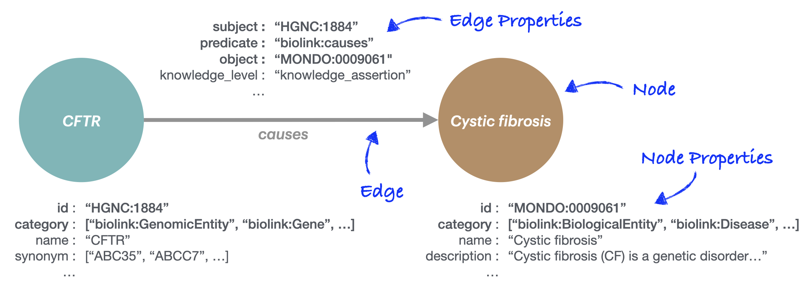
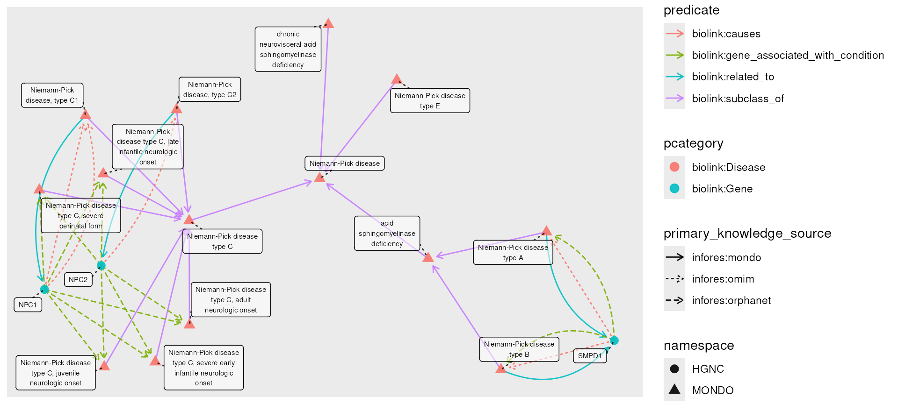
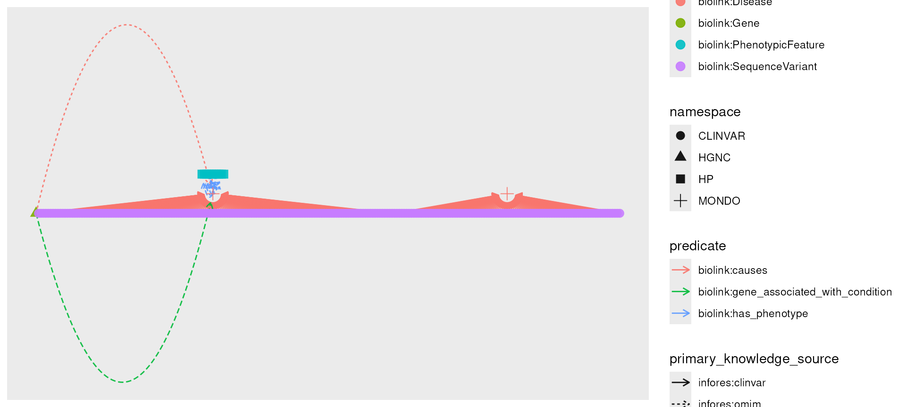
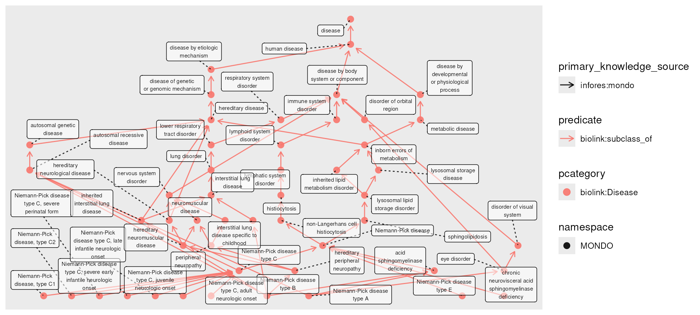
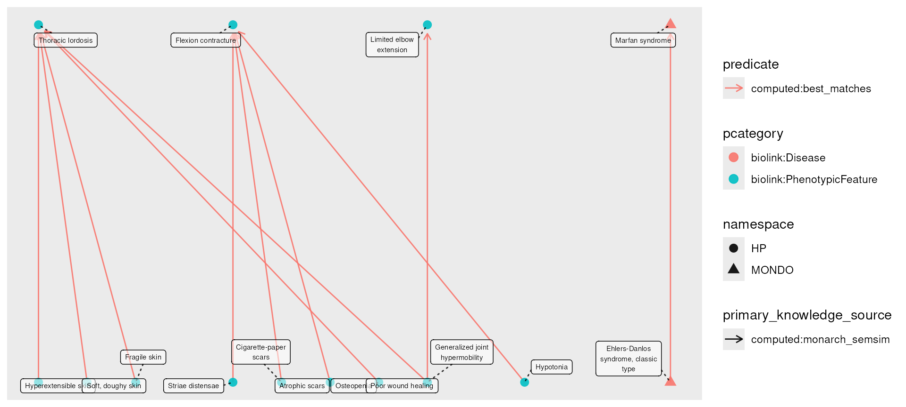
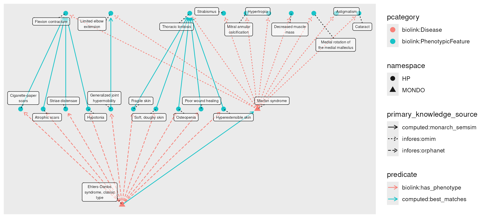
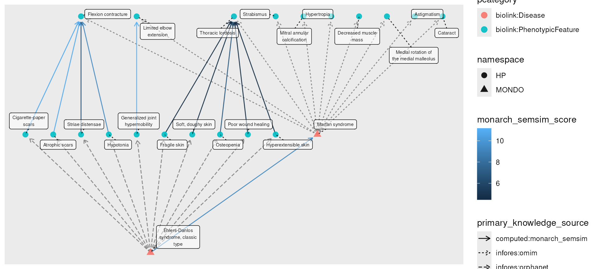

vignettes/monarchr.Rmd
monarchr.RmdKnowledge graphs (KGs) represent entities (such as genes, diseases,
or phenotypes) and the relationships between them; for example that the
CFTR gene causes the disease
Cystic fibrosis. In the Monarch Initiative KG, this
information is stored in a directed, labeled property graph,
with properties attached to the entities (nodes) and relationships
(edges). The KGX format
used by Monarch provides a simple specification for KGs:
id propertycategory property, as a multi-valued
set of category labelssubject, predicate, and
object properties, representing the source, relationship,
and destination of the edge.In the following figure, these required properties are shown in bold:

The monarchr package provides access to the cloud-hosted
Monarch Initiative KG, and others in KGX
format via graph-database and file-based “engines”, with a simple
but flexible set of query functions. The example below finds all of the
sub-types of Neimann-Pick
Disease, and all of the genes associated with those. (You an use the
Monarch Initiative website
to identify IDs for genes, diseases, phenotypes and more, or
search_nodes() described below.)
# MONDO:0001982 Niemann-Pick Disease (13 subtypes)
g <- monarch_engine() |>
fetch_nodes(query_ids = c("MONDO:0001982")) |>
expand(predicates = "biolink:subclass_of", direction = "in", transitive = TRUE) |>
expand(categories = "biolink:Gene")## Trying to connect to https://neo4j.monarchinitiative.org## Connected to https://neo4j.monarchinitiative.org## Fetching; counting matching nodes... total: 1.
## Fetching; fetched1of1
## Expanding; counting matching edges... total: 13.
## Expanding; fetched13of13edges.
## Expanding; counting matching edges... total: 21.
## Expanding; fetched21of21edges.
plot(g)## Using "stress" as default layout
gGraph with 17 nodes and 34 edges. Expand sections below for details.
Showing 17 of 17 nodes:
| id | pcategory | name | symbol | in_taxon_label | description | synonym (list) | category (list) | iri | xref (list) | file_source | narrow_synonym (list) | namespace | provided_by | exact_synonym (list) | subsets (list) | broad_synonym (list) | related_synonym (list) | in_taxon | type | full_name |
|---|---|---|---|---|---|---|---|---|---|---|---|---|---|---|---|---|---|---|---|---|
| “MONDO:0001982” | “biolink:Disease” | “Niemann-Pick disease” | NA | NA | “A group of inherited, severe metabolic disorders in which sphingomyelin accumulates in lysosomes in cells. The lysosomes normally transport material through and out of the cell.” | list(c(“Niemann-Pick disease with cholesterol esterification block”, “Niemann-Pick disease, subacute juvenile form”, “lipoid histiocytosis (classical phosphatide)”, “sphingomyelin/cholesterol lipidosis”, “type A Niemann-Pick disease”)) | c(“biolink:Disease”, “biolink:DiseaseOrPhenotypicFeature”, “biolink:OntologyClass”, “biolink:BiologicalEntity”, “biolink:ThingWithTaxon”, “biolink:NamedThing”, “biolink:Entity”) | “http://purl.obolibrary.org/obo/MONDO_0001982” | list(c(“DOID:14504”, “EFO:1001380”, “GARD:0013334”, “ICD10CM:E75.24”, “MEDGEN:10348”, “MESH:D009542”, “NANDO:2200561”, “NCIT:C61269”, “SCTID:58459009”, “UMLS:C0028064”, “icd11.foundation:398872780”)) | “phenio_nodes” | list(“type A Niemann-Pick disease”) | “MONDO” | “phenio_nodes” | list(c(“Niemann-Pick disease with cholesterol esterification block”, “Niemann-Pick disease, subacute juvenile form”, “lipoid histiocytosis (classical phosphatide)”, “sphingomyelin/cholesterol lipidosis”)) | list(c(“doid_rare”, “gard_rare”, “ncit_rare”, “nord_rare”, “otar”, “rare”)) | NA | NA | NA | NA | NA |
| “MONDO:0100464” | “biolink:Disease” | “acid sphingomyelinase deficiency” | NA | NA | “An autosomal recessive lysosomal disease caused by biallelic loss of function variants in the SMPD1 gene. Clinical symptoms in affected individuals occur along a continuum. At the severe end of the spectrum are individuals historically diagnosed with Niemann-Pick disease type A (the neurovisceral form), which is characterized by hepatosplenomegaly with rapid neurological deterioration leading to death in the first few years of life. At the milder end of the spectrum are individuals historically diagnosed with Niemann-Pick disease type B, a later-onset, chronic visceral form, characterized by progressive visceral organ symptoms including hepatosplenomegaly and pulmonary insufficiency, and survival into adulthood. In addition, some affected individuals present with an intermediate phenotype, Niemann-Pick disease type A/B.” | NA | c(“biolink:Disease”, “biolink:DiseaseOrPhenotypicFeature”, “biolink:OntologyClass”, “biolink:BiologicalEntity”, “biolink:ThingWithTaxon”, “biolink:NamedThing”, “biolink:Entity”) | “http://purl.obolibrary.org/obo/MONDO_0100464” | list(c(“GARD:0026231”, “MEDGEN:1800807”, “UMLS:C5243927”)) | “phenio_nodes” | NA | “MONDO” | “phenio_nodes” | NA | list(c(“clingen”, “gard_rare”, “otar”, “rare”)) | NA | NA | NA | NA | NA |
| “MONDO:0009756” | “biolink:Disease” | “Niemann-Pick disease type A” | NA | NA | “Niemann-Pick disease type A is a very severe subtype of Niemann-Pick disease, an autosomal recessive lysosomal disease, and is characterized clinically by onset in infancy or early childhood with failure to thrive, hepatosplenomegaly, and rapidly progressive neurodegenerative disorders.” | NA | c(“biolink:Disease”, “biolink:DiseaseOrPhenotypicFeature”, “biolink:OntologyClass”, “biolink:BiologicalEntity”, “biolink:ThingWithTaxon”, “biolink:NamedThing”, “biolink:Entity”) | “http://purl.obolibrary.org/obo/MONDO_0009756” | list(c(“DOID:0070111”, “GARD:0007206”, “ICD10CM:E75.240”, “MEDGEN:78650”, “MESH:D052536”, “NANDO:1200061”, “NANDO:2201206”, “NCIT:C126561”, “OMIM:257200”, “Orphanet:77292”, “SCTID:52165006”, “UMLS:C0268242”, “icd11.foundation:530611243”)) | “phenio_nodes” | NA | “MONDO” | “phenio_nodes” | NA | list(c(“doid_rare”, “gard_rare”, “ncit_rare”, “nord_rare”, “ordo_disorder”, “orphanet_rare”, “otar”, “rare”)) | NA | NA | NA | NA | NA |
| “MONDO:0018982” | “biolink:Disease” | “Niemann-Pick disease type C” | NA | NA | “NPC is a complex lipid storage disease mainly characterized by the accumulation of unesterified cholesterol in the late endosomal/lysosomal compartment.” | list(c(“NPC”, “Niemann Pick Disease Type C”)) | c(“biolink:Disease”, “biolink:DiseaseOrPhenotypicFeature”, “biolink:OntologyClass”, “biolink:BiologicalEntity”, “biolink:ThingWithTaxon”, “biolink:NamedThing”, “biolink:Entity”) | “http://purl.obolibrary.org/obo/MONDO_0018982” | list(c(“GARD:0007207”, “ICD10CM:E75.242”, “MEDGEN:67399”, “MESH:D052556”, “NANDO:1200063”, “NORD:1509”, “Orphanet:646”, “SCTID:66751000”, “UMLS:C0220756”, “icd11.foundation:812702125”)) | “phenio_nodes” | NA | “MONDO” | “phenio_nodes” | list(“Niemann Pick Disease Type C”) | list(c(“gard_rare”, “nord_rare”, “ordo_disorder”, “orphanet_rare”, “otar”, “rare”)) | list(“NPC”) | NA | NA | NA | NA |
| “MONDO:0009757” | “biolink:Disease” | “Niemann-Pick disease, type C1” | NA | NA | “Type C Niemann-Pick disease associated with a mutation in the gene NPC1, encoding Niemann-Pick C1 protein.” | list(c(“NPC1”, “Niemann-Pick disease type C1”, “Niemann-Pick disease, type C1”, “type C1 Niemann-Pick disease”)) | c(“biolink:Disease”, “biolink:DiseaseOrPhenotypicFeature”, “biolink:OntologyClass”, “biolink:BiologicalEntity”, “biolink:ThingWithTaxon”, “biolink:NamedThing”, “biolink:Entity”) | “http://purl.obolibrary.org/obo/MONDO_0009757” | list(c(“DOID:0070113”, “GARD:0024693”, “MEDGEN:465922”, “NCIT:C126864”, “OMIM:257220”, “SCTID:18927009”, “SCTID:67855008”, “UMLS:C3179455”)) | “phenio_nodes” | NA | “MONDO” | “phenio_nodes” | list(c(“Niemann-Pick disease, type C1”, “type C1 Niemann-Pick disease”)) | list(c(“clingen”, “doid_rare”, “gard_rare”, “ncit_rare”, “rare”)) | NA | list(c(“NPC1”, “Niemann-Pick disease type C1”)) | NA | NA | NA |
| “MONDO:0011871” | “biolink:Disease” | “Niemann-Pick disease type B” | NA | NA | “Niemann-Pick disease type B is a mild subtype of Niemann-Pick disease, an autosomal recessive lysosomal disease, and is characterized clinically by onset in childhood with hepatosplenomegaly, growth retardation, and lung disorders such as infections and dyspnea” | list(c(“Niemann Pick disease type B”, “type B Niemann-Pick disease”)) | c(“biolink:Disease”, “biolink:DiseaseOrPhenotypicFeature”, “biolink:OntologyClass”, “biolink:BiologicalEntity”, “biolink:ThingWithTaxon”, “biolink:NamedThing”, “biolink:Entity”) | “http://purl.obolibrary.org/obo/MONDO_0011871” | list(c(“DOID:0070112”, “GARD:0010729”, “ICD10CM:E75.241”, “MEDGEN:78651”, “MESH:D052537”, “NANDO:1200062”, “NANDO:2201207”, “NCIT:C126866”, “OMIM:607616”, “Orphanet:77293”, “SCTID:39390005”, “UMLS:C0268243”, “icd11.foundation:327269975”)) | “phenio_nodes” | NA | “MONDO” | “phenio_nodes” | list(“type B Niemann-Pick disease”) | list(c(“doid_rare”, “gard_rare”, “ncit_rare”, “nord_rare”, “ordo_disorder”, “orphanet_rare”, “otar”, “rare”)) | NA | list(“Niemann Pick disease type B”) | NA | NA | NA |
| “MONDO:0011873” | “biolink:Disease” | “Niemann-Pick disease, type C2” | NA | NA | “Niemann-Pick disease type C2 is a rare metabolic condition that affects many different parts of the body. Although signs and symptoms can develop at any age (infancy through adulthood), most affected people develop features of the condition during childhood. Neimann-Pick disease type C2 may be characterized by ataxia (difficulty coordinating movements), vertical supranuclear gaze palsy (inability to move the eyes vertically), poor muscle tone, hepatosplenomegaly (enlarged liver and spleen), interstitial lung disease, intellectual decline, seizures, speech problems, and difficulty swallowing. Niemann-Pick disease type C2 is caused by changes (mutations) in the NPC2 gene and is inherited in an autosomal recessive manner. There is, unfortunately, no cure for Niemann-Pick disease type C2. Treatment is based on the signs and symptoms present in each person.” | list(c(“NPC2”, “Niemann-Pick disease type C2”, “Niemann-Pick disease, type C2”, “type C2 Niemann-Pick disease”)) | c(“biolink:Disease”, “biolink:DiseaseOrPhenotypicFeature”, “biolink:OntologyClass”, “biolink:BiologicalEntity”, “biolink:ThingWithTaxon”, “biolink:NamedThing”, “biolink:Entity”) | “http://purl.obolibrary.org/obo/MONDO_0011873” | list(c(“DOID:0070114”, “GARD:0003992”, “MEDGEN:335942”, “MESH:C536119”, “NCIT:C126865”, “OMIM:607625”, “UMLS:C1843366”)) | “phenio_nodes” | NA | “MONDO” | “phenio_nodes” | list(c(“NPC2”, “Niemann-Pick disease, type C2”, “type C2 Niemann-Pick disease”)) | list(c(“clingen”, “doid_rare”, “gard_rare”, “ncit_rare”, “rare”)) | NA | list(“Niemann-Pick disease type C2”) | NA | NA | NA |
| “MONDO:0016306” | “biolink:Disease” | “Niemann-Pick disease type C, severe perinatal form” | NA | NA | NA | NA | c(“biolink:Disease”, “biolink:DiseaseOrPhenotypicFeature”, “biolink:OntologyClass”, “biolink:BiologicalEntity”, “biolink:ThingWithTaxon”, “biolink:NamedThing”, “biolink:Entity”) | “http://purl.obolibrary.org/obo/MONDO_0016306” | list(c(“GARD:0020504”, “MEDGEN:1842349”, “Orphanet:216972”, “UMLS:C5680866”)) | “phenio_nodes” | NA | “MONDO” | “phenio_nodes” | NA | list(c(“gard_rare”, “nord_rare”, “ordo_subtype_of_a_disorder”, “otar”, “rare”)) | NA | NA | NA | NA | NA |
| “MONDO:0016307” | “biolink:Disease” | “Niemann-Pick disease type C, severe early infantile neurologic onset” | NA | NA | NA | NA | c(“biolink:Disease”, “biolink:DiseaseOrPhenotypicFeature”, “biolink:OntologyClass”, “biolink:BiologicalEntity”, “biolink:ThingWithTaxon”, “biolink:NamedThing”, “biolink:Entity”) | “http://purl.obolibrary.org/obo/MONDO_0016307” | list(c(“GARD:0020505”, “MEDGEN:1842400”, “Orphanet:216975”, “UMLS:C5680868”, “icd11.foundation:587642791”)) | “phenio_nodes” | NA | “MONDO” | “phenio_nodes” | NA | list(c(“gard_rare”, “nord_rare”, “ordo_subtype_of_a_disorder”, “otar”, “rare”)) | NA | NA | NA | NA | NA |
| “MONDO:0016308” | “biolink:Disease” | “Niemann-Pick disease type C, late infantile neurologic onset” | NA | NA | NA | NA | c(“biolink:Disease”, “biolink:DiseaseOrPhenotypicFeature”, “biolink:OntologyClass”, “biolink:BiologicalEntity”, “biolink:ThingWithTaxon”, “biolink:NamedThing”, “biolink:Entity”) | “http://purl.obolibrary.org/obo/MONDO_0016308” | list(c(“GARD:0020506”, “MEDGEN:1843353”, “Orphanet:216978”, “UMLS:C5680867”, “icd11.foundation:2075382821”)) | “phenio_nodes” | NA | “MONDO” | “phenio_nodes” | NA | list(c(“gard_rare”, “nord_rare”, “ordo_subtype_of_a_disorder”, “otar”, “rare”)) | NA | NA | NA | NA | NA |
| “MONDO:0016309” | “biolink:Disease” | “Niemann-Pick disease type C, juvenile neurologic onset” | NA | NA | NA | list(“Niemann-Pick disease type C, classic form”) | c(“biolink:Disease”, “biolink:DiseaseOrPhenotypicFeature”, “biolink:OntologyClass”, “biolink:BiologicalEntity”, “biolink:ThingWithTaxon”, “biolink:NamedThing”, “biolink:Entity”) | “http://purl.obolibrary.org/obo/MONDO_0016309” | list(c(“GARD:0020507”, “MEDGEN:1842257”, “Orphanet:216981”, “UMLS:C5679813”, “icd11.foundation:2006062681”)) | “phenio_nodes” | NA | “MONDO” | “phenio_nodes” | list(“Niemann-Pick disease type C, classic form”) | list(c(“gard_rare”, “nord_rare”, “ordo_subtype_of_a_disorder”, “otar”, “rare”)) | NA | NA | NA | NA | NA |
| “MONDO:0016310” | “biolink:Disease” | “Niemann-Pick disease type C, adult neurologic onset” | NA | NA | NA | NA | c(“biolink:Disease”, “biolink:DiseaseOrPhenotypicFeature”, “biolink:OntologyClass”, “biolink:BiologicalEntity”, “biolink:ThingWithTaxon”, “biolink:NamedThing”, “biolink:Entity”) | “http://purl.obolibrary.org/obo/MONDO_0016310” | list(c(“GARD:0020508”, “MEDGEN:1826101”, “NANDO:1200065”, “NANDO:2201209”, “Orphanet:216986”, “UMLS:C5680869”, “icd11.foundation:77127214”)) | “phenio_nodes” | NA | “MONDO” | “phenio_nodes” | NA | list(c(“gard_rare”, “nord_rare”, “ordo_subtype_of_a_disorder”, “otar”, “rare”)) | NA | NA | NA | NA | NA |
| “MONDO:0020384” | “biolink:Disease” | “Niemann-Pick disease type E” | NA | NA | “Niemann-Pick disease, type E is a poorly defined adult-onset and non-neuronopathic form of Niemann-Pick disease.” | NA | c(“biolink:Disease”, “biolink:DiseaseOrPhenotypicFeature”, “biolink:OntologyClass”, “biolink:BiologicalEntity”, “biolink:ThingWithTaxon”, “biolink:NamedThing”, “biolink:Entity”) | “http://purl.obolibrary.org/obo/MONDO_0020384” | list(c(“GARD:0025159”, “MEDGEN:82781”, “Orphanet:99022”, “SCTID:73399005”, “UMLS:C0268248”)) | “phenio_nodes” | NA | “MONDO” | “phenio_nodes” | NA | list(c(“gard_rare”, “otar”, “rare”)) | NA | NA | NA | NA | NA |
| “MONDO:0850058” | “biolink:Disease” | “chronic neurovisceral acid sphingomyelinase deficiency” | NA | NA | NA | NA | c(“biolink:Disease”, “biolink:DiseaseOrPhenotypicFeature”, “biolink:OntologyClass”, “biolink:BiologicalEntity”, “biolink:ThingWithTaxon”, “biolink:NamedThing”, “biolink:Entity”) | “http://purl.obolibrary.org/obo/MONDO_0850058” | list(c(“GARD:0022456”, “ICD10CM:E75.244”, “MEDGEN:1842316”, “Orphanet:618891”, “UMLS:C5539139”)) | “phenio_nodes” | NA | “MONDO” | “phenio_nodes” | NA | list(c(“gard_rare”, “nord_rare”, “ordo_disorder”, “orphanet_rare”, “rare”)) | NA | NA | NA | NA | NA |
| “HGNC:11120” | “biolink:Gene” | “SMPD1” | “SMPD1” | “Homo sapiens” | NA | list(c(“ASM”, “acid sphingomyelinase”, “Niemann-Pick type A/B”, “sphingomyelin phosphodiesterase 1, acid lysosomal”)) | c(“biolink:Gene”, “biolink:GeneOrGeneProduct”, “biolink:GeneOrGeneProductOrGeneFamily”, “biolink:GenomicEntity”, “biolink:ChemicalEntityOrGeneOrGeneProduct”, “biolink:PhysicalEssence”, “biolink:OntologyClass”, “biolink:BiologicalEntity”, “biolink:ThingWithTaxon”, “biolink:NamedThing”, “biolink:Entity”, “biolink:PhysicalEssenceOrOccurrent”, “biolink:MacromolecularMachineMixin”) | NA | list(c(“ENSEMBL:ENSG00000166311”, “OMIM:607608”)) | “hgnc_gene_nodes” | NA | “HGNC” | “hgnc_gene_nodes” | NA | NA | NA | NA | “NCBITaxon:9606” | “SO:0001217” | “sphingomyelin phosphodiesterase 1” |
| “HGNC:7897” | “biolink:Gene” | “NPC1” | “NPC1” | “Homo sapiens” | NA | list(c(“SLC65A1”, “Niemann-Pick disease, type C1”)) | c(“biolink:Gene”, “biolink:GeneOrGeneProduct”, “biolink:GeneOrGeneProductOrGeneFamily”, “biolink:GenomicEntity”, “biolink:ChemicalEntityOrGeneOrGeneProduct”, “biolink:PhysicalEssence”, “biolink:OntologyClass”, “biolink:BiologicalEntity”, “biolink:ThingWithTaxon”, “biolink:NamedThing”, “biolink:Entity”, “biolink:PhysicalEssenceOrOccurrent”, “biolink:MacromolecularMachineMixin”) | NA | list(c(“ENSEMBL:ENSG00000141458”, “OMIM:607623”)) | “hgnc_gene_nodes” | NA | “HGNC” | “hgnc_gene_nodes” | NA | NA | NA | NA | “NCBITaxon:9606” | “SO:0001217” | “NPC intracellular cholesterol transporter 1” |
| “HGNC:14537” | “biolink:Gene” | “NPC2” | “NPC2” | “Homo sapiens” | NA | list(c(“HE1”, “NP-C2”, “EDDM1”, “epididymal protein 1”, “Niemann-Pick disease, type C2”)) | c(“biolink:Gene”, “biolink:GeneOrGeneProduct”, “biolink:GeneOrGeneProductOrGeneFamily”, “biolink:GenomicEntity”, “biolink:ChemicalEntityOrGeneOrGeneProduct”, “biolink:PhysicalEssence”, “biolink:OntologyClass”, “biolink:BiologicalEntity”, “biolink:ThingWithTaxon”, “biolink:NamedThing”, “biolink:Entity”, “biolink:PhysicalEssenceOrOccurrent”, “biolink:MacromolecularMachineMixin”) | NA | list(c(“ENSEMBL:ENSG00000119655”, “OMIM:601015”)) | “hgnc_gene_nodes” | NA | “HGNC” | “hgnc_gene_nodes” | NA | NA | NA | NA | “NCBITaxon:9606” | “SO:0001217” | “NPC intracellular cholesterol transporter 2” |
Showing 34 of 34 edges:
| from | to | subject | predicate | object | primary_knowledge_source | knowledge_level | evidence_count | file_source | grouping_key | agent_type | original_predicate | aggregator_knowledge_source (list) | provided_by | id | category (list) | original_subject | original_object |
|---|---|---|---|---|---|---|---|---|---|---|---|---|---|---|---|---|---|
| 3 | 2 | “MONDO:0009756” | “biolink:subclass_of” | “MONDO:0100464” | “infores:mondo” | “not_provided” | 0 | “phenio_edges” | “MONDO:0009756||biolink:subclass_of|MONDO:0100464” | “not_provided” | “rdfs:subClassOf” | list(c(“infores:monarchinitiative”, “infores:phenio”)) | “phenio_edges” | “urn:uuid:e7263cab-8e59-4c02-8ec2-e2e5b38b46f2” | list(c(“biolink:Association”, “biolink:Entity”)) | NA | NA |
| 5 | 4 | “MONDO:0009757” | “biolink:subclass_of” | “MONDO:0018982” | “infores:mondo” | “not_provided” | 0 | “phenio_edges” | “MONDO:0009757||biolink:subclass_of|MONDO:0018982” | “not_provided” | “rdfs:subClassOf” | list(c(“infores:monarchinitiative”, “infores:phenio”)) | “phenio_edges” | “urn:uuid:01129884-8b43-44eb-b802-d172268ab6a2” | list(c(“biolink:Association”, “biolink:Entity”)) | NA | NA |
| 6 | 2 | “MONDO:0011871” | “biolink:subclass_of” | “MONDO:0100464” | “infores:mondo” | “not_provided” | 0 | “phenio_edges” | “MONDO:0011871||biolink:subclass_of|MONDO:0100464” | “not_provided” | “rdfs:subClassOf” | list(c(“infores:monarchinitiative”, “infores:phenio”)) | “phenio_edges” | “urn:uuid:3bb3d395-7420-4c99-9230-8e3c95a9cb0e” | list(c(“biolink:Association”, “biolink:Entity”)) | NA | NA |
| 7 | 4 | “MONDO:0011873” | “biolink:subclass_of” | “MONDO:0018982” | “infores:mondo” | “not_provided” | 0 | “phenio_edges” | “MONDO:0011873||biolink:subclass_of|MONDO:0018982” | “not_provided” | “rdfs:subClassOf” | list(c(“infores:monarchinitiative”, “infores:phenio”)) | “phenio_edges” | “urn:uuid:7746b6ad-d821-4341-9757-38e7042aade9” | list(c(“biolink:Association”, “biolink:Entity”)) | NA | NA |
| 8 | 4 | “MONDO:0016306” | “biolink:subclass_of” | “MONDO:0018982” | “infores:mondo” | “not_provided” | 0 | “phenio_edges” | “MONDO:0016306||biolink:subclass_of|MONDO:0018982” | “not_provided” | “rdfs:subClassOf” | list(c(“infores:monarchinitiative”, “infores:phenio”)) | “phenio_edges” | “urn:uuid:d6d4de22-7d23-4218-8a0b-0c5d3dbe0e34” | list(c(“biolink:Association”, “biolink:Entity”)) | NA | NA |
| 9 | 4 | “MONDO:0016307” | “biolink:subclass_of” | “MONDO:0018982” | “infores:mondo” | “not_provided” | 0 | “phenio_edges” | “MONDO:0016307||biolink:subclass_of|MONDO:0018982” | “not_provided” | “rdfs:subClassOf” | list(c(“infores:monarchinitiative”, “infores:phenio”)) | “phenio_edges” | “urn:uuid:b78459ec-8cec-40a6-a3ce-41642e489f4d” | list(c(“biolink:Association”, “biolink:Entity”)) | NA | NA |
| 10 | 4 | “MONDO:0016308” | “biolink:subclass_of” | “MONDO:0018982” | “infores:mondo” | “not_provided” | 0 | “phenio_edges” | “MONDO:0016308||biolink:subclass_of|MONDO:0018982” | “not_provided” | “rdfs:subClassOf” | list(c(“infores:monarchinitiative”, “infores:phenio”)) | “phenio_edges” | “urn:uuid:9f4bb618-ba55-4109-8801-ceb31519ef13” | list(c(“biolink:Association”, “biolink:Entity”)) | NA | NA |
| 11 | 4 | “MONDO:0016309” | “biolink:subclass_of” | “MONDO:0018982” | “infores:mondo” | “not_provided” | 0 | “phenio_edges” | “MONDO:0016309||biolink:subclass_of|MONDO:0018982” | “not_provided” | “rdfs:subClassOf” | list(c(“infores:monarchinitiative”, “infores:phenio”)) | “phenio_edges” | “urn:uuid:3ea400c7-fd96-4f9c-931f-b90c3d23350f” | list(c(“biolink:Association”, “biolink:Entity”)) | NA | NA |
| 12 | 4 | “MONDO:0016310” | “biolink:subclass_of” | “MONDO:0018982” | “infores:mondo” | “not_provided” | 0 | “phenio_edges” | “MONDO:0016310||biolink:subclass_of|MONDO:0018982” | “not_provided” | “rdfs:subClassOf” | list(c(“infores:monarchinitiative”, “infores:phenio”)) | “phenio_edges” | “urn:uuid:22cc3b96-4bf7-493c-a389-04e23ab904c7” | list(c(“biolink:Association”, “biolink:Entity”)) | NA | NA |
| 4 | 1 | “MONDO:0018982” | “biolink:subclass_of” | “MONDO:0001982” | “infores:mondo” | “not_provided” | 0 | “phenio_edges” | “MONDO:0018982||biolink:subclass_of|MONDO:0001982” | “not_provided” | “rdfs:subClassOf” | list(c(“infores:monarchinitiative”, “infores:phenio”)) | “phenio_edges” | “urn:uuid:7dd078fd-3f7d-4b49-842b-d52b0368e909” | list(c(“biolink:Association”, “biolink:Entity”)) | NA | NA |
| 13 | 1 | “MONDO:0020384” | “biolink:subclass_of” | “MONDO:0001982” | “infores:mondo” | “not_provided” | 0 | “phenio_edges” | “MONDO:0020384||biolink:subclass_of|MONDO:0001982” | “not_provided” | “rdfs:subClassOf” | list(c(“infores:monarchinitiative”, “infores:phenio”)) | “phenio_edges” | “urn:uuid:8476aa88-541d-4c7a-8dec-1bf810a5beb2” | list(c(“biolink:Association”, “biolink:Entity”)) | NA | NA |
| 2 | 1 | “MONDO:0100464” | “biolink:subclass_of” | “MONDO:0001982” | “infores:mondo” | “not_provided” | 0 | “phenio_edges” | “MONDO:0100464||biolink:subclass_of|MONDO:0001982” | “not_provided” | “rdfs:subClassOf” | list(c(“infores:monarchinitiative”, “infores:phenio”)) | “phenio_edges” | “urn:uuid:c37572c5-9221-4767-bdee-01ac9b2b401d” | list(c(“biolink:Association”, “biolink:Entity”)) | NA | NA |
| 14 | 1 | “MONDO:0850058” | “biolink:subclass_of” | “MONDO:0001982” | “infores:mondo” | “not_provided” | 0 | “phenio_edges” | “MONDO:0850058||biolink:subclass_of|MONDO:0001982” | “not_provided” | “rdfs:subClassOf” | list(c(“infores:monarchinitiative”, “infores:phenio”)) | “phenio_edges” | “urn:uuid:c75ecdc1-b685-42f9-8229-12e2112c53ac” | list(c(“biolink:Association”, “biolink:Entity”)) | NA | NA |
| 15 | 3 | “HGNC:11120” | “biolink:causes” | “MONDO:0009756” | “infores:omim” | “not_provided” | 0 | “omim_gene_to_disease_edges” | “HGNC:11120||biolink:causes|MONDO:0009756” | “not_provided” | NA | list(“infores:monarchinitiative”) | “omim_gene_to_disease_edges” | “uuid:cd233208-d067-4a01-a55c-c2baad742952” | list(c(“biolink:CausalGeneToDiseaseAssociation”, “biolink:GeneToEntityAssociationMixin”, “biolink:Association”, “biolink:Entity”)) | “OMIM:607608” | “OMIM:257200” |
| 15 | 6 | “HGNC:11120” | “biolink:causes” | “MONDO:0011871” | “infores:omim” | “not_provided” | 0 | “omim_gene_to_disease_edges” | “HGNC:11120||biolink:causes|MONDO:0011871” | “not_provided” | NA | list(“infores:monarchinitiative”) | “omim_gene_to_disease_edges” | “uuid:760121b0-b995-4ba7-b82c-1dd4cb9ed1d8” | list(c(“biolink:CausalGeneToDiseaseAssociation”, “biolink:GeneToEntityAssociationMixin”, “biolink:Association”, “biolink:Entity”)) | “OMIM:607608” | “OMIM:607616” |
| 16 | 5 | “HGNC:7897” | “biolink:causes” | “MONDO:0009757” | “infores:omim” | “not_provided” | 0 | “omim_gene_to_disease_edges” | “HGNC:7897||biolink:causes|MONDO:0009757” | “not_provided” | NA | list(“infores:monarchinitiative”) | “omim_gene_to_disease_edges” | “uuid:5d8607a0-1a83-4439-ac51-d11a17113f39” | list(c(“biolink:CausalGeneToDiseaseAssociation”, “biolink:GeneToEntityAssociationMixin”, “biolink:Association”, “biolink:Entity”)) | “OMIM:607623” | “OMIM:257220” |
| 16 | 5 | “HGNC:7897” | “biolink:causes” | “MONDO:0009757” | “infores:omim” | “not_provided” | 0 | “omim_gene_to_disease_edges” | “HGNC:7897||biolink:causes|MONDO:0009757” | “not_provided” | NA | list(“infores:monarchinitiative”) | “omim_gene_to_disease_edges” | “uuid:5fe3ffc4-7086-4f64-9e47-ef374c366067” | list(c(“biolink:CausalGeneToDiseaseAssociation”, “biolink:GeneToEntityAssociationMixin”, “biolink:Association”, “biolink:Entity”)) | “OMIM:607623” | “OMIM:257220” |
| 17 | 7 | “HGNC:14537” | “biolink:causes” | “MONDO:0011873” | “infores:omim” | “not_provided” | 0 | “omim_gene_to_disease_edges” | “HGNC:14537||biolink:causes|MONDO:0011873” | “not_provided” | NA | list(“infores:monarchinitiative”) | “omim_gene_to_disease_edges” | “uuid:44969ae6-a3d4-40f8-b2f2-dc76dcb0c7d1” | list(c(“biolink:CausalGeneToDiseaseAssociation”, “biolink:GeneToEntityAssociationMixin”, “biolink:Association”, “biolink:Entity”)) | “OMIM:601015” | “OMIM:607625” |
| 3 | 15 | “MONDO:0009756” | “biolink:related_to” | “HGNC:11120” | “infores:mondo” | “not_provided” | 0 | “phenio_edges” | “MONDO:0009756||biolink:related_to|HGNC:11120” | “not_provided” | “RO:0004003” | list(c(“infores:monarchinitiative”, “infores:phenio”)) | “phenio_edges” | “urn:uuid:70f997fb-139a-4dfd-b5bf-e4ebe7bde781” | list(c(“biolink:Association”, “biolink:Entity”)) | NA | NA |
| 5 | 16 | “MONDO:0009757” | “biolink:related_to” | “HGNC:7897” | “infores:mondo” | “not_provided” | 0 | “phenio_edges” | “MONDO:0009757||biolink:related_to|HGNC:7897” | “not_provided” | “RO:0004003” | list(c(“infores:monarchinitiative”, “infores:phenio”)) | “phenio_edges” | “urn:uuid:c7e3be4d-e0c9-41ce-a078-44a6ff675646” | list(c(“biolink:Association”, “biolink:Entity”)) | NA | NA |
| 6 | 15 | “MONDO:0011871” | “biolink:related_to” | “HGNC:11120” | “infores:mondo” | “not_provided” | 0 | “phenio_edges” | “MONDO:0011871||biolink:related_to|HGNC:11120” | “not_provided” | “RO:0004003” | list(c(“infores:monarchinitiative”, “infores:phenio”)) | “phenio_edges” | “urn:uuid:0e0d54c6-4e23-4a54-a846-ee1e2a152322” | list(c(“biolink:Association”, “biolink:Entity”)) | NA | NA |
| 7 | 17 | “MONDO:0011873” | “biolink:related_to” | “HGNC:14537” | “infores:mondo” | “not_provided” | 0 | “phenio_edges” | “MONDO:0011873||biolink:related_to|HGNC:14537” | “not_provided” | “RO:0004003” | list(c(“infores:monarchinitiative”, “infores:phenio”)) | “phenio_edges” | “urn:uuid:64321f88-c95d-45e5-a019-3b8be9bf7cbb” | list(c(“biolink:Association”, “biolink:Entity”)) | NA | NA |
| 17 | 8 | “HGNC:14537” | “biolink:gene_associated_with_condition” | “MONDO:0016306” | “infores:orphanet” | “knowledge_assertion” | 0 | “hpoa_gene_to_disease_edges” | “HGNC:14537||biolink:gene_associated_with_condition|MONDO:0016306” | “manual_agent” | NA | list(“infores:monarchinitiative”) | “hpoa_gene_to_disease_edges” | “uuid:9d2caf5a-8ede-11f1-9424-000d3aa60caf” | list(c(“biolink:CorrelatedGeneToDiseaseAssociation”, “biolink:EntityToDiseaseAssociationMixin”, “biolink:GeneToEntityAssociationMixin”, “biolink:Association”, “biolink:Entity”, “biolink:EntityToFeatureOrDiseaseQualifiersMixin”, “biolink:FrequencyQualifierMixin”)) | “NCBIGene:10577” | “Orphanet:216972” |
| 16 | 8 | “HGNC:7897” | “biolink:gene_associated_with_condition” | “MONDO:0016306” | “infores:orphanet” | “knowledge_assertion” | 0 | “hpoa_gene_to_disease_edges” | “HGNC:7897||biolink:gene_associated_with_condition|MONDO:0016306” | “manual_agent” | NA | list(“infores:monarchinitiative”) | “hpoa_gene_to_disease_edges” | “uuid:9d2caf5b-8ede-11f1-9424-000d3aa60caf” | list(c(“biolink:CorrelatedGeneToDiseaseAssociation”, “biolink:EntityToDiseaseAssociationMixin”, “biolink:GeneToEntityAssociationMixin”, “biolink:Association”, “biolink:Entity”, “biolink:EntityToFeatureOrDiseaseQualifiersMixin”, “biolink:FrequencyQualifierMixin”)) | “NCBIGene:4864” | “Orphanet:216972” |
| 17 | 9 | “HGNC:14537” | “biolink:gene_associated_with_condition” | “MONDO:0016307” | “infores:orphanet” | “knowledge_assertion” | 0 | “hpoa_gene_to_disease_edges” | “HGNC:14537||biolink:gene_associated_with_condition|MONDO:0016307” | “manual_agent” | NA | list(“infores:monarchinitiative”) | “hpoa_gene_to_disease_edges” | “uuid:9d2caf5e-8ede-11f1-9424-000d3aa60caf” | list(c(“biolink:CorrelatedGeneToDiseaseAssociation”, “biolink:EntityToDiseaseAssociationMixin”, “biolink:GeneToEntityAssociationMixin”, “biolink:Association”, “biolink:Entity”, “biolink:EntityToFeatureOrDiseaseQualifiersMixin”, “biolink:FrequencyQualifierMixin”)) | “NCBIGene:10577” | “Orphanet:216975” |
| 16 | 9 | “HGNC:7897” | “biolink:gene_associated_with_condition” | “MONDO:0016307” | “infores:orphanet” | “knowledge_assertion” | 0 | “hpoa_gene_to_disease_edges” | “HGNC:7897||biolink:gene_associated_with_condition|MONDO:0016307” | “manual_agent” | NA | list(“infores:monarchinitiative”) | “hpoa_gene_to_disease_edges” | “uuid:9d2caf5f-8ede-11f1-9424-000d3aa60caf” | list(c(“biolink:CorrelatedGeneToDiseaseAssociation”, “biolink:EntityToDiseaseAssociationMixin”, “biolink:GeneToEntityAssociationMixin”, “biolink:Association”, “biolink:Entity”, “biolink:EntityToFeatureOrDiseaseQualifiersMixin”, “biolink:FrequencyQualifierMixin”)) | “NCBIGene:4864” | “Orphanet:216975” |
| 17 | 10 | “HGNC:14537” | “biolink:gene_associated_with_condition” | “MONDO:0016308” | “infores:orphanet” | “knowledge_assertion” | 0 | “hpoa_gene_to_disease_edges” | “HGNC:14537||biolink:gene_associated_with_condition|MONDO:0016308” | “manual_agent” | NA | list(“infores:monarchinitiative”) | “hpoa_gene_to_disease_edges” | “uuid:9d2caf62-8ede-11f1-9424-000d3aa60caf” | list(c(“biolink:CorrelatedGeneToDiseaseAssociation”, “biolink:EntityToDiseaseAssociationMixin”, “biolink:GeneToEntityAssociationMixin”, “biolink:Association”, “biolink:Entity”, “biolink:EntityToFeatureOrDiseaseQualifiersMixin”, “biolink:FrequencyQualifierMixin”)) | “NCBIGene:10577” | “Orphanet:216978” |
| 16 | 10 | “HGNC:7897” | “biolink:gene_associated_with_condition” | “MONDO:0016308” | “infores:orphanet” | “knowledge_assertion” | 0 | “hpoa_gene_to_disease_edges” | “HGNC:7897||biolink:gene_associated_with_condition|MONDO:0016308” | “manual_agent” | NA | list(“infores:monarchinitiative”) | “hpoa_gene_to_disease_edges” | “uuid:9d2caf63-8ede-11f1-9424-000d3aa60caf” | list(c(“biolink:CorrelatedGeneToDiseaseAssociation”, “biolink:EntityToDiseaseAssociationMixin”, “biolink:GeneToEntityAssociationMixin”, “biolink:Association”, “biolink:Entity”, “biolink:EntityToFeatureOrDiseaseQualifiersMixin”, “biolink:FrequencyQualifierMixin”)) | “NCBIGene:4864” | “Orphanet:216978” |
| 17 | 12 | “HGNC:14537” | “biolink:gene_associated_with_condition” | “MONDO:0016310” | “infores:orphanet” | “knowledge_assertion” | 0 | “hpoa_gene_to_disease_edges” | “HGNC:14537||biolink:gene_associated_with_condition|MONDO:0016310” | “manual_agent” | NA | list(“infores:monarchinitiative”) | “hpoa_gene_to_disease_edges” | “uuid:9d2cafaa-8ede-11f1-9424-000d3aa60caf” | list(c(“biolink:CorrelatedGeneToDiseaseAssociation”, “biolink:EntityToDiseaseAssociationMixin”, “biolink:GeneToEntityAssociationMixin”, “biolink:Association”, “biolink:Entity”, “biolink:EntityToFeatureOrDiseaseQualifiersMixin”, “biolink:FrequencyQualifierMixin”)) | “NCBIGene:10577” | “Orphanet:216986” |
| 16 | 12 | “HGNC:7897” | “biolink:gene_associated_with_condition” | “MONDO:0016310” | “infores:orphanet” | “knowledge_assertion” | 0 | “hpoa_gene_to_disease_edges” | “HGNC:7897||biolink:gene_associated_with_condition|MONDO:0016310” | “manual_agent” | NA | list(“infores:monarchinitiative”) | “hpoa_gene_to_disease_edges” | “uuid:9d2cafab-8ede-11f1-9424-000d3aa60caf” | list(c(“biolink:CorrelatedGeneToDiseaseAssociation”, “biolink:EntityToDiseaseAssociationMixin”, “biolink:GeneToEntityAssociationMixin”, “biolink:Association”, “biolink:Entity”, “biolink:EntityToFeatureOrDiseaseQualifiersMixin”, “biolink:FrequencyQualifierMixin”)) | “NCBIGene:4864” | “Orphanet:216986” |
| 17 | 11 | “HGNC:14537” | “biolink:gene_associated_with_condition” | “MONDO:0016309” | “infores:orphanet” | “knowledge_assertion” | 0 | “hpoa_gene_to_disease_edges” | “HGNC:14537||biolink:gene_associated_with_condition|MONDO:0016309” | “manual_agent” | NA | list(“infores:monarchinitiative”) | “hpoa_gene_to_disease_edges” | “uuid:9d2cafb7-8ede-11f1-9424-000d3aa60caf” | list(c(“biolink:CorrelatedGeneToDiseaseAssociation”, “biolink:EntityToDiseaseAssociationMixin”, “biolink:GeneToEntityAssociationMixin”, “biolink:Association”, “biolink:Entity”, “biolink:EntityToFeatureOrDiseaseQualifiersMixin”, “biolink:FrequencyQualifierMixin”)) | “NCBIGene:10577” | “Orphanet:216981” |
| 16 | 11 | “HGNC:7897” | “biolink:gene_associated_with_condition” | “MONDO:0016309” | “infores:orphanet” | “knowledge_assertion” | 0 | “hpoa_gene_to_disease_edges” | “HGNC:7897||biolink:gene_associated_with_condition|MONDO:0016309” | “manual_agent” | NA | list(“infores:monarchinitiative”) | “hpoa_gene_to_disease_edges” | “uuid:9d2cafb8-8ede-11f1-9424-000d3aa60caf” | list(c(“biolink:CorrelatedGeneToDiseaseAssociation”, “biolink:EntityToDiseaseAssociationMixin”, “biolink:GeneToEntityAssociationMixin”, “biolink:Association”, “biolink:Entity”, “biolink:EntityToFeatureOrDiseaseQualifiersMixin”, “biolink:FrequencyQualifierMixin”)) | “NCBIGene:4864” | “Orphanet:216981” |
| 15 | 6 | “HGNC:11120” | “biolink:gene_associated_with_condition” | “MONDO:0011871” | “infores:orphanet” | “knowledge_assertion” | 0 | “hpoa_gene_to_disease_edges” | “HGNC:11120||biolink:gene_associated_with_condition|MONDO:0011871” | “manual_agent” | NA | list(“infores:monarchinitiative”) | “hpoa_gene_to_disease_edges” | “uuid:9d3bc67f-8ede-11f1-9424-000d3aa60caf” | list(c(“biolink:CorrelatedGeneToDiseaseAssociation”, “biolink:EntityToDiseaseAssociationMixin”, “biolink:GeneToEntityAssociationMixin”, “biolink:Association”, “biolink:Entity”, “biolink:EntityToFeatureOrDiseaseQualifiersMixin”, “biolink:FrequencyQualifierMixin”)) | “NCBIGene:6609” | “Orphanet:77293” |
| 15 | 3 | “HGNC:11120” | “biolink:gene_associated_with_condition” | “MONDO:0009756” | “infores:orphanet” | “knowledge_assertion” | 0 | “hpoa_gene_to_disease_edges” | “HGNC:11120||biolink:gene_associated_with_condition|MONDO:0009756” | “manual_agent” | NA | list(“infores:monarchinitiative”) | “hpoa_gene_to_disease_edges” | “uuid:9d3bc680-8ede-11f1-9424-000d3aa60caf” | list(c(“biolink:CorrelatedGeneToDiseaseAssociation”, “biolink:EntityToDiseaseAssociationMixin”, “biolink:GeneToEntityAssociationMixin”, “biolink:Association”, “biolink:Entity”, “biolink:EntityToFeatureOrDiseaseQualifiersMixin”, “biolink:FrequencyQualifierMixin”)) | “NCBIGene:6609” | “Orphanet:77292” |
Backed by tidygraph and igraph,
monarchr is part of a larger ecosystem of graph analyses in
R:
tidygraph
ggraph,visNetwork,
threejs
EGAnet
igraph,
migraph,
netrankr
iGraphMatch
spinner
clustAnalytics
leidenAlg
linkprediction
Two kinds of engines are supported, providing largely the same
functionality: one supporting access to Neo4j graph databases, and another
supporting file-based access to TSV-formatted .tar.gz KGs
hosted at kghub.io. Regardless of source,
KGs must conform to the KGX
specification.
The most accessible engine provided by monarchr is the
monarch_engine(), designed specifically to access the
cloud-hosted Monarch
Initiative KG.
monarch <- monarch_engine()Using another Neo4j database via neo4j_engine() is as
simple as specifying a Neo4j Bolt
endpoint, and username and password if required. This may be used to
host your own Neo4j database for efficient KG access, based on the
Monarch Neo4j docker
deployment.
neodb <- neo4j_engine("http://localhost:7687", username = "user", password = "pass")Finally, the file_engine() provides KG access to
KGX-formatted, .tar.gz files containing tab-separated
*_nodes.tsv and *_edges.tsv files. The package
comes bundled with a small example KG providing information about
Ehlers-Danlos and Marfan syndrome for demonstration purposes. You can
also provide a local file path, or a URL to a remote file, which will be
downloaded to the current working directory. (This example graph can
also be loaded with data(eds_marfan_kg).)
filename <- system.file("extdata", "eds_marfan_kg.tar.gz", package = "monarchr")
# filename <- "https://kghub.io/kg-obo/mondo/2024-03-04/mondo_kgx_tsv.tar.gz"
eds_marfan_kg <- file_engine(filename)Engines support a fetch_nodes() function for pulling
nodes by specified criteria. It returns a tidygraph-based
graph, but only nodes, not any edges that may connect them. These can be
specified as a set of IDs:
g <- monarch |>
fetch_nodes(query_ids = c("MONDO:0009061", "HGNC:1884"))
gGraph with 2 nodes and 0 edges. Expand sections below for details.
Showing 2 of 2 nodes:
| id | pcategory | name | symbol | in_taxon_label | description | synonym (list) | category (list) | xref (list) | in_taxon | file_source | type | full_name | namespace | provided_by | iri | exact_synonym (list) | related_synonym (list) | subsets (list) |
|---|---|---|---|---|---|---|---|---|---|---|---|---|---|---|---|---|---|---|
| “HGNC:1884” | “biolink:Gene” | “CFTR” | “CFTR” | “Homo sapiens” | NA | list(c(“MRP7”, “ABC35”, “TNR-CFTR”, “dJ760C5.1”, “CFTR/MRP”, “ATP-binding cassette sub-family C, member 7”, “CF”, “ABCC7”, “cystic fibrosis transmembrane conductance regulator, ATP-binding cassette (sub-family C, member 7)”)) | c(“biolink:Gene”, “biolink:GeneOrGeneProduct”, “biolink:GeneOrGeneProductOrGeneFamily”, “biolink:GenomicEntity”, “biolink:ChemicalEntityOrGeneOrGeneProduct”, “biolink:PhysicalEssence”, “biolink:OntologyClass”, “biolink:BiologicalEntity”, “biolink:ThingWithTaxon”, “biolink:NamedThing”, “biolink:Entity”, “biolink:PhysicalEssenceOrOccurrent”, “biolink:MacromolecularMachineMixin”) | list(c(“ENSEMBL:ENSG00000001626”, “OMIM:602421”)) | “NCBITaxon:9606” | “hgnc_gene_nodes” | “SO:0001217” | “CF transmembrane conductance regulator” | “HGNC” | “hgnc_gene_nodes” | NA | NA | NA | NA |
| “MONDO:0009061” | “biolink:Disease” | “cystic fibrosis” | NA | NA | “Autosomal recessive disorder caused by pathogenic variants in the CFTR gene (cystic fibrosis transmembrane conductance regulator), which encodes a chloride and bicarbonate channel expressed in epithelial cells, and follow the diagnosis criteria. Diagnosis requires evidence of CFTR dysfunction, defined as a sweat chloride concentration of 60 mmol/L or greater, or identification of two CF-causing CFTR pathogenic variants, or an abnormal nasal potential difference measurement. CF is a progressive, multi-organ disease characterized by chronic obstructive lung disease with recurrent infections, exocrine pancreatic insufficiency, intestinal obstruction (including meconium ileus in neonates), male infertility due to obstructive azoospermia, hepatobiliary complications, and elevated sweat chloride concentrations.” | list(c(“CF”, “cystic fibrosis”, “cystic fibrosis lung disease, modifier of”, “fibrocystic disease of the pancreas”, “mucoviscidosis”, “pseudomonas aeruginosa, susceptibility to chronic infection by, in cystic fibrosis”)) | c(“biolink:Disease”, “biolink:DiseaseOrPhenotypicFeature”, “biolink:OntologyClass”, “biolink:BiologicalEntity”, “biolink:ThingWithTaxon”, “biolink:NamedThing”, “biolink:Entity”) | list(c(“DOID:1485”, “GARD:0006233”, “ICD10CM:E84”, “ICD10WHO:E84”, “ICD9:277.0”, “MEDGEN:41393”, “MESH:D003550”, “MedDRA:10011762”, “NANDO:1200922”, “NANDO:1201021”, “NANDO:2100035”, “NANDO:2200205”, “NCIT:C2975”, “OMIM:219700”, “Orphanet:586”, “SCTID:190905008”, “UMLS:C0010674”, “icd11.foundation:514403112”)) | NA | “phenio_nodes” | NA | NA | “MONDO” | “phenio_nodes” | “http://purl.obolibrary.org/obo/MONDO_0009061” | list(c(“CF”, “cystic fibrosis”, “cystic fibrosis lung disease, modifier of”, “mucoviscidosis”, “pseudomonas aeruginosa, susceptibility to chronic infection by, in cystic fibrosis”)) | list(“fibrocystic disease of the pancreas”) | list(c(“doid_rare”, “gard_rare”, “omim_susceptibility”, “ordo_disorder”, “orphanet_rare”, “otar”, “rare”)) |
Showing 0 of 0 edges:
Nodes can also be fetched in bulk. For example, we can fetch
all of the nodes where in_taxon_label equals
"Homo sapiens". For demonstration purposes, we’ll limit the
number of results to 20 (ordered by node ID).
h_sapiens_nodes <- monarch |>
fetch_nodes(in_taxon_label == "Homo sapiens", limit = 20)
h_sapiens_nodesGraph with 20 nodes and 0 edges. Expand sections below for details.
Showing 20 of 20 nodes:
| id | pcategory | name | in_taxon_label | category (list) | xref (list) | in_taxon | has_gene (list) | namespace | provided_by | file_source |
|---|---|---|---|---|---|---|---|---|---|---|
| “CAID:CA031062” | “biolink:SequenceVariant” | “NM_000350.3:c.[1622T>C;3113C>T]” | “Homo sapiens” | c(“biolink:SequenceVariant”, “biolink:GenomicEntity”, “biolink:PhysicalEssence”, “biolink:OntologyClass”, “biolink:BiologicalEntity”, “biolink:ThingWithTaxon”, “biolink:NamedThing”, “biolink:Entity”, “biolink:PhysicalEssenceOrOccurrent”) | list(“CAID:CA031062”) | “NCBITaxon:9606” | list(“HGNC:34”) | “CAID” | “clingen_variant_nodes” | “clingen_variant_nodes” |
| “CAID:CA10549330” | “biolink:SequenceVariant” | “NM_001142805.2:c.808G>A” | “Homo sapiens” | c(“biolink:SequenceVariant”, “biolink:GenomicEntity”, “biolink:PhysicalEssence”, “biolink:OntologyClass”, “biolink:BiologicalEntity”, “biolink:ThingWithTaxon”, “biolink:NamedThing”, “biolink:Entity”, “biolink:PhysicalEssenceOrOccurrent”) | list(“CAID:CA10549330”) | “NCBITaxon:9606” | list(“HGNC:11055”) | “CAID” | “clingen_variant_nodes” | “clingen_variant_nodes” |
| “CAID:CA10549339” | “biolink:SequenceVariant” | “NM_001142805.2:c.880A>C” | “Homo sapiens” | c(“biolink:SequenceVariant”, “biolink:GenomicEntity”, “biolink:PhysicalEssence”, “biolink:OntologyClass”, “biolink:BiologicalEntity”, “biolink:ThingWithTaxon”, “biolink:NamedThing”, “biolink:Entity”, “biolink:PhysicalEssenceOrOccurrent”) | list(“CAID:CA10549339”) | “NCBITaxon:9606” | list(“HGNC:11055”) | “CAID” | “clingen_variant_nodes” | “clingen_variant_nodes” |
| “CAID:CA10549367” | “biolink:SequenceVariant” | “NM_001142805.2:c.942C>G” | “Homo sapiens” | c(“biolink:SequenceVariant”, “biolink:GenomicEntity”, “biolink:PhysicalEssence”, “biolink:OntologyClass”, “biolink:BiologicalEntity”, “biolink:ThingWithTaxon”, “biolink:NamedThing”, “biolink:Entity”, “biolink:PhysicalEssenceOrOccurrent”) | list(“CAID:CA10549367”) | “NCBITaxon:9606” | list(“HGNC:11055”) | “CAID” | “clingen_variant_nodes” | “clingen_variant_nodes” |
| “CAID:CA10567758” | “biolink:SequenceVariant” | “NM_019863.3:c.347T>C” | “Homo sapiens” | c(“biolink:SequenceVariant”, “biolink:GenomicEntity”, “biolink:PhysicalEssence”, “biolink:OntologyClass”, “biolink:BiologicalEntity”, “biolink:ThingWithTaxon”, “biolink:NamedThing”, “biolink:Entity”, “biolink:PhysicalEssenceOrOccurrent”) | list(“CAID:CA10567758”) | “NCBITaxon:9606” | list(“HGNC:3546”) | “CAID” | “clingen_variant_nodes” | “clingen_variant_nodes” |
| “CAID:CA10602335” | “biolink:SequenceVariant” | “NM_000277.1:c.971T>A” | “Homo sapiens” | c(“biolink:SequenceVariant”, “biolink:GenomicEntity”, “biolink:PhysicalEssence”, “biolink:OntologyClass”, “biolink:BiologicalEntity”, “biolink:ThingWithTaxon”, “biolink:NamedThing”, “biolink:Entity”, “biolink:PhysicalEssenceOrOccurrent”) | list(“CAID:CA10602335”) | “NCBITaxon:9606” | list(“HGNC:8582”) | “CAID” | “clingen_variant_nodes” | “clingen_variant_nodes” |
| “CAID:CA1139532270” | “biolink:SequenceVariant” | “NM_001270448.2:c.1573del” | “Homo sapiens” | c(“biolink:SequenceVariant”, “biolink:GenomicEntity”, “biolink:PhysicalEssence”, “biolink:OntologyClass”, “biolink:BiologicalEntity”, “biolink:ThingWithTaxon”, “biolink:NamedThing”, “biolink:Entity”, “biolink:PhysicalEssenceOrOccurrent”) | list(“CAID:CA1139532270”) | “NCBITaxon:9606” | list(“HGNC:92”) | “CAID” | “clingen_variant_nodes” | “clingen_variant_nodes” |
| “CAID:CA1139532272” | “biolink:SequenceVariant” | “NM_001270448.2:c.1216_1220del” | “Homo sapiens” | c(“biolink:SequenceVariant”, “biolink:GenomicEntity”, “biolink:PhysicalEssence”, “biolink:OntologyClass”, “biolink:BiologicalEntity”, “biolink:ThingWithTaxon”, “biolink:NamedThing”, “biolink:Entity”, “biolink:PhysicalEssenceOrOccurrent”) | list(“CAID:CA1139532272”) | “NCBITaxon:9606” | list(“HGNC:92”) | “CAID” | “clingen_variant_nodes” | “clingen_variant_nodes” |
| “CAID:CA1139532470” | “biolink:SequenceVariant” | “NM_001354304.2:c.463del” | “Homo sapiens” | c(“biolink:SequenceVariant”, “biolink:GenomicEntity”, “biolink:PhysicalEssence”, “biolink:OntologyClass”, “biolink:BiologicalEntity”, “biolink:ThingWithTaxon”, “biolink:NamedThing”, “biolink:Entity”, “biolink:PhysicalEssenceOrOccurrent”) | list(“CAID:CA1139532470”) | “NCBITaxon:9606” | list(“HGNC:8582”) | “CAID” | “clingen_variant_nodes” | “clingen_variant_nodes” |
| “CAID:CA1139532474” | “biolink:SequenceVariant” | “NM_000138.5:c.2034_2052del” | “Homo sapiens” | c(“biolink:SequenceVariant”, “biolink:GenomicEntity”, “biolink:PhysicalEssence”, “biolink:OntologyClass”, “biolink:BiologicalEntity”, “biolink:ThingWithTaxon”, “biolink:NamedThing”, “biolink:Entity”, “biolink:PhysicalEssenceOrOccurrent”) | list(“CAID:CA1139532474”) | “NCBITaxon:9606” | list(“HGNC:3603”) | “CAID” | “clingen_variant_nodes” | “clingen_variant_nodes” |
| “CAID:CA1139532533” | “biolink:SequenceVariant” | “NM_001354304.2:c.912+16T>A” | “Homo sapiens” | c(“biolink:SequenceVariant”, “biolink:GenomicEntity”, “biolink:PhysicalEssence”, “biolink:OntologyClass”, “biolink:BiologicalEntity”, “biolink:ThingWithTaxon”, “biolink:NamedThing”, “biolink:Entity”, “biolink:PhysicalEssenceOrOccurrent”) | list(“CAID:CA1139532533”) | “NCBITaxon:9606” | list(“HGNC:8582”) | “CAID” | “clingen_variant_nodes” | “clingen_variant_nodes” |
| “CAID:CA1139532534” | “biolink:SequenceVariant” | “NM_001354304.2:c.1200-3T>G” | “Homo sapiens” | c(“biolink:SequenceVariant”, “biolink:GenomicEntity”, “biolink:PhysicalEssence”, “biolink:OntologyClass”, “biolink:BiologicalEntity”, “biolink:ThingWithTaxon”, “biolink:NamedThing”, “biolink:Entity”, “biolink:PhysicalEssenceOrOccurrent”) | list(“CAID:CA1139532534”) | “NCBITaxon:9606” | list(“HGNC:8582”) | “CAID” | “clingen_variant_nodes” | “clingen_variant_nodes” |
| “CAID:CA1139532543” | “biolink:SequenceVariant” | “NM_001354304.2:c.706+5G>A” | “Homo sapiens” | c(“biolink:SequenceVariant”, “biolink:GenomicEntity”, “biolink:PhysicalEssence”, “biolink:OntologyClass”, “biolink:BiologicalEntity”, “biolink:ThingWithTaxon”, “biolink:NamedThing”, “biolink:Entity”, “biolink:PhysicalEssenceOrOccurrent”) | list(“CAID:CA1139532543”) | “NCBITaxon:9606” | list(“HGNC:8582”) | “CAID” | “clingen_variant_nodes” | “clingen_variant_nodes” |
| “CAID:CA1139532590” | “biolink:SequenceVariant” | “NM_001354304.2:c.543_545del” | “Homo sapiens” | c(“biolink:SequenceVariant”, “biolink:GenomicEntity”, “biolink:PhysicalEssence”, “biolink:OntologyClass”, “biolink:BiologicalEntity”, “biolink:ThingWithTaxon”, “biolink:NamedThing”, “biolink:Entity”, “biolink:PhysicalEssenceOrOccurrent”) | list(“CAID:CA1139532590”) | “NCBITaxon:9606” | list(“HGNC:8582”) | “CAID” | “clingen_variant_nodes” | “clingen_variant_nodes” |
| “CAID:CA1139533026” | “biolink:SequenceVariant” | “NM_001354304.2:c.843-6T>C” | “Homo sapiens” | c(“biolink:SequenceVariant”, “biolink:GenomicEntity”, “biolink:PhysicalEssence”, “biolink:OntologyClass”, “biolink:BiologicalEntity”, “biolink:ThingWithTaxon”, “biolink:NamedThing”, “biolink:Entity”, “biolink:PhysicalEssenceOrOccurrent”) | list(“CAID:CA1139533026”) | “NCBITaxon:9606” | list(“HGNC:8582”) | “CAID” | “clingen_variant_nodes” | “clingen_variant_nodes” |
| “CAID:CA1139533037” | “biolink:SequenceVariant” | “NM_001270448.2:c.769_770insT” | “Homo sapiens” | c(“biolink:SequenceVariant”, “biolink:GenomicEntity”, “biolink:PhysicalEssence”, “biolink:OntologyClass”, “biolink:BiologicalEntity”, “biolink:ThingWithTaxon”, “biolink:NamedThing”, “biolink:Entity”, “biolink:PhysicalEssenceOrOccurrent”) | list(“CAID:CA1139533037”) | “NCBITaxon:9606” | list(“HGNC:92”) | “CAID” | “clingen_variant_nodes” | “clingen_variant_nodes” |
| “CAID:CA1139533052” | “biolink:SequenceVariant” | “NM_001318054.2:c.-145_-144delinsTT” | “Homo sapiens” | c(“biolink:SequenceVariant”, “biolink:GenomicEntity”, “biolink:PhysicalEssence”, “biolink:OntologyClass”, “biolink:BiologicalEntity”, “biolink:ThingWithTaxon”, “biolink:NamedThing”, “biolink:Entity”, “biolink:PhysicalEssenceOrOccurrent”) | list(“CAID:CA1139533052”) | “NCBITaxon:9606” | list(“HGNC:5173”) | “CAID” | “clingen_variant_nodes” | “clingen_variant_nodes” |
| “CAID:CA1139655402” | “biolink:SequenceVariant” | “NM_175914.5:c.152dup” | “Homo sapiens” | c(“biolink:SequenceVariant”, “biolink:GenomicEntity”, “biolink:PhysicalEssence”, “biolink:OntologyClass”, “biolink:BiologicalEntity”, “biolink:ThingWithTaxon”, “biolink:NamedThing”, “biolink:Entity”, “biolink:PhysicalEssenceOrOccurrent”) | list(“CAID:CA1139655402”) | “NCBITaxon:9606” | list(“HGNC:5024”) | “CAID” | “clingen_variant_nodes” | “clingen_variant_nodes” |
| “CAID:CA1139655403” | “biolink:SequenceVariant” | “NM_175914.5:c.185del” | “Homo sapiens” | c(“biolink:SequenceVariant”, “biolink:GenomicEntity”, “biolink:PhysicalEssence”, “biolink:OntologyClass”, “biolink:BiologicalEntity”, “biolink:ThingWithTaxon”, “biolink:NamedThing”, “biolink:Entity”, “biolink:PhysicalEssenceOrOccurrent”) | list(“CAID:CA1139655403”) | “NCBITaxon:9606” | list(“HGNC:5024”) | “CAID” | “clingen_variant_nodes” | “clingen_variant_nodes” |
| “CAID:CA1139655404” | “biolink:SequenceVariant” | “NM_175914.5:c.256_257del” | “Homo sapiens” | c(“biolink:SequenceVariant”, “biolink:GenomicEntity”, “biolink:PhysicalEssence”, “biolink:OntologyClass”, “biolink:BiologicalEntity”, “biolink:ThingWithTaxon”, “biolink:NamedThing”, “biolink:Entity”, “biolink:PhysicalEssenceOrOccurrent”) | list(“CAID:CA1139655404”) | “NCBITaxon:9606” | list(“HGNC:5024”) | “CAID” | “clingen_variant_nodes” | “clingen_variant_nodes” |
Showing 0 of 0 edges:
While the syntax does not support all R expressions (for
compatibility with database-backed engines), standard comparisons
==, !=, <=,
>=, <, and > are, as are
logical operators &, |, and
!, and grouping with ()s. Since many node
properties are multi-valued, we provide a special %in_list%
operator to allow exact match against entries. Here we fetch all the
Homo sapiens Genes, using %in_list% to account for
the multi-valued nature of node category.1
human_genes <- monarch |>
fetch_nodes(in_taxon_label == "Homo sapiens" & "biolink:Gene" %in_list% category,
limit = 20
)
human_genesGraph with 20 nodes and 0 edges. Expand sections below for details.
Showing 20 of 20 nodes:
| id | pcategory | name | symbol | in_taxon_label | synonym (list) | category (list) | xref (list) | in_taxon | file_source | type | full_name | namespace | provided_by |
|---|---|---|---|---|---|---|---|---|---|---|---|---|---|
| “HGNC:100” | “biolink:Gene” | “ASIC1” | “ASIC1” | “Homo sapiens” | list(c(“BNaC2”, “hBNaC2”, “ACCN2”, “amiloride-sensitive cation channel 2, neuronal”, “acid-sensing (proton-gated) ion channel 1”, “acid sensing (proton gated) ion channel 1”)) | c(“biolink:Gene”, “biolink:GeneOrGeneProduct”, “biolink:GeneOrGeneProductOrGeneFamily”, “biolink:GenomicEntity”, “biolink:ChemicalEntityOrGeneOrGeneProduct”, “biolink:PhysicalEssence”, “biolink:OntologyClass”, “biolink:BiologicalEntity”, “biolink:ThingWithTaxon”, “biolink:NamedThing”, “biolink:Entity”, “biolink:PhysicalEssenceOrOccurrent”, “biolink:MacromolecularMachineMixin”) | list(c(“ENSEMBL:ENSG00000110881”, “OMIM:602866”)) | “NCBITaxon:9606” | “hgnc_gene_nodes” | “SO:0001217” | “acid sensing ion channel subunit 1” | “HGNC” | “hgnc_gene_nodes” |
| “HGNC:10000” | “biolink:Gene” | “RGS4” | “RGS4” | “Homo sapiens” | list(c(“SCZD9”, “regulator of G-protein signalling 4”, “schizophrenia disorder 9”, “regulator of G-protein signaling 4”)) | c(“biolink:Gene”, “biolink:GeneOrGeneProduct”, “biolink:GeneOrGeneProductOrGeneFamily”, “biolink:GenomicEntity”, “biolink:ChemicalEntityOrGeneOrGeneProduct”, “biolink:PhysicalEssence”, “biolink:OntologyClass”, “biolink:BiologicalEntity”, “biolink:ThingWithTaxon”, “biolink:NamedThing”, “biolink:Entity”, “biolink:PhysicalEssenceOrOccurrent”, “biolink:MacromolecularMachineMixin”) | list(c(“ENSEMBL:ENSG00000117152”, “OMIM:602516”)) | “NCBITaxon:9606” | “hgnc_gene_nodes” | “SO:0001217” | “regulator of G protein signaling 4” | “HGNC” | “hgnc_gene_nodes” |
| “HGNC:10001” | “biolink:Gene” | “RGS5” | “RGS5” | “Homo sapiens” | list(c(“regulator of G-protein signalling 5”, “regulator of G-protein signaling 5”)) | c(“biolink:Gene”, “biolink:GeneOrGeneProduct”, “biolink:GeneOrGeneProductOrGeneFamily”, “biolink:GenomicEntity”, “biolink:ChemicalEntityOrGeneOrGeneProduct”, “biolink:PhysicalEssence”, “biolink:OntologyClass”, “biolink:BiologicalEntity”, “biolink:ThingWithTaxon”, “biolink:NamedThing”, “biolink:Entity”, “biolink:PhysicalEssenceOrOccurrent”, “biolink:MacromolecularMachineMixin”) | list(c(“ENSEMBL:ENSG00000143248”, “OMIM:603276”)) | “NCBITaxon:9606” | “hgnc_gene_nodes” | “SO:0001217” | “regulator of G protein signaling 5” | “HGNC” | “hgnc_gene_nodes” |
| “HGNC:10002” | “biolink:Gene” | “RGS6” | “RGS6” | “Homo sapiens” | list(c(“regulator of G-protein signalling 6”, “regulator of G-protein signaling 6”)) | c(“biolink:Gene”, “biolink:GeneOrGeneProduct”, “biolink:GeneOrGeneProductOrGeneFamily”, “biolink:GenomicEntity”, “biolink:ChemicalEntityOrGeneOrGeneProduct”, “biolink:PhysicalEssence”, “biolink:OntologyClass”, “biolink:BiologicalEntity”, “biolink:ThingWithTaxon”, “biolink:NamedThing”, “biolink:Entity”, “biolink:PhysicalEssenceOrOccurrent”, “biolink:MacromolecularMachineMixin”) | list(c(“ENSEMBL:ENSG00000182732”, “OMIM:603894”)) | “NCBITaxon:9606” | “hgnc_gene_nodes” | “SO:0001217” | “regulator of G protein signaling 6” | “HGNC” | “hgnc_gene_nodes” |
| “HGNC:10003” | “biolink:Gene” | “RGS7” | “RGS7” | “Homo sapiens” | list(c(“regulator of G-protein signalling 7”, “regulator of G-protein signaling 7”)) | c(“biolink:Gene”, “biolink:GeneOrGeneProduct”, “biolink:GeneOrGeneProductOrGeneFamily”, “biolink:GenomicEntity”, “biolink:ChemicalEntityOrGeneOrGeneProduct”, “biolink:PhysicalEssence”, “biolink:OntologyClass”, “biolink:BiologicalEntity”, “biolink:ThingWithTaxon”, “biolink:NamedThing”, “biolink:Entity”, “biolink:PhysicalEssenceOrOccurrent”, “biolink:MacromolecularMachineMixin”) | list(c(“ENSEMBL:ENSG00000182901”, “OMIM:602517”)) | “NCBITaxon:9606” | “hgnc_gene_nodes” | “SO:0001217” | “regulator of G protein signaling 7” | “HGNC” | “hgnc_gene_nodes” |
| “HGNC:10004” | “biolink:Gene” | “RGS9” | “RGS9” | “Homo sapiens” | list(c(“PERRS”, “RGS9L”, “MGC26458”, “MGC111763”, “regulator of G protein signalling 9”, “regulator of G protein signalling 9L”, “regulator of G-protein signaling 9L”, “regulator of G-protein signalling 9”, “regulator of G-protein signaling 9”)) | c(“biolink:Gene”, “biolink:GeneOrGeneProduct”, “biolink:GeneOrGeneProductOrGeneFamily”, “biolink:GenomicEntity”, “biolink:ChemicalEntityOrGeneOrGeneProduct”, “biolink:PhysicalEssence”, “biolink:OntologyClass”, “biolink:BiologicalEntity”, “biolink:ThingWithTaxon”, “biolink:NamedThing”, “biolink:Entity”, “biolink:PhysicalEssenceOrOccurrent”, “biolink:MacromolecularMachineMixin”) | list(c(“ENSEMBL:ENSG00000108370”, “OMIM:604067”)) | “NCBITaxon:9606” | “hgnc_gene_nodes” | “SO:0001217” | “regulator of G protein signaling 9” | “HGNC” | “hgnc_gene_nodes” |
| “HGNC:10006” | “biolink:Gene” | “RHAG” | “RHAG” | “Homo sapiens” | list(c(“RH50A”, “CD241”, “SLC42A1”, “Ammonium transporter Rh type A”, “Rhesus blood group-associated glycoprotein”)) | c(“biolink:Gene”, “biolink:GeneOrGeneProduct”, “biolink:GeneOrGeneProductOrGeneFamily”, “biolink:GenomicEntity”, “biolink:ChemicalEntityOrGeneOrGeneProduct”, “biolink:PhysicalEssence”, “biolink:OntologyClass”, “biolink:BiologicalEntity”, “biolink:ThingWithTaxon”, “biolink:NamedThing”, “biolink:Entity”, “biolink:PhysicalEssenceOrOccurrent”, “biolink:MacromolecularMachineMixin”) | list(c(“ENSEMBL:ENSG00000112077”, “OMIM:180297”)) | “NCBITaxon:9606” | “hgnc_gene_nodes” | “SO:0001217” | “Rh associated glycoprotein” | “HGNC” | “hgnc_gene_nodes” |
| “HGNC:10007” | “biolink:Gene” | “RHBDL1” | “RHBDL1” | “Homo sapiens” | list(c(“RRP”, “RHBDL”, “rhomboid (veinlet, Drosophila)-like”, “rhomboid, veinlet-like 1 (Drosophila)”)) | c(“biolink:Gene”, “biolink:GeneOrGeneProduct”, “biolink:GeneOrGeneProductOrGeneFamily”, “biolink:GenomicEntity”, “biolink:ChemicalEntityOrGeneOrGeneProduct”, “biolink:PhysicalEssence”, “biolink:OntologyClass”, “biolink:BiologicalEntity”, “biolink:ThingWithTaxon”, “biolink:NamedThing”, “biolink:Entity”, “biolink:PhysicalEssenceOrOccurrent”, “biolink:MacromolecularMachineMixin”) | list(c(“ENSEMBL:ENSG00000103269”, “OMIM:603264”)) | “NCBITaxon:9606” | “hgnc_gene_nodes” | “SO:0001217” | “rhomboid like 1” | “HGNC” | “hgnc_gene_nodes” |
| “HGNC:10008” | “biolink:Gene” | “RHCE” | “RHCE” | “Homo sapiens” | list(c(“CD240CE”, “SLC42A4”, “RH”, “Rhesus blood group, CcEe antigens”)) | c(“biolink:Gene”, “biolink:GeneOrGeneProduct”, “biolink:GeneOrGeneProductOrGeneFamily”, “biolink:GenomicEntity”, “biolink:ChemicalEntityOrGeneOrGeneProduct”, “biolink:PhysicalEssence”, “biolink:OntologyClass”, “biolink:BiologicalEntity”, “biolink:ThingWithTaxon”, “biolink:NamedThing”, “biolink:Entity”, “biolink:PhysicalEssenceOrOccurrent”, “biolink:MacromolecularMachineMixin”) | list(c(“ENSEMBL:ENSG00000188672”, “OMIM:111700”)) | “NCBITaxon:9606” | “hgnc_gene_nodes” | “SO:0001217” | “Rh blood group CcEe antigens” | “HGNC” | “hgnc_gene_nodes” |
| “HGNC:10009” | “biolink:Gene” | “RHD” | “RHD” | “Homo sapiens” | list(c(“Rh30a”, “Rh4”, “RhPI”, “RhII”, “DIIIc”, “CD240D”, “SLC42A5”, “RH”, “Rhesus blood group, D antigen”)) | c(“biolink:Gene”, “biolink:GeneOrGeneProduct”, “biolink:GeneOrGeneProductOrGeneFamily”, “biolink:GenomicEntity”, “biolink:ChemicalEntityOrGeneOrGeneProduct”, “biolink:PhysicalEssence”, “biolink:OntologyClass”, “biolink:BiologicalEntity”, “biolink:ThingWithTaxon”, “biolink:NamedThing”, “biolink:Entity”, “biolink:PhysicalEssenceOrOccurrent”, “biolink:MacromolecularMachineMixin”) | list(c(“ENSEMBL:ENSG00000187010”, “OMIM:111680”)) | “NCBITaxon:9606” | “hgnc_gene_nodes” | “SO:0001217” | “Rh blood group D antigen” | “HGNC” | “hgnc_gene_nodes” |
| “HGNC:1001” | “biolink:Gene” | “BCL6” | “BCL6” | “Homo sapiens” | list(c(“ZBTB27”, “LAZ3”, “BCL5”, “BCL6A”, “ZNF51”, “zinc finger protein 51”, “B cell CLL/lymphoma 6”, “BCL6, transcription repressor”)) | c(“biolink:Gene”, “biolink:GeneOrGeneProduct”, “biolink:GeneOrGeneProductOrGeneFamily”, “biolink:GenomicEntity”, “biolink:ChemicalEntityOrGeneOrGeneProduct”, “biolink:PhysicalEssence”, “biolink:OntologyClass”, “biolink:BiologicalEntity”, “biolink:ThingWithTaxon”, “biolink:NamedThing”, “biolink:Entity”, “biolink:PhysicalEssenceOrOccurrent”, “biolink:MacromolecularMachineMixin”) | list(c(“ENSEMBL:ENSG00000113916”, “OMIM:109565”)) | “NCBITaxon:9606” | “hgnc_gene_nodes” | “SO:0001217” | “BCL6 transcription repressor” | “HGNC” | “hgnc_gene_nodes” |
| “HGNC:10010” | “biolink:Gene” | “RHEBP1” | “RHEBP1” | “Homo sapiens” | list(c(“RHEB”, “RHEB1”, “Ras homolog enriched in brain 1”, “Ras-homolog enriched in brain pseudogene 1”)) | c(“biolink:Gene”, “biolink:GeneOrGeneProduct”, “biolink:GeneOrGeneProductOrGeneFamily”, “biolink:GenomicEntity”, “biolink:ChemicalEntityOrGeneOrGeneProduct”, “biolink:PhysicalEssence”, “biolink:OntologyClass”, “biolink:BiologicalEntity”, “biolink:ThingWithTaxon”, “biolink:NamedThing”, “biolink:Entity”, “biolink:PhysicalEssenceOrOccurrent”, “biolink:MacromolecularMachineMixin”) | list(“ENSEMBL:ENSG00000229927”) | “NCBITaxon:9606” | “hgnc_gene_nodes” | “SO:0000336” | “RHEB pseudogene 1” | “HGNC” | “hgnc_gene_nodes” |
| “HGNC:10011” | “biolink:Gene” | “RHEB” | “RHEB” | “Homo sapiens” | list(c(“RHEB2”, “Ras homolog enriched in brain 2”, “Ras homolog enriched in brain”)) | c(“biolink:Gene”, “biolink:GeneOrGeneProduct”, “biolink:GeneOrGeneProductOrGeneFamily”, “biolink:GenomicEntity”, “biolink:ChemicalEntityOrGeneOrGeneProduct”, “biolink:PhysicalEssence”, “biolink:OntologyClass”, “biolink:BiologicalEntity”, “biolink:ThingWithTaxon”, “biolink:NamedThing”, “biolink:Entity”, “biolink:PhysicalEssenceOrOccurrent”, “biolink:MacromolecularMachineMixin”) | list(c(“ENSEMBL:ENSG00000106615”, “OMIM:601293”)) | “NCBITaxon:9606” | “hgnc_gene_nodes” | “SO:0001217” | “Ras homolog, mTORC1 binding” | “HGNC” | “hgnc_gene_nodes” |
| “HGNC:10012” | “biolink:Gene” | “RHO” | “RHO” | “Homo sapiens” | list(c(“OPN2”, “CSNBAD1”, “opsin 2, rod pigment”, “RP4”, “retinitis pigmentosa 4, autosomal dominant”)) | c(“biolink:Gene”, “biolink:GeneOrGeneProduct”, “biolink:GeneOrGeneProductOrGeneFamily”, “biolink:GenomicEntity”, “biolink:ChemicalEntityOrGeneOrGeneProduct”, “biolink:PhysicalEssence”, “biolink:OntologyClass”, “biolink:BiologicalEntity”, “biolink:ThingWithTaxon”, “biolink:NamedThing”, “biolink:Entity”, “biolink:PhysicalEssenceOrOccurrent”, “biolink:MacromolecularMachineMixin”) | list(c(“ENSEMBL:ENSG00000163914”, “OMIM:180380”)) | “NCBITaxon:9606” | “hgnc_gene_nodes” | “SO:0001217” | “rhodopsin” | “HGNC” | “hgnc_gene_nodes” |
| “HGNC:10013” | “biolink:Gene” | “GRK1” | “GRK1” | “Homo sapiens” | list(c(“GPRK1”, “RK”, “RHOK”, “rhodopsin kinase”)) | c(“biolink:Gene”, “biolink:GeneOrGeneProduct”, “biolink:GeneOrGeneProductOrGeneFamily”, “biolink:GenomicEntity”, “biolink:ChemicalEntityOrGeneOrGeneProduct”, “biolink:PhysicalEssence”, “biolink:OntologyClass”, “biolink:BiologicalEntity”, “biolink:ThingWithTaxon”, “biolink:NamedThing”, “biolink:Entity”, “biolink:PhysicalEssenceOrOccurrent”, “biolink:MacromolecularMachineMixin”) | list(c(“ENSEMBL:ENSG00000185974”, “OMIM:180381”)) | “NCBITaxon:9606” | “hgnc_gene_nodes” | “SO:0001217” | “G protein-coupled receptor kinase 1” | “HGNC” | “hgnc_gene_nodes” |
| “HGNC:10017” | “biolink:Gene” | “RIT2” | “RIT2” | “Homo sapiens” | list(c(“RIBA”, “RIN”, “Ric (Drosophila)-like, expressed in neurons”)) | c(“biolink:Gene”, “biolink:GeneOrGeneProduct”, “biolink:GeneOrGeneProductOrGeneFamily”, “biolink:GenomicEntity”, “biolink:ChemicalEntityOrGeneOrGeneProduct”, “biolink:PhysicalEssence”, “biolink:OntologyClass”, “biolink:BiologicalEntity”, “biolink:ThingWithTaxon”, “biolink:NamedThing”, “biolink:Entity”, “biolink:PhysicalEssenceOrOccurrent”, “biolink:MacromolecularMachineMixin”) | list(c(“ENSEMBL:ENSG00000152214”, “OMIM:609592”)) | “NCBITaxon:9606” | “hgnc_gene_nodes” | “SO:0001217” | “Ras like without CAAX 2” | “HGNC” | “hgnc_gene_nodes” |
| “HGNC:10018” | “biolink:Gene” | “RING1” | “RING1” | “Homo sapiens” | list(“RNF1”) | c(“biolink:Gene”, “biolink:GeneOrGeneProduct”, “biolink:GeneOrGeneProductOrGeneFamily”, “biolink:GenomicEntity”, “biolink:ChemicalEntityOrGeneOrGeneProduct”, “biolink:PhysicalEssence”, “biolink:OntologyClass”, “biolink:BiologicalEntity”, “biolink:ThingWithTaxon”, “biolink:NamedThing”, “biolink:Entity”, “biolink:PhysicalEssenceOrOccurrent”, “biolink:MacromolecularMachineMixin”) | list(c(“ENSEMBL:ENSG00000204227”, “OMIM:602045”)) | “NCBITaxon:9606” | “hgnc_gene_nodes” | “SO:0001217” | “ring finger protein 1” | “HGNC” | “hgnc_gene_nodes” |
| “HGNC:10019” | “biolink:Gene” | “RIPK1” | “RIPK1” | “Homo sapiens” | list(c(“RIP”, “RIP1”, “RIP-1”, “receptor-interacting protein kinase 1”, “receptor (TNFRSF)-interacting serine-threonine kinase 1”)) | c(“biolink:Gene”, “biolink:GeneOrGeneProduct”, “biolink:GeneOrGeneProductOrGeneFamily”, “biolink:GenomicEntity”, “biolink:ChemicalEntityOrGeneOrGeneProduct”, “biolink:PhysicalEssence”, “biolink:OntologyClass”, “biolink:BiologicalEntity”, “biolink:ThingWithTaxon”, “biolink:NamedThing”, “biolink:Entity”, “biolink:PhysicalEssenceOrOccurrent”, “biolink:MacromolecularMachineMixin”) | list(c(“ENSEMBL:ENSG00000137275”, “OMIM:603453”)) | “NCBITaxon:9606” | “hgnc_gene_nodes” | “SO:0001217” | “receptor interacting serine/threonine kinase 1” | “HGNC” | “hgnc_gene_nodes” |
| “HGNC:1002” | “biolink:Gene” | “BCL6B” | “BCL6B” | “Homo sapiens” | list(c(“ZBTB28”, “BAZF”, “ZNF62”, “zinc finger protein 62”, “B-cell CLL/lymphoma 6, member B (zinc finger protein)”, “B-cell CLL/lymphoma 6, member B”, “B cell CLL/lymphoma 6B”, “BCL6B, transcription repressor”)) | c(“biolink:Gene”, “biolink:GeneOrGeneProduct”, “biolink:GeneOrGeneProductOrGeneFamily”, “biolink:GenomicEntity”, “biolink:ChemicalEntityOrGeneOrGeneProduct”, “biolink:PhysicalEssence”, “biolink:OntologyClass”, “biolink:BiologicalEntity”, “biolink:ThingWithTaxon”, “biolink:NamedThing”, “biolink:Entity”, “biolink:PhysicalEssenceOrOccurrent”, “biolink:MacromolecularMachineMixin”) | list(c(“ENSEMBL:ENSG00000161940”, “OMIM:608992”)) | “NCBITaxon:9606” | “hgnc_gene_nodes” | “SO:0001217” | “BCL6B transcription repressor” | “HGNC” | “hgnc_gene_nodes” |
| “HGNC:10020” | “biolink:Gene” | “RIPK2” | “RIPK2” | “Homo sapiens” | list(c(“RICK”, “RIP2”, “CARDIAK”, “CARD3”, “receptor-interacting serine-threonine kinase 2”)) | c(“biolink:Gene”, “biolink:GeneOrGeneProduct”, “biolink:GeneOrGeneProductOrGeneFamily”, “biolink:GenomicEntity”, “biolink:ChemicalEntityOrGeneOrGeneProduct”, “biolink:PhysicalEssence”, “biolink:OntologyClass”, “biolink:BiologicalEntity”, “biolink:ThingWithTaxon”, “biolink:NamedThing”, “biolink:Entity”, “biolink:PhysicalEssenceOrOccurrent”, “biolink:MacromolecularMachineMixin”) | list(c(“ENSEMBL:ENSG00000104312”, “OMIM:603455”)) | “NCBITaxon:9606” | “hgnc_gene_nodes” | “SO:0001217” | “receptor interacting serine/threonine kinase 2” | “HGNC” | “hgnc_gene_nodes” |
Showing 0 of 0 edges:
A convenience %~% operator provides regular-expression
matching against node properties (but not multi-valued ones like
category).
fibrosis_disease_matches <- monarch |>
fetch_nodes(description %~% ".*[fF]ibrosis.*" & "biolink:Disease" %in_list% category,
limit = 20
)
fibrosis_disease_matchesGraph with 20 nodes and 0 edges. Expand sections below for details.
Showing 20 of 20 nodes:
| id | pcategory | name | description | synonym (list) | category (list) | iri | xref (list) | namespace | provided_by | file_source | subsets (list) | exact_synonym (list) | related_synonym (list) | broad_synonym (list) | narrow_synonym (list) |
|---|---|---|---|---|---|---|---|---|---|---|---|---|---|---|---|
| “MONDO:0000494” | “biolink:Disease” | “renal fibrosis” | “A final common manifestation of a wide variety of chronic kidney diseases characterized by glomerulosclerosis and tubulointerstitial fibrosis.” | NA | c(“biolink:Disease”, “biolink:DiseaseOrPhenotypicFeature”, “biolink:OntologyClass”, “biolink:BiologicalEntity”, “biolink:ThingWithTaxon”, “biolink:NamedThing”, “biolink:Entity”) | “http://purl.obolibrary.org/obo/MONDO_0000494” | list(c(“DOID:0050855”, “EFO:1001517”, “MEDGEN:508798”, “SCTID:197660000”, “UMLS:C0151650”)) | “MONDO” | “phenio_nodes” | “phenio_nodes” | list(c(“inferred_rare”, “otar”, “rare”)) | NA | NA | NA | NA |
| “MONDO:0001003” | “biolink:Disease” | “pneumoconiosis due to talc” | “Pneumoconiosis caused by exposure to talc. It is characterized by fibrosis and granulomatous changes in the lung parenchyma. Chest x-rays reveal diffuse lung opacities and pleural abnormalities.” | list(“talc pneumoconiosis”) | c(“biolink:Disease”, “biolink:DiseaseOrPhenotypicFeature”, “biolink:OntologyClass”, “biolink:BiologicalEntity”, “biolink:ThingWithTaxon”, “biolink:NamedThing”, “biolink:Entity”) | “http://purl.obolibrary.org/obo/MONDO_0001003” | list(c(“DOID:10329”, “GARD:0022862”, “ICD9:502”, “MEDGEN:65961”, “NCIT:C27026”, “SCTID:73144008”, “UMLS:C0238377”, “icd11.foundation:29181140”)) | “MONDO” | “phenio_nodes” | “phenio_nodes” | list(c(“gard_rare”, “rare”)) | list(“talc pneumoconiosis”) | NA | NA | NA |
| “MONDO:0001540” | “biolink:Disease” | “bagassosis” | “An occupational lung disorder caused by inhalation of bagasse dust. In the acute phase, it manifests as cough, dyspnea, fever, chills, and weakness. Chronic exposure may lead to interstitial lung fibrosis.” | list(c(“bagasse extrinsic allergic alveolitis”, “bagasse workers lung”, “extrinsic allergic alveolitis from bagasse”)) | c(“biolink:Disease”, “biolink:DiseaseOrPhenotypicFeature”, “biolink:OntologyClass”, “biolink:BiologicalEntity”, “biolink:ThingWithTaxon”, “biolink:NamedThing”, “biolink:Entity”) | “http://purl.obolibrary.org/obo/MONDO_0001540” | list(c(“DOID:12522”, “GARD:0022962”, “ICD10CM:J67.1”, “ICD9:495.1”, “MEDGEN:2539”, “NCIT:C34409”, “SCTID:67242002”, “UMLS:C0004681”, “icd11.foundation:1123061945”)) | “MONDO” | “phenio_nodes” | “phenio_nodes” | list(c(“gard_rare”, “nord_rare”, “rare”)) | list(c(“bagasse extrinsic allergic alveolitis”, “bagasse workers lung”, “extrinsic allergic alveolitis from bagasse”)) | NA | NA | NA |
| “MONDO:0001684” | “biolink:Disease” | “exocrine pancreatic insufficiency” | “Inability of the exocrine pancreas to produce and secrete an adequate amount of digestive enzymes into the small intestine. Patients present with symptoms of malabsorption syndrome, abdominal discomfort, and bloating. Causes include chronic pancreatitis, cystic fibrosis, and autoimmune disorders.” | list(“exocrine pancreatic insufficiency”) | c(“biolink:Disease”, “biolink:DiseaseOrPhenotypicFeature”, “biolink:OntologyClass”, “biolink:BiologicalEntity”, “biolink:ThingWithTaxon”, “biolink:NamedThing”, “biolink:Entity”) | “http://purl.obolibrary.org/obo/MONDO_0001684” | list(c(“DOID:13316”, “ICD10CM:K86.81”, “ICD9:577.8”, “MEDGEN:75647”, “MESH:D010188”, “NCIT:C84316”, “SCTID:47367009”, “UMLS:C0267963”)) | “MONDO” | “phenio_nodes” | “phenio_nodes” | list(“otar”) | list(“exocrine pancreatic insufficiency”) | NA | NA | NA |
| “MONDO:0002200” | “biolink:Disease” | “eccrine mixed tumor of skin” | “A rare, benign, slow-growing and painless neoplasm of sweat glands. It usually arises in the head and neck. It is characterized by the presence of a mesenchymal chondroid stroma, fibrosis, and epithelial structures.” | list(c(“benign mixed tumor of skin”, “benign mixed tumor of skin (chondroid syringoma)”, “benign mixed tumor of the skin”, “benign mixed tumor of the skin (chondroid syringoma)”, “benign mixed tumour of skin”, “benign mixed tumour of skin (chondroid syringoma)”, “benign mixed tumour of the skin”, “benign mixed tumour of the skin (chondroid syringoma)”, “chondroid syringoma”, “eccrine mixed tumor (morphologic abnormality)”, “eccrine mixed tumour (morphologic abnormality)”, “eccrine sweat gland mixed neoplasm”, “mixed tumor of the skin (chondroid syringoma)”, “mixed tumour of the skin (chondroid syringoma)”)) | c(“biolink:Disease”, “biolink:DiseaseOrPhenotypicFeature”, “biolink:OntologyClass”, “biolink:BiologicalEntity”, “biolink:ThingWithTaxon”, “biolink:NamedThing”, “biolink:Entity”) | “http://purl.obolibrary.org/obo/MONDO_0002200” | list(c(“DOID:2079”, “EFO:1000385”, “MEDGEN:91074”, “NCIT:C4474”, “SCTID:254720009”, “UMLS:C0346026”)) | “MONDO” | “phenio_nodes” | “phenio_nodes” | list(“otar”) | list(c(“benign mixed tumor of skin”, “benign mixed tumor of skin (chondroid syringoma)”, “benign mixed tumor of the skin”, “benign mixed tumor of the skin (chondroid syringoma)”, “benign mixed tumour of skin”, “benign mixed tumour of skin (chondroid syringoma)”, “benign mixed tumour of the skin”, “benign mixed tumour of the skin (chondroid syringoma)”, “chondroid syringoma”, “eccrine mixed tumor (morphologic abnormality)”, “eccrine mixed tumour (morphologic abnormality)”, “eccrine sweat gland mixed neoplasm”, “mixed tumor of the skin (chondroid syringoma)”, “mixed tumour of the skin (chondroid syringoma)”)) | NA | NA | NA |
| “MONDO:0003246” | “biolink:Disease” | “sclerosing hepatic carcinoma” | “An uncommon type of hepatocelluar carcinoma, morphologically characterized by significant fibrosis around the sinusoid-like spaces and atrophy of the tumor trabeculae.” | list(c(“scirrhous hepatocellular cancer”, “scirrhous hepatocellular carcinoma”, “sclerosing hepatic carcinoma”, “sclerosing hepatocellular carcinoma”)) | c(“biolink:Disease”, “biolink:DiseaseOrPhenotypicFeature”, “biolink:OntologyClass”, “biolink:BiologicalEntity”, “biolink:ThingWithTaxon”, “biolink:NamedThing”, “biolink:Entity”) | “http://purl.obolibrary.org/obo/MONDO_0003246” | list(c(“DOID:5026”, “GARD:0023420”, “ICDO:8172/3”, “MEDGEN:266088”, “NCIT:C27388”, “UMLS:C1266018”)) | “MONDO” | “phenio_nodes” | “phenio_nodes” | list(c(“gard_rare”, “rare”)) | list(c(“scirrhous hepatocellular cancer”, “scirrhous hepatocellular carcinoma”, “sclerosing hepatic carcinoma”, “sclerosing hepatocellular carcinoma”)) | NA | NA | NA |
| “MONDO:0003643” | “biolink:Disease” | “giant hemangioma” | “A cavernous hemangioma characterized by the presence of hylanized vascular channels and is often associated with the presence of calcifications, fibrosis, and hemorrhage.” | list(“giant hemangioma”) | c(“biolink:Disease”, “biolink:DiseaseOrPhenotypicFeature”, “biolink:OntologyClass”, “biolink:BiologicalEntity”, “biolink:ThingWithTaxon”, “biolink:NamedThing”, “biolink:Entity”) | “http://purl.obolibrary.org/obo/MONDO_0003643” | list(c(“DOID:5774”, “GARD:0023598”, “MEDGEN:272670”, “NCIT:C27777”, “UMLS:C1333817”)) | “MONDO” | “phenio_nodes” | “phenio_nodes” | list(c(“gard_rare”, “rare”)) | list(“giant hemangioma”) | NA | NA | NA |
| “MONDO:0003701” | “biolink:Disease” | “thyroid gland diffuse sclerosing papillary carcinoma” | “A morphologic variant of papillary carcinoma of the thyroid gland that more often affects young patients and commonly metastasizing to the lungs. It is characterized by a diffuse infiltration of the thyroid gland by malignant follicular cells, squamous metaplasia, stromal fibrosis, and lymphocytic infiltration.” | list(c(“nonencapsulated sclerosing adenocarcinoma”, “nonencapsulated sclerosing carcinoma”, “nonencapsulated sclerosing neoplasm”, “nonencapsulated sclerosing papillary thyroid carcinoma”, “nonencapsulated sclerosing tumor”, “nonencapsulated sclerosing tumour”, “thyroid gland diffuse sclerosing papillary carcinoma”)) | c(“biolink:Disease”, “biolink:DiseaseOrPhenotypicFeature”, “biolink:OntologyClass”, “biolink:BiologicalEntity”, “biolink:ThingWithTaxon”, “biolink:NamedThing”, “biolink:Entity”) | “http://purl.obolibrary.org/obo/MONDO_0003701” | list(c(“DOID:5914”, “GARD:0023623”, “ICDO:8350/3”, “MEDGEN:87218”, “NCIT:C7427”, “UMLS:C0334330”)) | “MONDO” | “phenio_nodes” | “phenio_nodes” | list(c(“gard_rare”, “rare”)) | list(c(“nonencapsulated sclerosing adenocarcinoma”, “nonencapsulated sclerosing carcinoma”, “nonencapsulated sclerosing neoplasm”, “nonencapsulated sclerosing papillary thyroid carcinoma”, “nonencapsulated sclerosing tumor”, “nonencapsulated sclerosing tumour”, “thyroid gland diffuse sclerosing papillary carcinoma”)) | NA | NA | NA |
| “MONDO:0004288” | “biolink:Disease” | “scirrhous breast carcinoma” | “An infiltrating ductal breast carcinoma associated with stromal fibrosis.” | list(c(“infiltrating carcinoma of breast with fibrotic Stroma”, “infiltrating carcinoma of the breast with fibrotic Stroma”, “scirrhous breast carcinoma”, “scirrhous carcinoma of breast”, “scirrhous carcinoma of the breast”)) | c(“biolink:Disease”, “biolink:DiseaseOrPhenotypicFeature”, “biolink:OntologyClass”, “biolink:BiologicalEntity”, “biolink:ThingWithTaxon”, “biolink:NamedThing”, “biolink:Entity”) | “http://purl.obolibrary.org/obo/MONDO_0004288” | list(c(“DOID:7578”, “ICDO:8514/3”, “MEDGEN:87541”, “NCIT:C7362”, “SCTID:254839007”, “UMLS:C0346151”)) | “MONDO” | “phenio_nodes” | “phenio_nodes” | NA | list(c(“infiltrating carcinoma of breast with fibrotic Stroma”, “infiltrating carcinoma of the breast with fibrotic Stroma”, “scirrhous breast carcinoma”, “scirrhous carcinoma of breast”, “scirrhous carcinoma of the breast”)) | NA | NA | NA |
| “MONDO:0004463” | “biolink:Disease” | “cellular phase chronic idiopathic myelofibrosis” | “Primary myelofibrosis characterized by bone marrow hypercellularity and the presence of atypical megakaryocytes. There is no increase in the percentage of myeloblasts and no significant increase in reticulin or collagen fibrosis in the bone marrow.” | list(c(“PMFPES”, “Prefibrotic/Early Primary myelofibrosis”, “chronic idiopathic myelofibrosis, Prefibrotic stage”, “chronic idiopathic myelofibrosis, cellular phase”, “primary myelofibrosis, Prefibrotic stage”, “primary myelofibrosis, Prefibrotic/early stage”)) | c(“biolink:Disease”, “biolink:DiseaseOrPhenotypicFeature”, “biolink:OntologyClass”, “biolink:BiologicalEntity”, “biolink:ThingWithTaxon”, “biolink:NamedThing”, “biolink:Entity”) | “http://purl.obolibrary.org/obo/MONDO_0004463” | list(c(“DOID:8106”, “GARD:0024019”, “MEDGEN:275741”, “NCIT:C41237”, “ONCOTREE:PMFPES”, “UMLS:C1516553”)) | “MONDO” | “phenio_nodes” | “phenio_nodes” | list(c(“gard_rare”, “rare”)) | list(c(“Prefibrotic/Early Primary myelofibrosis”, “chronic idiopathic myelofibrosis, Prefibrotic stage”, “chronic idiopathic myelofibrosis, cellular phase”, “primary myelofibrosis, Prefibrotic stage”, “primary myelofibrosis, Prefibrotic/early stage”)) | list(“PMFPES”) | NA | NA |
| “MONDO:0004633” | “biolink:Disease” | “Hodgkin’s lymphoma, mixed cellularity” | “A subtype of classical Hodgkin lymphoma with scattered Reed-Sternberg and Hodgkin cells in a diffuse or vaguely nodular mixed inflammatory background without nodular sclerosing fibrosis. (WHO, 2008)” | list(c(“Hodgkin lymphoma, mixed cellularity”, “Hodgkin’s disease mixed cellularity”, “Hodgkin’s disease, mixed cellularity of unspecified site”, “Hodgkin’s lymphoma mixed cellularity”, “MCCHL”, “MCHL”, “Mixed cellularity Classic Hodgkin lymphoma”, “classic Hodgkin lymphoma, mixed cellularity type”, “mixed cellularity Hodgkin lymphoma”, “mixed cellularity Hodgkin’s disease”, “mixed cellularity Hodgkin’s lymphoma”, “mixed cellularity classical Hodgkin lymphoma”)) | c(“biolink:Disease”, “biolink:DiseaseOrPhenotypicFeature”, “biolink:OntologyClass”, “biolink:BiologicalEntity”, “biolink:ThingWithTaxon”, “biolink:NamedThing”, “biolink:Entity”) | “http://purl.obolibrary.org/obo/MONDO_0004633” | list(c(“DOID:8654”, “EFO:1002031”, “GARD:0019592”, “ICD10CM:C81.2”, “ICD9:201.6”, “ICDO:9652/3”, “MEDGEN:57521”, “NCIT:C3517”, “ONCOTREE:MCCHL”, “Orphanet:98844”, “SCTID:118609008”, “UMLS:C0152266”, “icd11.foundation:39515681”)) | “MONDO” | “phenio_nodes” | “phenio_nodes” | list(c(“gard_rare”, “nord_rare”, “ordo_histopathological_subtype”, “ordo_subtype_of_a_disorder”, “otar”, “rare”)) | list(c(“Hodgkin lymphoma, mixed cellularity”, “Hodgkin’s disease mixed cellularity”, “Hodgkin’s disease, mixed cellularity of unspecified site”, “Hodgkin’s lymphoma mixed cellularity”, “MCCHL”, “MCHL”, “Mixed cellularity Classic Hodgkin lymphoma”, “classic Hodgkin lymphoma, mixed cellularity type”, “mixed cellularity Hodgkin lymphoma”, “mixed cellularity Hodgkin’s disease”, “mixed cellularity Hodgkin’s lymphoma”, “mixed cellularity classical Hodgkin lymphoma”)) | NA | NA | NA |
| “MONDO:0004769” | “biolink:Disease” | “orbital pseudotumor” | “A nonspecific tumor-like inflammatory lesion in the orbit of the eye. It is usually composed of mature lymphocytes; plasma cells; macrophages; leukocytes with varying degrees of fibrosis. Orbital pseudotumors are often associated with inflammation of the extraocular muscles (orbital myositis) or inflammation of the lacrimal glands (dacryoadenitis).” | list(c(“granuloma, plasma cell, orbital”, “inflammatory pseudotumor of orbit”, “inflammatory pseudotumor of orbit proper”, “inflammatory pseudotumor, orbital”, “inflammatory pseudotumors, orbital”, “orbital granuloma, plasma cell”, “orbital inflammatory pseudotumor”, “orbital inflammatory pseudotumors”, “orbital myositis”, “orbital pseudotumors”, “plasma cell granuloma, orbital”, “pseudotumor, inflammatory, orbital”, “pseudotumor, orbital”, “pseudotumor, orbital inflammatory”, “pseudotumors, orbital”)) | c(“biolink:Disease”, “biolink:DiseaseOrPhenotypicFeature”, “biolink:OntologyClass”, “biolink:BiologicalEntity”, “biolink:ThingWithTaxon”, “biolink:NamedThing”, “biolink:Entity”) | “http://purl.obolibrary.org/obo/MONDO_0004769” | list(c(“DOID:9369”, “MEDGEN:43140”, “MESH:D016727”, “SCTID:72789009”, “UMLS:C0085270”)) | “MONDO” | “phenio_nodes” | “phenio_nodes” | NA | list(c(“granuloma, plasma cell, orbital”, “inflammatory pseudotumor of orbit”, “inflammatory pseudotumor of orbit proper”, “inflammatory pseudotumor, orbital”, “inflammatory pseudotumors, orbital”, “orbital granuloma, plasma cell”, “orbital inflammatory pseudotumor”, “orbital inflammatory pseudotumors”, “orbital pseudotumors”, “plasma cell granuloma, orbital”, “pseudotumor, inflammatory, orbital”, “pseudotumor, orbital”, “pseudotumor, orbital inflammatory”, “pseudotumors, orbital”)) | list(“orbital myositis”) | NA | NA |
| “MONDO:0005003” | “biolink:Disease” | “chronic pancreatitis” | “A chronic inflammatory process causing damage and fibrosis of the pancreatic parenchyma. Signs and symptoms include abdominal pain, malabsorption and diabetes mellitus.” | list(“pancreatitis, chronic”) | c(“biolink:Disease”, “biolink:DiseaseOrPhenotypicFeature”, “biolink:OntologyClass”, “biolink:BiologicalEntity”, “biolink:ThingWithTaxon”, “biolink:NamedThing”, “biolink:Entity”) | “http://purl.obolibrary.org/obo/MONDO_0005003” | list(c(“DOID:0051065”, “EFO:0000342”, “ICD9:577.1”, “MEDGEN:101753”, “MESH:D050500”, “NCIT:C84637”, “SCTID:235494005”, “UMLS:C0149521”, “icd11.foundation:1758007371”)) | “MONDO” | “phenio_nodes” | “phenio_nodes” | list(“otar”) | list(“pancreatitis, chronic”) | NA | NA | NA |
| “MONDO:0005011” | “biolink:Disease” | “Crohn disease” | “A gastrointestinal disorder characterized by chronic inflammation involving all layers of the intestinal wall, noncaseating granulomas affecting the intestinal wall and regional lymph nodes, and transmural fibrosis. Crohn disease most commonly involves the terminal ileum; the colon is the second most common site of involvement.” | list(c(“Crohn disease”, “Crohn’s disease”, “Crohn’s disease of large bowel”, “paediatric Crohn’s disease”, “pediatric Crohn’s disease”, “regional enteritis”)) | c(“biolink:Disease”, “biolink:DiseaseOrPhenotypicFeature”, “biolink:OntologyClass”, “biolink:BiologicalEntity”, “biolink:ThingWithTaxon”, “biolink:NamedThing”, “biolink:Entity”) | “http://purl.obolibrary.org/obo/MONDO_0005011” | list(c(“DOID:8778”, “EFO:0000384”, “ICD10CM:K50”, “ICD9:555.1”, “MEDGEN:3664”, “MESH:D003424”, “NANDO:1200444”, “NANDO:1200446”, “NANDO:2200921”, “NCIT:C2965”, “Orphanet:206”, “SCTID:7620006”, “UMLS:C0010346”, “icd11.foundation:1267652425”)) | “MONDO” | “phenio_nodes” | “phenio_nodes” | list(c(“doid_rare”, “otar”)) | list(c(“Crohn disease”, “Crohn’s disease”, “Crohn’s disease of large bowel”, “paediatric Crohn’s disease”, “pediatric Crohn’s disease”, “regional enteritis”)) | NA | NA | NA |
| “MONDO:0005019” | “biolink:Disease” | “diffuse scleroderma” | “A variant of systemic scleroderma characterized by sclerosis of the skin, Raynaud phenomenon, and organ involvement, including pulmonary fibrosis, renal disease, and gastrointestinal tract involvement.” | NA | c(“biolink:Disease”, “biolink:DiseaseOrPhenotypicFeature”, “biolink:OntologyClass”, “biolink:BiologicalEntity”, “biolink:ThingWithTaxon”, “biolink:NamedThing”, “biolink:Entity”) | “http://purl.obolibrary.org/obo/MONDO_0005019” | list(c(“DOID:1580”, “EFO:0000404”, “GARD:0007727”, “MEDGEN:219839”, “MESH:D045743”, “UMLS:C1258104”)) | “MONDO” | “phenio_nodes” | “phenio_nodes” | list(c(“gard_rare”, “otar”, “rare”)) | NA | NA | NA | NA |
| “MONDO:0005100” | “biolink:Disease” | “systemic sclerosis” | “A chronic disorder, possibly autoimmune, marked by excessive production of collagen which results in hardening and thickening of body tissues. The two types of systemic scleroderma, limited cutaneous and diffuse cutaneous are classified with focus on the extent of affected skin. A relationship exists between the extent of skin area affected and degree of internal organ/system involvement. Systemic scleroderma can manifest itself in pulmonary fibrosis, Raynaud’s syndrome, digestive system telangiectasias, renal hypertension and/or pulmonary hypertension.” | list(c(“SSc”, “SSc, diffuse sclerosis”, “Scleroderma”, “Scleroderma, diffuse”, “Scleroderma, systemic”, “Systemic Scleroderma”, “diffuse Scleroderma”, “diffuse sclerosis”, “systemic Scleroderma”, “systemic scleroderma”, “systemic sclerosis”)) | c(“biolink:Disease”, “biolink:DiseaseOrPhenotypicFeature”, “biolink:OntologyClass”, “biolink:BiologicalEntity”, “biolink:ThingWithTaxon”, “biolink:NamedThing”, “biolink:Entity”) | “http://purl.obolibrary.org/obo/MONDO_0005100” | list(c(“DOID:418”, “EFO:0000717”, “GARD:0009748”, “ICD10CM:M34”, “ICD10WHO:M34”, “ICD9:710.1”, “MEDGEN:19897”, “MESH:D012595”, “MedDRA:10042953”, “NANDO:1200277”, “NANDO:2200429”, “NCIT:C72070”, “NORD:2007”, “Orphanet:90291”, “SCTID:89155008”, “UMLS:C0036421”, “icd11.foundation:1084365812”)) | “MONDO” | “phenio_nodes” | “phenio_nodes” | list(c(“doid_rare”, “gard_rare”, “nord_rare”, “ordo_disorder”, “orphanet_rare”, “otar”, “rare”)) | list(c(“SSc”, “Scleroderma, systemic”, “Systemic Scleroderma”, “systemic Scleroderma”, “systemic scleroderma”, “systemic sclerosis”)) | NA | list(“Scleroderma”) | list(c(“SSc, diffuse sclerosis”, “Scleroderma, diffuse”, “diffuse Scleroderma”, “diffuse sclerosis”)) |
| “MONDO:0005219” | “biolink:Disease” | “breast fibrocystic disease” | “Fibrosis associated with cyst formation in the breast parenchyma.” | list(c(“benign breast disease”, “breast fibrocystic change”, “cystic disease of breast”, “cystic disease of the breast”, “diffuse cystic mastopathy”, “fibrocystic breast”, “fibrocystic breast changes”, “fibrocystic breast disease”, “fibrocystic change of breast”, “fibrocystic change of the breast”, “fibrocystic disease”, “fibrocystic disease of breast”, “fibrocystic disease of the breast”, “fibrocystic mastopathy”, “mammary dysplasia”)) | c(“biolink:Disease”, “biolink:DiseaseOrPhenotypicFeature”, “biolink:OntologyClass”, “biolink:BiologicalEntity”, “biolink:ThingWithTaxon”, “biolink:NamedThing”, “biolink:Entity”) | “http://purl.obolibrary.org/obo/MONDO_0005219” | list(c(“DOID:10354”, “EFO:0003014”, “ICD10CM:N60.1”, “ICD9:610.1”, “MEDGEN:42015”, “MESH:D005348”, “NCIT:C3039”, “UMLS:C0016034”)) | “MONDO” | “phenio_nodes” | “phenio_nodes” | list(“otar”) | list(c(“benign breast disease”, “breast fibrocystic change”, “cystic disease of breast”, “cystic disease of the breast”, “diffuse cystic mastopathy”, “fibrocystic breast”, “fibrocystic breast changes”, “fibrocystic breast disease”, “fibrocystic change of breast”, “fibrocystic change of the breast”, “fibrocystic disease”, “fibrocystic disease of breast”, “fibrocystic disease of the breast”, “fibrocystic mastopathy”, “mammary dysplasia”)) | NA | NA | NA |
| “MONDO:0005413” | “biolink:Disease” | “cystic fibrosis associated meconium ileus” | “Cystic fibrosis associated meconium ileum is a thickening and congestion of the meconium in the ileum in newborns, often the first sign of cystic fibrosis. In cystic fibrosis, the meconium can form a bituminous black-green mechanical obstruction in a segment of the ileum. Beyond this there may be a few separate grey-white globular pellets. Below this level, the bowel is a narrow and empty micro-colon. Above the level of the obstruction, there are several loops of hypertrophied bowel distended with fluid. No meconium is passed, and abdominal distension and vomiting appear soon after birth. About 20% of cases of cystic fibrosis present with meconium ileus, while approximately 20% of one series of cases of meconium ileus did not have cystic fibrosis. The presence of meconium ileus is not related to the severity of the cystic fibrosis.” | list(“cystic fibrosis associated meconium ileum”) | c(“biolink:Disease”, “biolink:DiseaseOrPhenotypicFeature”, “biolink:OntologyClass”, “biolink:BiologicalEntity”, “biolink:ThingWithTaxon”, “biolink:NamedThing”, “biolink:Entity”) | “http://purl.obolibrary.org/obo/MONDO_0005413” | list(c(“EFO:0004608”, “MEDGEN:639765”, “UMLS:C0546982”)) | “MONDO” | “phenio_nodes” | “phenio_nodes” | list(“otar”) | list(“cystic fibrosis associated meconium ileum”) | NA | NA | NA |
| “MONDO:0005668” | “biolink:Disease” | “bird fancier’s lung” | “Hypersensitivity granulomatous pneumonitis caused by the inhalation of avian antigens that are present in the dust of the droppings and feathers of many species of birds. In the acute phase it manifests as fever, chills, dyspnea, cough, and chest tightness. Chronic exposure may lead to interstitial lung fibrosis.” | list(c(“Avian hypersensitivity pneumonitis”, “bird fancier lung”, “bird fancier’s lung”, “bird-fanciers’ lung”, “pigeon-breeder lung disease”, “pigeon-breeder’s lung”)) | c(“biolink:Disease”, “biolink:DiseaseOrPhenotypicFeature”, “biolink:OntologyClass”, “biolink:BiologicalEntity”, “biolink:ThingWithTaxon”, “biolink:NamedThing”, “biolink:Entity”) | “http://purl.obolibrary.org/obo/MONDO_0005668” | list(c(“DOID:13891”, “GARD:0016924”, “ICD10CM:J67.2”, “ICD9:495.2”, “MEDGEN:586”, “MESH:D001716”, “MedDRA:10004941”, “NCIT:C34425”, “Orphanet:99908”, “SCTID:69339004”, “UMLS:C0005592”, “icd11.foundation:912113736”)) | “MONDO” | “phenio_nodes” | “phenio_nodes” | list(c(“gard_rare”, “nord_rare”, “rare”)) | list(c(“Avian hypersensitivity pneumonitis”, “bird fancier lung”, “bird fancier’s lung”, “bird-fanciers’ lung”, “pigeon-breeder lung disease”, “pigeon-breeder’s lung”)) | NA | NA | NA |
| “MONDO:0005705” | “biolink:Disease” | “clonorchiasis” | “Infection of the biliary passages with clonorchis sinensis, also called Opisthorchis sinensis. It may lead to inflammation of the biliary tract, proliferation of biliary epithelium, progressive portal fibrosis, and sometimes bile duct carcinoma. Extension to the liver may lead to fatty changes and cirrhosis. (From Dorland, 27th ed)” | list(“Oriental liver fluke disease”) | c(“biolink:Disease”, “biolink:DiseaseOrPhenotypicFeature”, “biolink:OntologyClass”, “biolink:BiologicalEntity”, “biolink:ThingWithTaxon”, “biolink:NamedThing”, “biolink:Entity”) | “http://purl.obolibrary.org/obo/MONDO_0005705” | list(c(“DOID:13767”, “EFO:0007210”, “GARD:0024222”, “ICD10CM:B66.1”, “ICD9:121.1”, “MEDGEN:3119”, “MESH:D003003”, “Orphanet:658917”, “SCTID:11938002”, “UMLS:C0009021”, “icd11.foundation:918986134”)) | “MONDO” | “phenio_nodes” | “phenio_nodes” | list(c(“gard_rare”, “ordo_disorder”, “orphanet_rare”, “otar”, “rare”)) | list(“Oriental liver fluke disease”) | NA | NA | NA |
Showing 0 of 0 edges:
From a set of nodes (and possibly edges that connect them), we can
“expand” by fetching their collective neighborhood from the KG engine.
Here we fetch two Niemann-Pick disease nodes, and in the first call to
expand() fetch genes connected by
biolink:causes or
biolink:gene_associated_with_condition predicates (we
restrict to biolink:Gene with categories,
since many sequence variants are also connected by
biolink:causes). We then take the resulting graph (which
contains both disease and gene nodes), and fetch the neighborhood of
nodes with category biolink:PhenotypicFeature. Since there
are many such results, we add a limit for the
visualization.2
# MONDO:0018982, MONDO:0011871: Neimann-Pick type B and C
g <- monarch |>
fetch_nodes(query_ids = c("MONDO:0018982", "MONDO:0011871")) |>
expand(
predicates = c("biolink:causes", "biolink:gene_associated_with_condition"),
categories = "biolink:Gene"
) |>
expand(categories = c("biolink:PhenotypicFeature"), limit = 10)
plot(g)
We can also expand iteratively using the expand_n
function. This allows us to grow our graph to a certain degree of
distance from the original input nodes. In the below example, we begin
with a graph containing the disease “MONDO:0007525” and its directly
associated phenotypes.
But what if we wish to get each of the subphenotypes within each of
those phenotypes? And the sub-subphenotypes of those phenotypes? We can
use the expand_n function to iteratively get a list of
descendant subphenotypes up to 3 degrees of graph distance
(n=3). You can adjust the maximum extent of the distance by
increasing/decreasing the n parameter.
## Using example KGX file packaged with monarchr
data(eds_marfan_kg)
g <- eds_marfan_kg |>
fetch_nodes(query_ids = "MONDO:0007525") |>
expand(
predicates = "biolink:has_phenotype",
categories = "biolink:PhenotypicFeature"
)
g_expanded <- g |> expand_n(predicates = "biolink:subclass_of", n = 3)We can limit the expansion based on several factors, which are combined in an “and” fashion:
direction: "in“, "out", or
"both" (default): which direction edges should point from
the query graph nodespredicates: a character vector of edge predicates to
fetch (all if unspecified)categories: a character vector of node category labels
to fetch in the connected neighborhood (all if unspecified)Lastly, the transitive parameter (which defaults to
FALSE) can be used to fetch hierarchical, transitive
relationships like biolink:subclass_of. When using
transitive = TRUE, direction must be "in" or
"out", and predicates must be a single entry.
The first example above illustrated this; here we explore the
super-types and sub-types of Niemann-Pick, by first fetching all of its
subtypes, and then considering the collective ancestry of those nodes in
the KG. Not all ancestors are diseases
(e.g. biolink:Entity), so we restrict the result set of the
second expansion.
# MONDO:0001982 Niemann-Pick Disease (13 subtypes)
hierarchy <- monarch |>
fetch_nodes(query_ids = c("MONDO:0001982")) |>
expand(predicates = "biolink:subclass_of", direction = "in", transitive = TRUE) |>
expand(predicates = "biolink:subclass_of", direction = "out", transitive = TRUE, categories = "biolink:Disease")
plot(hierarchy)
While most features of monarchr are applicable to any
KGX-formatted KG, some are specific to functionality provided by the
Monarch Initiative.
While fetch_nodes() and expand() apply to
all types of engines, monarchr also exposes functionality
specific to the Monarch Initiatives’ API services. The first of these is
monarch_search(), which uses the same search API as the
Monarch website, returning a
graph with matching nodes backed by a monarch_engine().
cf_hits <- monarch_search("Cystic fibrosis", category = "biolink:Disease", limit = 5)
cf_hitsGraph with 5 nodes and 0 edges. Expand sections below for details.
Showing 5 of 5 nodes:
| id | pcategory | name | description | synonym (list) | category (list) | iri | xref (list) | namespace | provided_by | file_source | exact_synonym (list) | subsets (list) | related_synonym (list) |
|---|---|---|---|---|---|---|---|---|---|---|---|---|---|
| “MONDO:0005413” | “biolink:Disease” | “cystic fibrosis associated meconium ileus” | “Cystic fibrosis associated meconium ileum is a thickening and congestion of the meconium in the ileum in newborns, often the first sign of cystic fibrosis. In cystic fibrosis, the meconium can form a bituminous black-green mechanical obstruction in a segment of the ileum. Beyond this there may be a few separate grey-white globular pellets. Below this level, the bowel is a narrow and empty micro-colon. Above the level of the obstruction, there are several loops of hypertrophied bowel distended with fluid. No meconium is passed, and abdominal distension and vomiting appear soon after birth. About 20% of cases of cystic fibrosis present with meconium ileus, while approximately 20% of one series of cases of meconium ileus did not have cystic fibrosis. The presence of meconium ileus is not related to the severity of the cystic fibrosis.” | list(“cystic fibrosis associated meconium ileum”) | c(“biolink:Disease”, “biolink:DiseaseOrPhenotypicFeature”, “biolink:OntologyClass”, “biolink:BiologicalEntity”, “biolink:ThingWithTaxon”, “biolink:NamedThing”, “biolink:Entity”) | “http://purl.obolibrary.org/obo/MONDO_0005413” | list(c(“EFO:0004608”, “MEDGEN:639765”, “UMLS:C0546982”)) | “MONDO” | “phenio_nodes” | “phenio_nodes” | list(“cystic fibrosis associated meconium ileum”) | list(“otar”) | NA |
| “MONDO:0009061” | “biolink:Disease” | “cystic fibrosis” | “Autosomal recessive disorder caused by pathogenic variants in the CFTR gene (cystic fibrosis transmembrane conductance regulator), which encodes a chloride and bicarbonate channel expressed in epithelial cells, and follow the diagnosis criteria. Diagnosis requires evidence of CFTR dysfunction, defined as a sweat chloride concentration of 60 mmol/L or greater, or identification of two CF-causing CFTR pathogenic variants, or an abnormal nasal potential difference measurement. CF is a progressive, multi-organ disease characterized by chronic obstructive lung disease with recurrent infections, exocrine pancreatic insufficiency, intestinal obstruction (including meconium ileus in neonates), male infertility due to obstructive azoospermia, hepatobiliary complications, and elevated sweat chloride concentrations.” | list(c(“CF”, “cystic fibrosis”, “cystic fibrosis lung disease, modifier of”, “fibrocystic disease of the pancreas”, “mucoviscidosis”, “pseudomonas aeruginosa, susceptibility to chronic infection by, in cystic fibrosis”)) | c(“biolink:Disease”, “biolink:DiseaseOrPhenotypicFeature”, “biolink:OntologyClass”, “biolink:BiologicalEntity”, “biolink:ThingWithTaxon”, “biolink:NamedThing”, “biolink:Entity”) | “http://purl.obolibrary.org/obo/MONDO_0009061” | list(c(“DOID:1485”, “GARD:0006233”, “ICD10CM:E84”, “ICD10WHO:E84”, “ICD9:277.0”, “MEDGEN:41393”, “MESH:D003550”, “MedDRA:10011762”, “NANDO:1200922”, “NANDO:1201021”, “NANDO:2100035”, “NANDO:2200205”, “NCIT:C2975”, “OMIM:219700”, “Orphanet:586”, “SCTID:190905008”, “UMLS:C0010674”, “icd11.foundation:514403112”)) | “MONDO” | “phenio_nodes” | “phenio_nodes” | list(c(“CF”, “cystic fibrosis”, “cystic fibrosis lung disease, modifier of”, “mucoviscidosis”, “pseudomonas aeruginosa, susceptibility to chronic infection by, in cystic fibrosis”)) | list(c(“doid_rare”, “gard_rare”, “omim_susceptibility”, “ordo_disorder”, “orphanet_rare”, “otar”, “rare”)) | list(“fibrocystic disease of the pancreas”) |
| “MONDO:1010543” | “biolink:Disease” | “cystic fibrosis, domestic ferret” | “Cystic fibrosis that occurs in domestic ferret.” | NA | c(“biolink:Disease”, “biolink:DiseaseOrPhenotypicFeature”, “biolink:OntologyClass”, “biolink:BiologicalEntity”, “biolink:ThingWithTaxon”, “biolink:NamedThing”, “biolink:Entity”) | “http://purl.obolibrary.org/obo/MONDO_1010543” | list(“OMIA:001794-9669”) | “MONDO” | “phenio_nodes” | “phenio_nodes” | NA | NA | NA |
| “MONDO:1010544” | “biolink:Disease” | “cystic fibrosis, pig” | “Cystic fibrosis that occurs in pig.” | NA | c(“biolink:Disease”, “biolink:DiseaseOrPhenotypicFeature”, “biolink:OntologyClass”, “biolink:BiologicalEntity”, “biolink:ThingWithTaxon”, “biolink:NamedThing”, “biolink:Entity”) | “http://purl.obolibrary.org/obo/MONDO_1010544” | list(“OMIA:001794-9823”) | “MONDO” | “phenio_nodes” | “phenio_nodes” | NA | NA | NA |
| “MONDO:7770003” | “biolink:Disease” | “cystic fibrosis-related diabetes” | “A form of diabetes mellitus unique to individuals with cystic fibrosis (CF), arising primarily from progressive fibrotic destruction of the pancreas leading to insulin deficiency, with additional contributions from insulin resistance. CFRD affects approximately 20% of adolescents and 40-50% of adults with CF. It shares features with both type 1 and type 2 diabetes but is a distinct clinical entity with its own diagnostic criteria and management guidelines.” | list(c(“CF-related diabetes”, “CFRD”)) | c(“biolink:Disease”, “biolink:DiseaseOrPhenotypicFeature”, “biolink:OntologyClass”, “biolink:BiologicalEntity”, “biolink:ThingWithTaxon”, “biolink:NamedThing”, “biolink:Entity”) | “http://purl.obolibrary.org/obo/MONDO_7770003” | list(“ICD10CM:E13”) | “MONDO” | “phenio_nodes” | “phenio_nodes” | list(c(“CF-related diabetes”, “CFRD”)) | NA | NA |
Showing 0 of 0 edges:
Monarch’s Semantic
Similarity tool provides matches between given query and target
nodes, based on their semantic similarity in the KG. Here we grab a few
phenotypes of Ehlers-Danlos syndrome, classic type
("MONDO:0007522") and Marfan Syndrome
("MONDO:0007947"), and we find the best matching Marfan
phenotype for each EDS phenotype. The result is returned as a graph,
containing only computed "computed:best_matches" edges:
eds_phenos <- monarch |>
fetch_nodes(query_ids = "MONDO:0007522") |>
expand(predicates = "biolink:has_phenotype", limit = 10)
marfan_phenos <- monarch |>
fetch_nodes(query_ids = "MONDO:0007947") |>
expand(predicates = "biolink:has_phenotype", limit = 10)
sim <- monarch_semsim(eds_phenos, marfan_phenos)
plot(sim)
simGraph with 15 nodes and 11 edges. Expand sections below for details.
Showing 15 of 15 nodes:
| id | pcategory | name | description | synonym (list) | category (list) | iri | xref (list) | file_source | namespace | provided_by | exact_synonym (list) | related_synonym (list) | subsets (list) | narrow_synonym (list) | broad_synonym (list) |
|---|---|---|---|---|---|---|---|---|---|---|---|---|---|---|---|
| “MONDO:0007522” | “biolink:Disease” | “Ehlers-Danlos syndrome, classic type” | “Ehlers-Danlos syndrome, classic type (cEDS) is a form of Ehlers-Danlos syndrome that affects the connective tissue and is characterized by skin hyperextensibility, widened atrophic scars and joint hypermobility.” | list(c(“EDS I”, “EDS II”, “EDS, classic type”, “Ehlers-Danlos syndrome classic type”, “Ehlers-Danlos syndrome type 1 (formerly)”, “Ehlers-Danlos syndrome type 2”, “Ehlers-Danlos syndrome type 2 (formerly)”, “Ehlers-Danlos syndrome, classic type”, “Ehlers-Danlos syndrome, type I”, “Ehlers-Danlos syndrome, type II”, “classic Ehlers-Danlos syndrome”, “classical Ehlers-Danlos syndrome”)) | c(“biolink:Disease”, “biolink:DiseaseOrPhenotypicFeature”, “biolink:OntologyClass”, “biolink:BiologicalEntity”, “biolink:ThingWithTaxon”, “biolink:NamedThing”, “biolink:Entity”) | “http://purl.obolibrary.org/obo/MONDO_0007522” | list(c(“GARD:0002088”, “MEDGEN:909864”, “NANDO:1200646”, “NANDO:2201256”, “Orphanet:287”, “SCTID:715318006”, “UMLS:C4225429”)) | “phenio_nodes” | “MONDO” | “phenio_nodes” | list(c(“EDS, classic type”, “Ehlers-Danlos syndrome classic type”, “Ehlers-Danlos syndrome, classic type”)) | list(c(“EDS I”, “EDS II”, “Ehlers-Danlos syndrome type 1 (formerly)”, “Ehlers-Danlos syndrome type 2”, “Ehlers-Danlos syndrome type 2 (formerly)”, “Ehlers-Danlos syndrome, type I”, “Ehlers-Danlos syndrome, type II”, “classic Ehlers-Danlos syndrome”, “classical Ehlers-Danlos syndrome”)) | list(c(“clingen”, “gard_rare”, “nord_rare”, “ordo_disorder”, “orphanet_rare”, “otar”, “rare”)) | NA | NA |
| “HP:0000974” | “biolink:PhenotypicFeature” | “Hyperextensible skin” | “A condition in which the skin can be stretched beyond normal, and then returns to its initial position.” | list(c(“Hyperelastic skin”, “Skin hyperelasticity”, “Skin hyperextensibility”, “Stretchable skin”)) | c(“biolink:PhenotypicFeature”, “biolink:DiseaseOrPhenotypicFeature”, “biolink:OntologyClass”, “biolink:BiologicalEntity”, “biolink:ThingWithTaxon”, “biolink:NamedThing”, “biolink:Entity”) | “http://purl.obolibrary.org/obo/HP_0000974” | list(“UMLS:C0241074”) | “phenio_nodes” | “HP” | “phenio_nodes” | list(c(“Hyperelastic skin”, “Skin hyperelasticity”, “Skin hyperextensibility”, “Stretchable skin”)) | NA | list(“hposlim_core”) | NA | NA |
| “HP:0001027” | “biolink:PhenotypicFeature” | “Soft, doughy skin” | “A skin texture that is unusually soft (and may feel silky), and has a malleable consistency resembling that of dough.” | list(“Soft, doughy skin”) | c(“biolink:PhenotypicFeature”, “biolink:DiseaseOrPhenotypicFeature”, “biolink:OntologyClass”, “biolink:BiologicalEntity”, “biolink:ThingWithTaxon”, “biolink:NamedThing”, “biolink:Entity”) | “http://purl.obolibrary.org/obo/HP_0001027” | list(“UMLS:C1849043”) | “phenio_nodes” | “HP” | “phenio_nodes” | list(“Soft, doughy skin”) | NA | NA | NA | NA |
| “HP:0001030” | “biolink:PhenotypicFeature” | “Fragile skin” | “Skin that splits easily with minimal injury.” | list(c(“Fragile skin”, “Skin fragility”)) | c(“biolink:PhenotypicFeature”, “biolink:DiseaseOrPhenotypicFeature”, “biolink:OntologyClass”, “biolink:BiologicalEntity”, “biolink:ThingWithTaxon”, “biolink:NamedThing”, “biolink:Entity”) | “http://purl.obolibrary.org/obo/HP_0001030” | list(c(“MEDDRA:10040851”, “SNOMEDCT_US:247427007”, “UMLS:C0241181”)) | “phenio_nodes” | “HP” | “phenio_nodes” | list(c(“Fragile skin”, “Skin fragility”)) | NA | list(“hposlim_core”) | NA | NA |
| “HP:0001065” | “biolink:PhenotypicFeature” | “Striae distensae” | “Thinned, erythematous, depressed bands of atrophic skin. Initially, striae appear as flattened and thinned, pinkish linear regions of the skin. Striae tend to enlarge in length and become reddish or purplish. Later, striae tend to appear as white, depressed bands that are parallel to the lines of skin tension. Striae distensae occur most often in areas that have been subject to distension such as the lower back, buttocks, thighs, breast, abdomen, and shoulders.” | list(c(“Purplish striae”, “Stretch marks”, “Striae”, “Striae atrophicae”, “Striae cutis distensae”)) | c(“biolink:PhenotypicFeature”, “biolink:DiseaseOrPhenotypicFeature”, “biolink:OntologyClass”, “biolink:BiologicalEntity”, “biolink:ThingWithTaxon”, “biolink:NamedThing”, “biolink:Entity”) | “http://purl.obolibrary.org/obo/HP_0001065” | list(c(“MEDDRA:10040925”, “SNOMEDCT_US:201066002”, “SNOMEDCT_US:201067006”, “SNOMEDCT_US:47212006”, “UMLS:C0152459”)) | “phenio_nodes” | “HP” | “phenio_nodes” | list(c(“Purplish striae”, “Stretch marks”, “Striae”, “Striae atrophicae”, “Striae cutis distensae”)) | NA | list(“hposlim_core”) | NA | NA |
| “HP:0001073” | “biolink:PhenotypicFeature” | “Cigarette-paper scars” | “Thin (atrophic) and wide scars.” | list(c(“Cigarette paper scarring”, “Cigarette-paper scars”)) | c(“biolink:PhenotypicFeature”, “biolink:DiseaseOrPhenotypicFeature”, “biolink:OntologyClass”, “biolink:BiologicalEntity”, “biolink:ThingWithTaxon”, “biolink:NamedThing”, “biolink:Entity”) | “http://purl.obolibrary.org/obo/HP_0001073” | list(“UMLS:C1851828”) | “phenio_nodes” | “HP” | “phenio_nodes” | list(c(“Cigarette paper scarring”, “Cigarette-paper scars”)) | NA | list(“hposlim_core”) | NA | NA |
| “HP:0001075” | “biolink:PhenotypicFeature” | “Atrophic scars” | “Scars that form a depression compared to the level of the surrounding skin because of damage to the collagen, fat or other tissues below the skin.” | list(c(“Sunken or indented skin due to damage”, “Thin, atrophic scars”)) | c(“biolink:PhenotypicFeature”, “biolink:DiseaseOrPhenotypicFeature”, “biolink:OntologyClass”, “biolink:BiologicalEntity”, “biolink:ThingWithTaxon”, “biolink:NamedThing”, “biolink:Entity”) | “http://purl.obolibrary.org/obo/HP_0001075” | list(c(“SNOMEDCT_US:239172000”, “SNOMEDCT_US:409766009”, “UMLS:C0162154”)) | “phenio_nodes” | “HP” | “phenio_nodes” | list(c(“Sunken or indented skin due to damage”, “Thin, atrophic scars”)) | NA | list(“hposlim_core”) | NA | NA |
| “HP:0002761” | “biolink:PhenotypicFeature” | “Generalized joint hypermobility” | “Joint hypermobility (ability of a joint to move beyond its normal range of motion) affecting many or all joints of the body. In individuals with Joint hypermobility at multiple sites (usually five or more), the term generalized joint hypermobility is preferred.” | list(c(“Generalised joint laxity”, “Generalized joint laxity”, “Hypermobility of all joints”, “Joint laxity, generalised”, “Joint laxity, generalized”)) | c(“biolink:PhenotypicFeature”, “biolink:DiseaseOrPhenotypicFeature”, “biolink:OntologyClass”, “biolink:BiologicalEntity”, “biolink:ThingWithTaxon”, “biolink:NamedThing”, “biolink:Entity”) | “http://purl.obolibrary.org/obo/HP_0002761” | list(“UMLS:C1836308”) | “phenio_nodes” | “HP” | “phenio_nodes” | list(c(“Generalised joint laxity”, “Generalized joint laxity”, “Hypermobility of all joints”)) | list(c(“Joint laxity, generalised”, “Joint laxity, generalized”)) | NA | NA | NA |
| “HP:0000938” | “biolink:PhenotypicFeature” | “Osteopenia” | “Osteopenia is a term to define bone density that is not normal but also not as low as osteoporosis. By definition from the World Health Organization osteopenia is defined by bone densitometry as a T score -1 to -2.5.” | list(c(“Generalised osteopenia”, “Generalized osteopenia”, “Osteopaenia”)) | c(“biolink:PhenotypicFeature”, “biolink:DiseaseOrPhenotypicFeature”, “biolink:OntologyClass”, “biolink:BiologicalEntity”, “biolink:ThingWithTaxon”, “biolink:NamedThing”, “biolink:Entity”) | “http://purl.obolibrary.org/obo/HP_0000938” | list(c(“SNOMEDCT_US:312894000”, “SNOMEDCT_US:78441005”, “UMLS:C0029453”, “UMLS:C0747078”)) | “phenio_nodes” | “HP” | “phenio_nodes” | list(c(“Generalised osteopenia”, “Generalized osteopenia”, “Osteopaenia”)) | NA | NA | NA | NA |
| “HP:0001058” | “biolink:PhenotypicFeature” | “Poor wound healing” | “A reduced ability to heal cutaneous wounds.” | list(“Poor wound healing”) | c(“biolink:PhenotypicFeature”, “biolink:DiseaseOrPhenotypicFeature”, “biolink:OntologyClass”, “biolink:BiologicalEntity”, “biolink:ThingWithTaxon”, “biolink:NamedThing”, “biolink:Entity”) | “http://purl.obolibrary.org/obo/HP_0001058” | list(“UMLS:C1851789”) | “phenio_nodes” | “HP” | “phenio_nodes” | list(“Poor wound healing”) | NA | list(“hposlim_core”) | NA | NA |
| “HP:0001252” | “biolink:PhenotypicFeature” | “Hypotonia” | “Hypotonia is an abnormally low muscle tone (the amount of tension or resistance to movement in a muscle). Even when relaxed, muscles have a continuous and passive partial contraction which provides some resistance to passive stretching. Hypotonia thus manifests as diminished resistance to passive stretching. Hypotonia is not the same as muscle weakness, although the two conditions can co-exist.” | list(c(“Central hypotonia”, “Low muscle tone”, “Low or weak muscle tone”, “Muscle hypotonia”, “Muscular hypotonia”, “Peripheral hypotonia”)) | c(“biolink:PhenotypicFeature”, “biolink:DiseaseOrPhenotypicFeature”, “biolink:OntologyClass”, “biolink:BiologicalEntity”, “biolink:ThingWithTaxon”, “biolink:NamedThing”, “biolink:Entity”) | “http://purl.obolibrary.org/obo/HP_0001252” | list(c(“SNOMEDCT_US:398151007”, “SNOMEDCT_US:398152000”, “UMLS:C0026827”)) | “phenio_nodes” | “HP” | “phenio_nodes” | list(c(“Low muscle tone”, “Low or weak muscle tone”, “Muscle hypotonia”, “Muscular hypotonia”)) | NA | NA | list(c(“Central hypotonia”, “Peripheral hypotonia”)) | NA |
| “MONDO:0007947” | “biolink:Disease” | “Marfan syndrome” | “A disorder of the connective tissue. Connective tissue provides strength and flexibility to structures throughout the body such as bones, ligaments, muscles, walls of blood vessels, and heart valves. Marfan syndrome affects most organs and tissues, especially the skeleton, lungs, eyes, heart, and the large blood vessel that distributes blood from the heart to the rest of the body (the aorta). It is caused by mutations in the FBN1 gene, which provides instructions for making a protein called fibrillin-1. Marfan syndrome is inherited in an autosomal dominant pattern. At least 25% of cases are due to a new (de novo) mutation. Treatment is based on the signs and symptoms in each person.” | list(c(“MFS”, “MFS1”, “Marfan syndrome”, “Marfan syndrome type 1”, “Marfan syndrome, type 1”, “Marfan’s syndrome”)) | c(“biolink:Disease”, “biolink:DiseaseOrPhenotypicFeature”, “biolink:OntologyClass”, “biolink:BiologicalEntity”, “biolink:ThingWithTaxon”, “biolink:NamedThing”, “biolink:Entity”) | “http://purl.obolibrary.org/obo/MONDO_0007947” | list(c(“DOID:14323”, “GARD:0016535”, “ICD10CM:Q87.4”, “ICD9:759.82”, “MEDGEN:44287”, “MESH:D008382”, “MedDRA:10026829”, “NANDO:1200644”, “NANDO:2200968”, “NCIT:C34807”, “NORD:1403”, “OMIM:154700”, “Orphanet:284963”, “Orphanet:558”, “SCTID:19346006”, “UMLS:C0024796”, “icd11.foundation:236564145”)) | “phenio_nodes” | “MONDO” | “phenio_nodes” | list(c(“MFS”, “MFS1”, “Marfan syndrome”, “Marfan syndrome type 1”, “Marfan syndrome, type 1”, “Marfan’s syndrome”)) | NA | list(c(“clingen”, “doid_rare”, “gard_rare”, “nord_rare”, “ordo_disorder”, “ordo_subtype_of_a_disorder”, “orphanet_rare”, “otar”, “prototype_pattern”, “rare”)) | NA | NA |
| “HP:0430043” | “biolink:PhenotypicFeature” | “Thoracic lordosis” | “Thoracic lordosis refers to an abnormal curvature of the thoracic spine in which the thoracic spine displays lordosis (inward curve) instead of the normal kyphosis (outward curve).” | NA | c(“biolink:PhenotypicFeature”, “biolink:DiseaseOrPhenotypicFeature”, “biolink:OntologyClass”, “biolink:BiologicalEntity”, “biolink:ThingWithTaxon”, “biolink:NamedThing”, “biolink:Entity”) | “http://purl.obolibrary.org/obo/HP_0430043” | NA | “phenio_nodes” | “HP” | “phenio_nodes” | NA | NA | NA | NA | NA |
| “HP:0001377” | “biolink:PhenotypicFeature” | “Limited elbow extension” | “Limited ability to straighten the arm at the elbow joint.” | list(c(“Decreased elbow extension”, “Elbow limited extension”, “Limitation of elbow extension”, “Limited elbow extension”, “Limited extension at elbows”, “Limited forearm extension”, “Reduced elbow extension”, “Restricted elbow extension”)) | c(“biolink:PhenotypicFeature”, “biolink:DiseaseOrPhenotypicFeature”, “biolink:OntologyClass”, “biolink:BiologicalEntity”, “biolink:ThingWithTaxon”, “biolink:NamedThing”, “biolink:Entity”) | “http://purl.obolibrary.org/obo/HP_0001377” | list(“UMLS:C1867103”) | “phenio_nodes” | “HP” | “phenio_nodes” | list(c(“Decreased elbow extension”, “Elbow limited extension”, “Limitation of elbow extension”, “Limited elbow extension”, “Limited extension at elbows”, “Limited forearm extension”, “Reduced elbow extension”, “Restricted elbow extension”)) | NA | list(“hposlim_core”) | NA | NA |
| “HP:0001371” | “biolink:PhenotypicFeature” | “Flexion contracture” | “A flexion contracture is a bent (flexed) joint that cannot be straightened actively or passively. It is thus a chronic loss of joint motion due to structural changes in muscle, tendons, ligaments, or skin that prevents normal movement of joints.” | list(c(“Flexed joint that cannot be straightened”, “Flexion contractures”, “Flexion contractures of joints”)) | c(“biolink:PhenotypicFeature”, “biolink:DiseaseOrPhenotypicFeature”, “biolink:OntologyClass”, “biolink:BiologicalEntity”, “biolink:ThingWithTaxon”, “biolink:NamedThing”, “biolink:Entity”) | “http://purl.obolibrary.org/obo/HP_0001371” | list(c(“SNOMEDCT_US:203598005”, “SNOMEDCT_US:385522000”, “SNOMEDCT_US:55033002”, “SNOMEDCT_US:57048009”, “SNOMEDCT_US:7890003”, “SNOMEDCT_US:88565003”, “UMLS:C0009917”, “UMLS:C0009918”, “UMLS:C0333068”, “UMLS:C1850530”)) | “phenio_nodes” | “HP” | “phenio_nodes” | list(c(“Flexed joint that cannot be straightened”, “Flexion contractures”, “Flexion contractures of joints”)) | NA | NA | NA | NA |
Showing 11 of 11 edges:
| from | to | subject | predicate | object | primary_knowledge_source | monarch_semsim_metric | monarch_semsim_score | monarch_semsim_ancestor_id |
|---|---|---|---|---|---|---|---|---|
| 1 | 12 | “MONDO:0007522” | “computed:best_matches” | “MONDO:0007947” | “computed:monarch_semsim” | “ancestor_information_content” | 9.21318157764963 | “MONDO:0000426” |
| 2 | 13 | “HP:0000974” | “computed:best_matches” | “HP:0430043” | “computed:monarch_semsim” | “ancestor_information_content” | 4.45595307959091 | “HP:0000118” |
| 3 | 13 | “HP:0001027” | “computed:best_matches” | “HP:0430043” | “computed:monarch_semsim” | “ancestor_information_content” | 4.45595307959091 | “HP:0000118” |
| 4 | 13 | “HP:0001030” | “computed:best_matches” | “HP:0430043” | “computed:monarch_semsim” | “ancestor_information_content” | 4.45595307959091 | “HP:0000118” |
| 5 | 15 | “HP:0001065” | “computed:best_matches” | “HP:0001371” | “computed:monarch_semsim” | “ancestor_information_content” | 6.29261604514403 | “UPHENO:0069327” |
| 6 | 15 | “HP:0001073” | “computed:best_matches” | “HP:0001371” | “computed:monarch_semsim” | “ancestor_information_content” | 10.7839302191511 | “HP:0003549” |
| 7 | 15 | “HP:0001075” | “computed:best_matches” | “HP:0001371” | “computed:monarch_semsim” | “ancestor_information_content” | 10.7839302191511 | “HP:0003549” |
| 8 | 14 | “HP:0002761” | “computed:best_matches” | “HP:0001377” | “computed:monarch_semsim” | “ancestor_information_content” | 11.1709533422603 | “UPHENO:0076944” |
| 9 | 13 | “HP:0000938” | “computed:best_matches” | “HP:0430043” | “computed:monarch_semsim” | “ancestor_information_content” | 6.76998009960984 | “HP:0011842” |
| 10 | 13 | “HP:0001058” | “computed:best_matches” | “HP:0430043” | “computed:monarch_semsim” | “ancestor_information_content” | 4.45595307959091 | “HP:0000118” |
| 11 | 15 | “HP:0001252” | “computed:best_matches” | “HP:0001371” | “computed:monarch_semsim” | “ancestor_information_content” | 9.26935704632132 | “HP:0003011” |
Note that the Disease nodes were included in the match as well.
Although not displayed by plot(), edges also include the
metric, similarity score, and ID of the least common ancestor relating
the nodes.
We can use tidygraph’s graph_join() to see
this result in the context of the original query and target graphs.
both_phenos <- eds_phenos |>
graph_join(marfan_phenos) |>
graph_join(sim)
plot(both_phenos)
both_phenosGraph with 22 nodes and 31 edges. Expand sections below for details.
Showing 22 of 22 nodes:
| id | pcategory | name | description | synonym (list) | category (list) | iri | xref (list) | file_source | namespace | provided_by | exact_synonym (list) | related_synonym (list) | subsets (list) | narrow_synonym (list) | broad_synonym (list) |
|---|---|---|---|---|---|---|---|---|---|---|---|---|---|---|---|
| “MONDO:0007522” | “biolink:Disease” | “Ehlers-Danlos syndrome, classic type” | “Ehlers-Danlos syndrome, classic type (cEDS) is a form of Ehlers-Danlos syndrome that affects the connective tissue and is characterized by skin hyperextensibility, widened atrophic scars and joint hypermobility.” | list(c(“EDS I”, “EDS II”, “EDS, classic type”, “Ehlers-Danlos syndrome classic type”, “Ehlers-Danlos syndrome type 1 (formerly)”, “Ehlers-Danlos syndrome type 2”, “Ehlers-Danlos syndrome type 2 (formerly)”, “Ehlers-Danlos syndrome, classic type”, “Ehlers-Danlos syndrome, type I”, “Ehlers-Danlos syndrome, type II”, “classic Ehlers-Danlos syndrome”, “classical Ehlers-Danlos syndrome”)) | c(“biolink:Disease”, “biolink:DiseaseOrPhenotypicFeature”, “biolink:OntologyClass”, “biolink:BiologicalEntity”, “biolink:ThingWithTaxon”, “biolink:NamedThing”, “biolink:Entity”) | “http://purl.obolibrary.org/obo/MONDO_0007522” | list(c(“GARD:0002088”, “MEDGEN:909864”, “NANDO:1200646”, “NANDO:2201256”, “Orphanet:287”, “SCTID:715318006”, “UMLS:C4225429”)) | “phenio_nodes” | “MONDO” | “phenio_nodes” | list(c(“EDS, classic type”, “Ehlers-Danlos syndrome classic type”, “Ehlers-Danlos syndrome, classic type”)) | list(c(“EDS I”, “EDS II”, “Ehlers-Danlos syndrome type 1 (formerly)”, “Ehlers-Danlos syndrome type 2”, “Ehlers-Danlos syndrome type 2 (formerly)”, “Ehlers-Danlos syndrome, type I”, “Ehlers-Danlos syndrome, type II”, “classic Ehlers-Danlos syndrome”, “classical Ehlers-Danlos syndrome”)) | list(c(“clingen”, “gard_rare”, “nord_rare”, “ordo_disorder”, “orphanet_rare”, “otar”, “rare”)) | NA | NA |
| “HP:0000974” | “biolink:PhenotypicFeature” | “Hyperextensible skin” | “A condition in which the skin can be stretched beyond normal, and then returns to its initial position.” | list(c(“Hyperelastic skin”, “Skin hyperelasticity”, “Skin hyperextensibility”, “Stretchable skin”)) | c(“biolink:PhenotypicFeature”, “biolink:DiseaseOrPhenotypicFeature”, “biolink:OntologyClass”, “biolink:BiologicalEntity”, “biolink:ThingWithTaxon”, “biolink:NamedThing”, “biolink:Entity”) | “http://purl.obolibrary.org/obo/HP_0000974” | list(“UMLS:C0241074”) | “phenio_nodes” | “HP” | “phenio_nodes” | list(c(“Hyperelastic skin”, “Skin hyperelasticity”, “Skin hyperextensibility”, “Stretchable skin”)) | NA | list(“hposlim_core”) | NA | NA |
| “HP:0001027” | “biolink:PhenotypicFeature” | “Soft, doughy skin” | “A skin texture that is unusually soft (and may feel silky), and has a malleable consistency resembling that of dough.” | list(“Soft, doughy skin”) | c(“biolink:PhenotypicFeature”, “biolink:DiseaseOrPhenotypicFeature”, “biolink:OntologyClass”, “biolink:BiologicalEntity”, “biolink:ThingWithTaxon”, “biolink:NamedThing”, “biolink:Entity”) | “http://purl.obolibrary.org/obo/HP_0001027” | list(“UMLS:C1849043”) | “phenio_nodes” | “HP” | “phenio_nodes” | list(“Soft, doughy skin”) | NA | NA | NA | NA |
| “HP:0001030” | “biolink:PhenotypicFeature” | “Fragile skin” | “Skin that splits easily with minimal injury.” | list(c(“Fragile skin”, “Skin fragility”)) | c(“biolink:PhenotypicFeature”, “biolink:DiseaseOrPhenotypicFeature”, “biolink:OntologyClass”, “biolink:BiologicalEntity”, “biolink:ThingWithTaxon”, “biolink:NamedThing”, “biolink:Entity”) | “http://purl.obolibrary.org/obo/HP_0001030” | list(c(“MEDDRA:10040851”, “SNOMEDCT_US:247427007”, “UMLS:C0241181”)) | “phenio_nodes” | “HP” | “phenio_nodes” | list(c(“Fragile skin”, “Skin fragility”)) | NA | list(“hposlim_core”) | NA | NA |
| “HP:0001065” | “biolink:PhenotypicFeature” | “Striae distensae” | “Thinned, erythematous, depressed bands of atrophic skin. Initially, striae appear as flattened and thinned, pinkish linear regions of the skin. Striae tend to enlarge in length and become reddish or purplish. Later, striae tend to appear as white, depressed bands that are parallel to the lines of skin tension. Striae distensae occur most often in areas that have been subject to distension such as the lower back, buttocks, thighs, breast, abdomen, and shoulders.” | list(c(“Purplish striae”, “Stretch marks”, “Striae”, “Striae atrophicae”, “Striae cutis distensae”)) | c(“biolink:PhenotypicFeature”, “biolink:DiseaseOrPhenotypicFeature”, “biolink:OntologyClass”, “biolink:BiologicalEntity”, “biolink:ThingWithTaxon”, “biolink:NamedThing”, “biolink:Entity”) | “http://purl.obolibrary.org/obo/HP_0001065” | list(c(“MEDDRA:10040925”, “SNOMEDCT_US:201066002”, “SNOMEDCT_US:201067006”, “SNOMEDCT_US:47212006”, “UMLS:C0152459”)) | “phenio_nodes” | “HP” | “phenio_nodes” | list(c(“Purplish striae”, “Stretch marks”, “Striae”, “Striae atrophicae”, “Striae cutis distensae”)) | NA | list(“hposlim_core”) | NA | NA |
| “HP:0001073” | “biolink:PhenotypicFeature” | “Cigarette-paper scars” | “Thin (atrophic) and wide scars.” | list(c(“Cigarette paper scarring”, “Cigarette-paper scars”)) | c(“biolink:PhenotypicFeature”, “biolink:DiseaseOrPhenotypicFeature”, “biolink:OntologyClass”, “biolink:BiologicalEntity”, “biolink:ThingWithTaxon”, “biolink:NamedThing”, “biolink:Entity”) | “http://purl.obolibrary.org/obo/HP_0001073” | list(“UMLS:C1851828”) | “phenio_nodes” | “HP” | “phenio_nodes” | list(c(“Cigarette paper scarring”, “Cigarette-paper scars”)) | NA | list(“hposlim_core”) | NA | NA |
| “HP:0001075” | “biolink:PhenotypicFeature” | “Atrophic scars” | “Scars that form a depression compared to the level of the surrounding skin because of damage to the collagen, fat or other tissues below the skin.” | list(c(“Sunken or indented skin due to damage”, “Thin, atrophic scars”)) | c(“biolink:PhenotypicFeature”, “biolink:DiseaseOrPhenotypicFeature”, “biolink:OntologyClass”, “biolink:BiologicalEntity”, “biolink:ThingWithTaxon”, “biolink:NamedThing”, “biolink:Entity”) | “http://purl.obolibrary.org/obo/HP_0001075” | list(c(“SNOMEDCT_US:239172000”, “SNOMEDCT_US:409766009”, “UMLS:C0162154”)) | “phenio_nodes” | “HP” | “phenio_nodes” | list(c(“Sunken or indented skin due to damage”, “Thin, atrophic scars”)) | NA | list(“hposlim_core”) | NA | NA |
| “HP:0002761” | “biolink:PhenotypicFeature” | “Generalized joint hypermobility” | “Joint hypermobility (ability of a joint to move beyond its normal range of motion) affecting many or all joints of the body. In individuals with Joint hypermobility at multiple sites (usually five or more), the term generalized joint hypermobility is preferred.” | list(c(“Generalised joint laxity”, “Generalized joint laxity”, “Hypermobility of all joints”, “Joint laxity, generalised”, “Joint laxity, generalized”)) | c(“biolink:PhenotypicFeature”, “biolink:DiseaseOrPhenotypicFeature”, “biolink:OntologyClass”, “biolink:BiologicalEntity”, “biolink:ThingWithTaxon”, “biolink:NamedThing”, “biolink:Entity”) | “http://purl.obolibrary.org/obo/HP_0002761” | list(“UMLS:C1836308”) | “phenio_nodes” | “HP” | “phenio_nodes” | list(c(“Generalised joint laxity”, “Generalized joint laxity”, “Hypermobility of all joints”)) | list(c(“Joint laxity, generalised”, “Joint laxity, generalized”)) | NA | NA | NA |
| “HP:0000938” | “biolink:PhenotypicFeature” | “Osteopenia” | “Osteopenia is a term to define bone density that is not normal but also not as low as osteoporosis. By definition from the World Health Organization osteopenia is defined by bone densitometry as a T score -1 to -2.5.” | list(c(“Generalised osteopenia”, “Generalized osteopenia”, “Osteopaenia”)) | c(“biolink:PhenotypicFeature”, “biolink:DiseaseOrPhenotypicFeature”, “biolink:OntologyClass”, “biolink:BiologicalEntity”, “biolink:ThingWithTaxon”, “biolink:NamedThing”, “biolink:Entity”) | “http://purl.obolibrary.org/obo/HP_0000938” | list(c(“SNOMEDCT_US:312894000”, “SNOMEDCT_US:78441005”, “UMLS:C0029453”, “UMLS:C0747078”)) | “phenio_nodes” | “HP” | “phenio_nodes” | list(c(“Generalised osteopenia”, “Generalized osteopenia”, “Osteopaenia”)) | NA | NA | NA | NA |
| “HP:0001058” | “biolink:PhenotypicFeature” | “Poor wound healing” | “A reduced ability to heal cutaneous wounds.” | list(“Poor wound healing”) | c(“biolink:PhenotypicFeature”, “biolink:DiseaseOrPhenotypicFeature”, “biolink:OntologyClass”, “biolink:BiologicalEntity”, “biolink:ThingWithTaxon”, “biolink:NamedThing”, “biolink:Entity”) | “http://purl.obolibrary.org/obo/HP_0001058” | list(“UMLS:C1851789”) | “phenio_nodes” | “HP” | “phenio_nodes” | list(“Poor wound healing”) | NA | list(“hposlim_core”) | NA | NA |
| “HP:0001252” | “biolink:PhenotypicFeature” | “Hypotonia” | “Hypotonia is an abnormally low muscle tone (the amount of tension or resistance to movement in a muscle). Even when relaxed, muscles have a continuous and passive partial contraction which provides some resistance to passive stretching. Hypotonia thus manifests as diminished resistance to passive stretching. Hypotonia is not the same as muscle weakness, although the two conditions can co-exist.” | list(c(“Central hypotonia”, “Low muscle tone”, “Low or weak muscle tone”, “Muscle hypotonia”, “Muscular hypotonia”, “Peripheral hypotonia”)) | c(“biolink:PhenotypicFeature”, “biolink:DiseaseOrPhenotypicFeature”, “biolink:OntologyClass”, “biolink:BiologicalEntity”, “biolink:ThingWithTaxon”, “biolink:NamedThing”, “biolink:Entity”) | “http://purl.obolibrary.org/obo/HP_0001252” | list(c(“SNOMEDCT_US:398151007”, “SNOMEDCT_US:398152000”, “UMLS:C0026827”)) | “phenio_nodes” | “HP” | “phenio_nodes” | list(c(“Low muscle tone”, “Low or weak muscle tone”, “Muscle hypotonia”, “Muscular hypotonia”)) | NA | NA | list(c(“Central hypotonia”, “Peripheral hypotonia”)) | NA |
| “MONDO:0007947” | “biolink:Disease” | “Marfan syndrome” | “A disorder of the connective tissue. Connective tissue provides strength and flexibility to structures throughout the body such as bones, ligaments, muscles, walls of blood vessels, and heart valves. Marfan syndrome affects most organs and tissues, especially the skeleton, lungs, eyes, heart, and the large blood vessel that distributes blood from the heart to the rest of the body (the aorta). It is caused by mutations in the FBN1 gene, which provides instructions for making a protein called fibrillin-1. Marfan syndrome is inherited in an autosomal dominant pattern. At least 25% of cases are due to a new (de novo) mutation. Treatment is based on the signs and symptoms in each person.” | list(c(“MFS”, “MFS1”, “Marfan syndrome”, “Marfan syndrome type 1”, “Marfan syndrome, type 1”, “Marfan’s syndrome”)) | c(“biolink:Disease”, “biolink:DiseaseOrPhenotypicFeature”, “biolink:OntologyClass”, “biolink:BiologicalEntity”, “biolink:ThingWithTaxon”, “biolink:NamedThing”, “biolink:Entity”) | “http://purl.obolibrary.org/obo/MONDO_0007947” | list(c(“DOID:14323”, “GARD:0016535”, “ICD10CM:Q87.4”, “ICD9:759.82”, “MEDGEN:44287”, “MESH:D008382”, “MedDRA:10026829”, “NANDO:1200644”, “NANDO:2200968”, “NCIT:C34807”, “NORD:1403”, “OMIM:154700”, “Orphanet:284963”, “Orphanet:558”, “SCTID:19346006”, “UMLS:C0024796”, “icd11.foundation:236564145”)) | “phenio_nodes” | “MONDO” | “phenio_nodes” | list(c(“MFS”, “MFS1”, “Marfan syndrome”, “Marfan syndrome type 1”, “Marfan syndrome, type 1”, “Marfan’s syndrome”)) | NA | list(c(“clingen”, “doid_rare”, “gard_rare”, “nord_rare”, “ordo_disorder”, “ordo_subtype_of_a_disorder”, “orphanet_rare”, “otar”, “prototype_pattern”, “rare”)) | NA | NA |
| “HP:0430043” | “biolink:PhenotypicFeature” | “Thoracic lordosis” | “Thoracic lordosis refers to an abnormal curvature of the thoracic spine in which the thoracic spine displays lordosis (inward curve) instead of the normal kyphosis (outward curve).” | NA | c(“biolink:PhenotypicFeature”, “biolink:DiseaseOrPhenotypicFeature”, “biolink:OntologyClass”, “biolink:BiologicalEntity”, “biolink:ThingWithTaxon”, “biolink:NamedThing”, “biolink:Entity”) | “http://purl.obolibrary.org/obo/HP_0430043” | NA | “phenio_nodes” | “HP” | “phenio_nodes” | NA | NA | NA | NA | NA |
| “HP:0000483” | “biolink:PhenotypicFeature” | “Astigmatism” | “A type of refraction error associated with abnormal curvatures on the anterior and/or posterior surface of the cornea.” | list(c(“Abnormal curving of the cornea or lens of the eye”, “Astigmatism”)) | c(“biolink:PhenotypicFeature”, “biolink:DiseaseOrPhenotypicFeature”, “biolink:OntologyClass”, “biolink:BiologicalEntity”, “biolink:ThingWithTaxon”, “biolink:NamedThing”, “biolink:Entity”) | “http://purl.obolibrary.org/obo/HP_0000483” | list(c(“SNOMEDCT_US:82649003”, “UMLS:C0004106”)) | “phenio_nodes” | “HP” | “phenio_nodes” | list(c(“Abnormal curving of the cornea or lens of the eye”, “Astigmatism”)) | NA | list(“hposlim_core”) | NA | NA |
| “HP:0001377” | “biolink:PhenotypicFeature” | “Limited elbow extension” | “Limited ability to straighten the arm at the elbow joint.” | list(c(“Decreased elbow extension”, “Elbow limited extension”, “Limitation of elbow extension”, “Limited elbow extension”, “Limited extension at elbows”, “Limited forearm extension”, “Reduced elbow extension”, “Restricted elbow extension”)) | c(“biolink:PhenotypicFeature”, “biolink:DiseaseOrPhenotypicFeature”, “biolink:OntologyClass”, “biolink:BiologicalEntity”, “biolink:ThingWithTaxon”, “biolink:NamedThing”, “biolink:Entity”) | “http://purl.obolibrary.org/obo/HP_0001377” | list(“UMLS:C1867103”) | “phenio_nodes” | “HP” | “phenio_nodes” | list(c(“Decreased elbow extension”, “Elbow limited extension”, “Limitation of elbow extension”, “Limited elbow extension”, “Limited extension at elbows”, “Limited forearm extension”, “Reduced elbow extension”, “Restricted elbow extension”)) | NA | list(“hposlim_core”) | NA | NA |
| “HP:0000486” | “biolink:PhenotypicFeature” | “Strabismus” | “A misalignment of the eyes so that the visual axes deviate from bifoveal fixation. The classification of strabismus may be based on a number of features including the relative position of the eyes, whether the deviation is latent or manifest, intermittent or constant, concomitant or otherwise and according to the age of onset and the relevance of any associated refractive error.” | list(c(“Cross-eyed”, “Squint”, “Squint eyes”)) | c(“biolink:PhenotypicFeature”, “biolink:DiseaseOrPhenotypicFeature”, “biolink:OntologyClass”, “biolink:BiologicalEntity”, “biolink:ThingWithTaxon”, “biolink:NamedThing”, “biolink:Entity”) | “http://purl.obolibrary.org/obo/HP_0000486” | list(c(“SNOMEDCT_US:128602000”, “SNOMEDCT_US:22066006”, “UMLS:C0038379”)) | “phenio_nodes” | “HP” | “phenio_nodes” | list(c(“Cross-eyed”, “Squint”, “Squint eyes”)) | NA | list(“hposlim_core”) | NA | NA |
| “HP:0005136” | “biolink:PhenotypicFeature” | “Mitral annular calcification” | “Mitral annular calcification (MAC) results from progressive calcium deposition along and beneath the mitral valve annulus.” | list(“Premature calcification of mitral annulus”) | c(“biolink:PhenotypicFeature”, “biolink:DiseaseOrPhenotypicFeature”, “biolink:OntologyClass”, “biolink:BiologicalEntity”, “biolink:ThingWithTaxon”, “biolink:NamedThing”, “biolink:Entity”) | “http://purl.obolibrary.org/obo/HP_0005136” | list(“UMLS:C1835130”) | “phenio_nodes” | “HP” | “phenio_nodes” | list(“Premature calcification of mitral annulus”) | NA | NA | NA | NA |
| “HP:0001371” | “biolink:PhenotypicFeature” | “Flexion contracture” | “A flexion contracture is a bent (flexed) joint that cannot be straightened actively or passively. It is thus a chronic loss of joint motion due to structural changes in muscle, tendons, ligaments, or skin that prevents normal movement of joints.” | list(c(“Flexed joint that cannot be straightened”, “Flexion contractures”, “Flexion contractures of joints”)) | c(“biolink:PhenotypicFeature”, “biolink:DiseaseOrPhenotypicFeature”, “biolink:OntologyClass”, “biolink:BiologicalEntity”, “biolink:ThingWithTaxon”, “biolink:NamedThing”, “biolink:Entity”) | “http://purl.obolibrary.org/obo/HP_0001371” | list(c(“SNOMEDCT_US:203598005”, “SNOMEDCT_US:385522000”, “SNOMEDCT_US:55033002”, “SNOMEDCT_US:57048009”, “SNOMEDCT_US:7890003”, “SNOMEDCT_US:88565003”, “UMLS:C0009917”, “UMLS:C0009918”, “UMLS:C0333068”, “UMLS:C1850530”)) | “phenio_nodes” | “HP” | “phenio_nodes” | list(c(“Flexed joint that cannot be straightened”, “Flexion contractures”, “Flexion contractures of joints”)) | NA | NA | NA | NA |
| “HP:0003199” | “biolink:PhenotypicFeature” | “Decreased muscle mass” | NA | list(“Decreased muscle mass”) | c(“biolink:PhenotypicFeature”, “biolink:DiseaseOrPhenotypicFeature”, “biolink:OntologyClass”, “biolink:BiologicalEntity”, “biolink:ThingWithTaxon”, “biolink:NamedThing”, “biolink:Entity”) | “http://purl.obolibrary.org/obo/HP_0003199” | list(“UMLS:C1837108”) | “phenio_nodes” | “HP” | “phenio_nodes” | list(“Decreased muscle mass”) | NA | NA | NA | NA |
| “HP:0025586” | “biolink:PhenotypicFeature” | “Hypertropia” | “A type of strabismus characterized by permanent upward deviation of the visual axis of one eye.” | NA | c(“biolink:PhenotypicFeature”, “biolink:DiseaseOrPhenotypicFeature”, “biolink:OntologyClass”, “biolink:BiologicalEntity”, “biolink:ThingWithTaxon”, “biolink:NamedThing”, “biolink:Entity”) | “http://purl.obolibrary.org/obo/HP_0025586” | NA | “phenio_nodes” | “HP” | “phenio_nodes” | NA | NA | NA | NA | NA |
| “HP:0000518” | “biolink:PhenotypicFeature” | “Cataract” | “A cataract is an opacity or clouding that develops in the crystalline lens of the eye or in its capsule.” | list(c(“Cataracts”, “Clouding of the lens of the eye”, “Cloudy lens”, “Lens opacities”, “Lens opacity”)) | c(“biolink:PhenotypicFeature”, “biolink:DiseaseOrPhenotypicFeature”, “biolink:OntologyClass”, “biolink:BiologicalEntity”, “biolink:ThingWithTaxon”, “biolink:NamedThing”, “biolink:Entity”) | “http://purl.obolibrary.org/obo/HP_0000518” | list(c(“Fyler:4865”, “SNOMEDCT_US:128306009”, “SNOMEDCT_US:193570009”, “SNOMEDCT_US:247053007”, “UMLS:C0086543”, “UMLS:C1510497”)) | “phenio_nodes” | “HP” | “phenio_nodes” | list(c(“Cataracts”, “Clouding of the lens of the eye”, “Cloudy lens”, “Lens opacities”, “Lens opacity”)) | NA | list(“hposlim_core”) | NA | NA |
| “HP:0008132” | “biolink:PhenotypicFeature” | “Medial rotation of the medial malleolus” | “Hindfoot valgus (posterior part of the foot turns outward) in combination with forefoot abduction (front part of the foot (the forefoot) is angled outwards away from the midline of the body, relative to the hindfoot) and lowering of the midfoot.” | NA | c(“biolink:PhenotypicFeature”, “biolink:DiseaseOrPhenotypicFeature”, “biolink:OntologyClass”, “biolink:BiologicalEntity”, “biolink:ThingWithTaxon”, “biolink:NamedThing”, “biolink:Entity”) | “http://purl.obolibrary.org/obo/HP_0008132” | list(“UMLS:C3805726”) | “phenio_nodes” | “HP” | “phenio_nodes” | NA | NA | NA | NA | NA |
Showing 31 of 31 edges:
| from | to | subject | predicate | object | primary_knowledge_source | knowledge_level | evidence_count | negated | frequency_qualifier | file_source | original_subject | grouping_key | agent_type | aggregator_knowledge_source (list) | has_evidence (list) | provided_by | id | category (list) | has_quotient | has_total | has_count | has_percentage | publications (list) | onset_qualifier | monarch_semsim_metric | monarch_semsim_score | monarch_semsim_ancestor_id |
|---|---|---|---|---|---|---|---|---|---|---|---|---|---|---|---|---|---|---|---|---|---|---|---|---|---|---|---|
| 1 | 2 | “MONDO:0007522” | “biolink:has_phenotype” | “HP:0000974” | “infores:orphanet” | “knowledge_assertion” | 1 | “False” | “HP:0040281” | “hpoa_disease_to_phenotype_edges” | “Orphanet:287” | “MONDO:0007522|False|biolink:has_phenotype|HP:0000974” | “manual_agent” | list(c(“infores:monarchinitiative”, “infores:hpo-annotations”)) | list(“ECO:0000304”) | “hpoa_disease_to_phenotype_edges” | “uuid:96db15a9-8ede-11f1-9424-000d3aa60caf” | list(c(“biolink:DiseaseToPhenotypicFeatureAssociation”, “biolink:FrequencyQuantifier”, “biolink:EntityToPhenotypicFeatureAssociationMixin”, “biolink:DiseaseToEntityAssociationMixin”, “biolink:Association”, “biolink:Entity”, “biolink:EntityToFeatureOrDiseaseQualifiersMixin”, “biolink:FrequencyQualifierMixin”, “biolink:RelationshipQuantifier”)) | NA | NA | NA | NA | NULL | NA | NA | NA | NA |
| 1 | 3 | “MONDO:0007522” | “biolink:has_phenotype” | “HP:0001027” | “infores:orphanet” | “knowledge_assertion” | 1 | “False” | “HP:0040281” | “hpoa_disease_to_phenotype_edges” | “Orphanet:287” | “MONDO:0007522|False|biolink:has_phenotype|HP:0001027” | “manual_agent” | list(c(“infores:monarchinitiative”, “infores:hpo-annotations”)) | list(“ECO:0000304”) | “hpoa_disease_to_phenotype_edges” | “uuid:96db15aa-8ede-11f1-9424-000d3aa60caf” | list(c(“biolink:DiseaseToPhenotypicFeatureAssociation”, “biolink:FrequencyQuantifier”, “biolink:EntityToPhenotypicFeatureAssociationMixin”, “biolink:DiseaseToEntityAssociationMixin”, “biolink:Association”, “biolink:Entity”, “biolink:EntityToFeatureOrDiseaseQualifiersMixin”, “biolink:FrequencyQualifierMixin”, “biolink:RelationshipQuantifier”)) | NA | NA | NA | NA | NULL | NA | NA | NA | NA |
| 1 | 4 | “MONDO:0007522” | “biolink:has_phenotype” | “HP:0001030” | “infores:orphanet” | “knowledge_assertion” | 1 | “False” | “HP:0040281” | “hpoa_disease_to_phenotype_edges” | “Orphanet:287” | “MONDO:0007522|False|biolink:has_phenotype|HP:0001030” | “manual_agent” | list(c(“infores:monarchinitiative”, “infores:hpo-annotations”)) | list(“ECO:0000304”) | “hpoa_disease_to_phenotype_edges” | “uuid:96db15ab-8ede-11f1-9424-000d3aa60caf” | list(c(“biolink:DiseaseToPhenotypicFeatureAssociation”, “biolink:FrequencyQuantifier”, “biolink:EntityToPhenotypicFeatureAssociationMixin”, “biolink:DiseaseToEntityAssociationMixin”, “biolink:Association”, “biolink:Entity”, “biolink:EntityToFeatureOrDiseaseQualifiersMixin”, “biolink:FrequencyQualifierMixin”, “biolink:RelationshipQuantifier”)) | NA | NA | NA | NA | NULL | NA | NA | NA | NA |
| 1 | 5 | “MONDO:0007522” | “biolink:has_phenotype” | “HP:0001065” | “infores:orphanet” | “knowledge_assertion” | 1 | “False” | “HP:0040281” | “hpoa_disease_to_phenotype_edges” | “Orphanet:287” | “MONDO:0007522|False|biolink:has_phenotype|HP:0001065” | “manual_agent” | list(c(“infores:monarchinitiative”, “infores:hpo-annotations”)) | list(“ECO:0000304”) | “hpoa_disease_to_phenotype_edges” | “uuid:96db15ac-8ede-11f1-9424-000d3aa60caf” | list(c(“biolink:DiseaseToPhenotypicFeatureAssociation”, “biolink:FrequencyQuantifier”, “biolink:EntityToPhenotypicFeatureAssociationMixin”, “biolink:DiseaseToEntityAssociationMixin”, “biolink:Association”, “biolink:Entity”, “biolink:EntityToFeatureOrDiseaseQualifiersMixin”, “biolink:FrequencyQualifierMixin”, “biolink:RelationshipQuantifier”)) | NA | NA | NA | NA | NULL | NA | NA | NA | NA |
| 1 | 6 | “MONDO:0007522” | “biolink:has_phenotype” | “HP:0001073” | “infores:orphanet” | “knowledge_assertion” | 1 | “False” | “HP:0040281” | “hpoa_disease_to_phenotype_edges” | “Orphanet:287” | “MONDO:0007522|False|biolink:has_phenotype|HP:0001073” | “manual_agent” | list(c(“infores:monarchinitiative”, “infores:hpo-annotations”)) | list(“ECO:0000304”) | “hpoa_disease_to_phenotype_edges” | “uuid:96db15ad-8ede-11f1-9424-000d3aa60caf” | list(c(“biolink:DiseaseToPhenotypicFeatureAssociation”, “biolink:FrequencyQuantifier”, “biolink:EntityToPhenotypicFeatureAssociationMixin”, “biolink:DiseaseToEntityAssociationMixin”, “biolink:Association”, “biolink:Entity”, “biolink:EntityToFeatureOrDiseaseQualifiersMixin”, “biolink:FrequencyQualifierMixin”, “biolink:RelationshipQuantifier”)) | NA | NA | NA | NA | NULL | NA | NA | NA | NA |
| 1 | 7 | “MONDO:0007522” | “biolink:has_phenotype” | “HP:0001075” | “infores:orphanet” | “knowledge_assertion” | 1 | “False” | “HP:0040281” | “hpoa_disease_to_phenotype_edges” | “Orphanet:287” | “MONDO:0007522|False|biolink:has_phenotype|HP:0001075” | “manual_agent” | list(c(“infores:monarchinitiative”, “infores:hpo-annotations”)) | list(“ECO:0000304”) | “hpoa_disease_to_phenotype_edges” | “uuid:96db15ae-8ede-11f1-9424-000d3aa60caf” | list(c(“biolink:DiseaseToPhenotypicFeatureAssociation”, “biolink:FrequencyQuantifier”, “biolink:EntityToPhenotypicFeatureAssociationMixin”, “biolink:DiseaseToEntityAssociationMixin”, “biolink:Association”, “biolink:Entity”, “biolink:EntityToFeatureOrDiseaseQualifiersMixin”, “biolink:FrequencyQualifierMixin”, “biolink:RelationshipQuantifier”)) | NA | NA | NA | NA | NULL | NA | NA | NA | NA |
| 1 | 8 | “MONDO:0007522” | “biolink:has_phenotype” | “HP:0002761” | “infores:orphanet” | “knowledge_assertion” | 1 | “False” | “HP:0040281” | “hpoa_disease_to_phenotype_edges” | “Orphanet:287” | “MONDO:0007522|False|biolink:has_phenotype|HP:0002761” | “manual_agent” | list(c(“infores:monarchinitiative”, “infores:hpo-annotations”)) | list(“ECO:0000304”) | “hpoa_disease_to_phenotype_edges” | “uuid:96db15af-8ede-11f1-9424-000d3aa60caf” | list(c(“biolink:DiseaseToPhenotypicFeatureAssociation”, “biolink:FrequencyQuantifier”, “biolink:EntityToPhenotypicFeatureAssociationMixin”, “biolink:DiseaseToEntityAssociationMixin”, “biolink:Association”, “biolink:Entity”, “biolink:EntityToFeatureOrDiseaseQualifiersMixin”, “biolink:FrequencyQualifierMixin”, “biolink:RelationshipQuantifier”)) | NA | NA | NA | NA | NULL | NA | NA | NA | NA |
| 1 | 9 | “MONDO:0007522” | “biolink:has_phenotype” | “HP:0000938” | “infores:orphanet” | “knowledge_assertion” | 1 | “False” | “HP:0040282” | “hpoa_disease_to_phenotype_edges” | “Orphanet:287” | “MONDO:0007522|False|biolink:has_phenotype|HP:0000938” | “manual_agent” | list(c(“infores:monarchinitiative”, “infores:hpo-annotations”)) | list(“ECO:0000304”) | “hpoa_disease_to_phenotype_edges” | “uuid:96db15b0-8ede-11f1-9424-000d3aa60caf” | list(c(“biolink:DiseaseToPhenotypicFeatureAssociation”, “biolink:FrequencyQuantifier”, “biolink:EntityToPhenotypicFeatureAssociationMixin”, “biolink:DiseaseToEntityAssociationMixin”, “biolink:Association”, “biolink:Entity”, “biolink:EntityToFeatureOrDiseaseQualifiersMixin”, “biolink:FrequencyQualifierMixin”, “biolink:RelationshipQuantifier”)) | NA | NA | NA | NA | NULL | NA | NA | NA | NA |
| 1 | 10 | “MONDO:0007522” | “biolink:has_phenotype” | “HP:0001058” | “infores:orphanet” | “knowledge_assertion” | 1 | “False” | “HP:0040282” | “hpoa_disease_to_phenotype_edges” | “Orphanet:287” | “MONDO:0007522|False|biolink:has_phenotype|HP:0001058” | “manual_agent” | list(c(“infores:monarchinitiative”, “infores:hpo-annotations”)) | list(“ECO:0000304”) | “hpoa_disease_to_phenotype_edges” | “uuid:96db15b1-8ede-11f1-9424-000d3aa60caf” | list(c(“biolink:DiseaseToPhenotypicFeatureAssociation”, “biolink:FrequencyQuantifier”, “biolink:EntityToPhenotypicFeatureAssociationMixin”, “biolink:DiseaseToEntityAssociationMixin”, “biolink:Association”, “biolink:Entity”, “biolink:EntityToFeatureOrDiseaseQualifiersMixin”, “biolink:FrequencyQualifierMixin”, “biolink:RelationshipQuantifier”)) | NA | NA | NA | NA | NULL | NA | NA | NA | NA |
| 1 | 11 | “MONDO:0007522” | “biolink:has_phenotype” | “HP:0001252” | “infores:orphanet” | “knowledge_assertion” | 1 | “False” | “HP:0040282” | “hpoa_disease_to_phenotype_edges” | “Orphanet:287” | “MONDO:0007522|False|biolink:has_phenotype|HP:0001252” | “manual_agent” | list(c(“infores:monarchinitiative”, “infores:hpo-annotations”)) | list(“ECO:0000304”) | “hpoa_disease_to_phenotype_edges” | “uuid:96db15b2-8ede-11f1-9424-000d3aa60caf” | list(c(“biolink:DiseaseToPhenotypicFeatureAssociation”, “biolink:FrequencyQuantifier”, “biolink:EntityToPhenotypicFeatureAssociationMixin”, “biolink:DiseaseToEntityAssociationMixin”, “biolink:Association”, “biolink:Entity”, “biolink:EntityToFeatureOrDiseaseQualifiersMixin”, “biolink:FrequencyQualifierMixin”, “biolink:RelationshipQuantifier”)) | NA | NA | NA | NA | NULL | NA | NA | NA | NA |
| 12 | 13 | “MONDO:0007947” | “biolink:has_phenotype” | “HP:0430043” | “infores:omim” | “knowledge_assertion” | 2 | “False” | NA | “hpoa_disease_to_phenotype_edges” | “OMIM:154700” | “MONDO:0007947|False|biolink:has_phenotype|HP:0430043” | “manual_agent” | list(c(“infores:monarchinitiative”, “infores:hpo-annotations”)) | list(“ECO:0006017”) | “hpoa_disease_to_phenotype_edges” | “uuid:93478980-8ede-11f1-9424-000d3aa60caf” | list(c(“biolink:DiseaseToPhenotypicFeatureAssociation”, “biolink:FrequencyQuantifier”, “biolink:EntityToPhenotypicFeatureAssociationMixin”, “biolink:DiseaseToEntityAssociationMixin”, “biolink:Association”, “biolink:Entity”, “biolink:EntityToFeatureOrDiseaseQualifiersMixin”, “biolink:FrequencyQualifierMixin”, “biolink:RelationshipQuantifier”)) | “0.7619047619047619” | “21” | “16” | “76.19047619047619” | list(“PMID:31772430”) | NA | NA | NA | NA |
| 12 | 14 | “MONDO:0007947” | “biolink:has_phenotype” | “HP:0000483” | “infores:omim” | “knowledge_assertion” | 2 | “False” | NA | “hpoa_disease_to_phenotype_edges” | “OMIM:154700” | “MONDO:0007947|False|biolink:has_phenotype|HP:0000483” | “manual_agent” | list(c(“infores:monarchinitiative”, “infores:hpo-annotations”)) | list(“ECO:0006017”) | “hpoa_disease_to_phenotype_edges” | “uuid:93478981-8ede-11f1-9424-000d3aa60caf” | list(c(“biolink:DiseaseToPhenotypicFeatureAssociation”, “biolink:FrequencyQuantifier”, “biolink:EntityToPhenotypicFeatureAssociationMixin”, “biolink:DiseaseToEntityAssociationMixin”, “biolink:Association”, “biolink:Entity”, “biolink:EntityToFeatureOrDiseaseQualifiersMixin”, “biolink:FrequencyQualifierMixin”, “biolink:RelationshipQuantifier”)) | “0.05660377358490566” | “53” | “3” | “5.660377358490567” | list(“PMID:33436942”) | NA | NA | NA | NA |
| 12 | 15 | “MONDO:0007947” | “biolink:has_phenotype” | “HP:0001377” | “infores:omim” | “knowledge_assertion” | 3 | “False” | NA | “hpoa_disease_to_phenotype_edges” | “OMIM:154700” | “MONDO:0007947|False|biolink:has_phenotype|HP:0001377” | “manual_agent” | list(c(“infores:monarchinitiative”, “infores:hpo-annotations”)) | list(“ECO:0006017”) | “hpoa_disease_to_phenotype_edges” | “uuid:93478982-8ede-11f1-9424-000d3aa60caf” | list(c(“biolink:DiseaseToPhenotypicFeatureAssociation”, “biolink:FrequencyQuantifier”, “biolink:EntityToPhenotypicFeatureAssociationMixin”, “biolink:DiseaseToEntityAssociationMixin”, “biolink:Association”, “biolink:Entity”, “biolink:EntityToFeatureOrDiseaseQualifiersMixin”, “biolink:FrequencyQualifierMixin”, “biolink:RelationshipQuantifier”)) | “0.1457286432160804” | “199” | “29” | “14.572864321608039” | list(c(“PMID:28050285”, “PMID:33436942”)) | NA | NA | NA | NA |
| 12 | 16 | “MONDO:0007947” | “biolink:has_phenotype” | “HP:0000486” | “infores:omim” | “knowledge_assertion” | 2 | “False” | NA | “hpoa_disease_to_phenotype_edges” | “OMIM:154700” | “MONDO:0007947|False|biolink:has_phenotype|HP:0000486” | “manual_agent” | list(c(“infores:monarchinitiative”, “infores:hpo-annotations”)) | list(“ECO:0006017”) | “hpoa_disease_to_phenotype_edges” | “uuid:93478983-8ede-11f1-9424-000d3aa60caf” | list(c(“biolink:DiseaseToPhenotypicFeatureAssociation”, “biolink:FrequencyQuantifier”, “biolink:EntityToPhenotypicFeatureAssociationMixin”, “biolink:DiseaseToEntityAssociationMixin”, “biolink:Association”, “biolink:Entity”, “biolink:EntityToFeatureOrDiseaseQualifiersMixin”, “biolink:FrequencyQualifierMixin”, “biolink:RelationshipQuantifier”)) | “0.19197207678883071” | “573” | “110” | “19.19720767888307” | list(“PMID:8172269”) | NA | NA | NA | NA |
| 12 | 17 | “MONDO:0007947” | “biolink:has_phenotype” | “HP:0005136” | “infores:omim” | “knowledge_assertion” | 1 | “False” | NA | “hpoa_disease_to_phenotype_edges” | “OMIM:154700” | “MONDO:0007947|False|biolink:has_phenotype|HP:0005136” | “manual_agent” | list(c(“infores:monarchinitiative”, “infores:hpo-annotations”)) | list(“ECO:0000501”) | “hpoa_disease_to_phenotype_edges” | “uuid:93478984-8ede-11f1-9424-000d3aa60caf” | list(c(“biolink:DiseaseToPhenotypicFeatureAssociation”, “biolink:FrequencyQuantifier”, “biolink:EntityToPhenotypicFeatureAssociationMixin”, “biolink:DiseaseToEntityAssociationMixin”, “biolink:Association”, “biolink:Entity”, “biolink:EntityToFeatureOrDiseaseQualifiersMixin”, “biolink:FrequencyQualifierMixin”, “biolink:RelationshipQuantifier”)) | NA | NA | NA | NA | NA | NA | NA | NA | NA |
| 12 | 18 | “MONDO:0007947” | “biolink:has_phenotype” | “HP:0001371” | “infores:omim” | “knowledge_assertion” | 1 | “False” | NA | “hpoa_disease_to_phenotype_edges” | “OMIM:154700” | “MONDO:0007947|False|biolink:has_phenotype|HP:0001371” | “manual_agent” | list(c(“infores:monarchinitiative”, “infores:hpo-annotations”)) | list(“ECO:0000501”) | “hpoa_disease_to_phenotype_edges” | “uuid:93478985-8ede-11f1-9424-000d3aa60caf” | list(c(“biolink:DiseaseToPhenotypicFeatureAssociation”, “biolink:FrequencyQuantifier”, “biolink:EntityToPhenotypicFeatureAssociationMixin”, “biolink:DiseaseToEntityAssociationMixin”, “biolink:Association”, “biolink:Entity”, “biolink:EntityToFeatureOrDiseaseQualifiersMixin”, “biolink:FrequencyQualifierMixin”, “biolink:RelationshipQuantifier”)) | NA | NA | NA | NA | NA | NA | NA | NA | NA |
| 12 | 19 | “MONDO:0007947” | “biolink:has_phenotype” | “HP:0003199” | “infores:omim” | “knowledge_assertion” | 1 | “False” | NA | “hpoa_disease_to_phenotype_edges” | “OMIM:154700” | “MONDO:0007947|False|biolink:has_phenotype|HP:0003199” | “manual_agent” | list(c(“infores:monarchinitiative”, “infores:hpo-annotations”)) | list(“ECO:0000501”) | “hpoa_disease_to_phenotype_edges” | “uuid:93478986-8ede-11f1-9424-000d3aa60caf” | list(c(“biolink:DiseaseToPhenotypicFeatureAssociation”, “biolink:FrequencyQuantifier”, “biolink:EntityToPhenotypicFeatureAssociationMixin”, “biolink:DiseaseToEntityAssociationMixin”, “biolink:Association”, “biolink:Entity”, “biolink:EntityToFeatureOrDiseaseQualifiersMixin”, “biolink:FrequencyQualifierMixin”, “biolink:RelationshipQuantifier”)) | NA | NA | NA | NA | NA | NA | NA | NA | NA |
| 12 | 20 | “MONDO:0007947” | “biolink:has_phenotype” | “HP:0025586” | “infores:omim” | “knowledge_assertion” | 2 | “False” | NA | “hpoa_disease_to_phenotype_edges” | “OMIM:154700” | “MONDO:0007947|False|biolink:has_phenotype|HP:0025586” | “manual_agent” | list(c(“infores:monarchinitiative”, “infores:hpo-annotations”)) | list(“ECO:0006017”) | “hpoa_disease_to_phenotype_edges” | “uuid:93478987-8ede-11f1-9424-000d3aa60caf” | list(c(“biolink:DiseaseToPhenotypicFeatureAssociation”, “biolink:FrequencyQuantifier”, “biolink:EntityToPhenotypicFeatureAssociationMixin”, “biolink:DiseaseToEntityAssociationMixin”, “biolink:Association”, “biolink:Entity”, “biolink:EntityToFeatureOrDiseaseQualifiersMixin”, “biolink:FrequencyQualifierMixin”, “biolink:RelationshipQuantifier”)) | “0.013961605584642234” | “573” | “8” | “1.3961605584642234” | list(“PMID:8172269”) | NA | NA | NA | NA |
| 12 | 21 | “MONDO:0007947” | “biolink:has_phenotype” | “HP:0000518” | “infores:omim” | “knowledge_assertion” | 3 | “False” | NA | “hpoa_disease_to_phenotype_edges” | “OMIM:154700” | “MONDO:0007947|False|biolink:has_phenotype|HP:0000518” | “manual_agent” | list(c(“infores:monarchinitiative”, “infores:hpo-annotations”)) | list(“ECO:0006017”) | “hpoa_disease_to_phenotype_edges” | “uuid:93478988-8ede-11f1-9424-000d3aa60caf” | list(c(“biolink:DiseaseToPhenotypicFeatureAssociation”, “biolink:FrequencyQuantifier”, “biolink:EntityToPhenotypicFeatureAssociationMixin”, “biolink:DiseaseToEntityAssociationMixin”, “biolink:Association”, “biolink:Entity”, “biolink:EntityToFeatureOrDiseaseQualifiersMixin”, “biolink:FrequencyQualifierMixin”, “biolink:RelationshipQuantifier”)) | “0.592964824120603” | “199” | “118” | “59.2964824120603” | list(c(“PMID:33436942”, “PMID:26903188”)) | NA | NA | NA | NA |
| 12 | 22 | “MONDO:0007947” | “biolink:has_phenotype” | “HP:0008132” | “infores:omim” | “knowledge_assertion” | 1 | “False” | NA | “hpoa_disease_to_phenotype_edges” | “OMIM:154700” | “MONDO:0007947|False|biolink:has_phenotype|HP:0008132” | “manual_agent” | list(c(“infores:monarchinitiative”, “infores:hpo-annotations”)) | list(“ECO:0000501”) | “hpoa_disease_to_phenotype_edges” | “uuid:93478989-8ede-11f1-9424-000d3aa60caf” | list(c(“biolink:DiseaseToPhenotypicFeatureAssociation”, “biolink:FrequencyQuantifier”, “biolink:EntityToPhenotypicFeatureAssociationMixin”, “biolink:DiseaseToEntityAssociationMixin”, “biolink:Association”, “biolink:Entity”, “biolink:EntityToFeatureOrDiseaseQualifiersMixin”, “biolink:FrequencyQualifierMixin”, “biolink:RelationshipQuantifier”)) | NA | NA | NA | NA | NA | NA | NA | NA | NA |
| 1 | 12 | “MONDO:0007522” | “computed:best_matches” | “MONDO:0007947” | “computed:monarch_semsim” | NA | NA | NA | NA | NA | NA | NA | NA | NULL | NULL | NA | NA | NULL | NA | NA | NA | NA | NULL | NA | “ancestor_information_content” | 9.21318157764963 | “MONDO:0000426” |
| 2 | 13 | “HP:0000974” | “computed:best_matches” | “HP:0430043” | “computed:monarch_semsim” | NA | NA | NA | NA | NA | NA | NA | NA | NULL | NULL | NA | NA | NULL | NA | NA | NA | NA | NULL | NA | “ancestor_information_content” | 4.45595307959091 | “HP:0000118” |
| 3 | 13 | “HP:0001027” | “computed:best_matches” | “HP:0430043” | “computed:monarch_semsim” | NA | NA | NA | NA | NA | NA | NA | NA | NULL | NULL | NA | NA | NULL | NA | NA | NA | NA | NULL | NA | “ancestor_information_content” | 4.45595307959091 | “HP:0000118” |
| 4 | 13 | “HP:0001030” | “computed:best_matches” | “HP:0430043” | “computed:monarch_semsim” | NA | NA | NA | NA | NA | NA | NA | NA | NULL | NULL | NA | NA | NULL | NA | NA | NA | NA | NULL | NA | “ancestor_information_content” | 4.45595307959091 | “HP:0000118” |
| 5 | 18 | “HP:0001065” | “computed:best_matches” | “HP:0001371” | “computed:monarch_semsim” | NA | NA | NA | NA | NA | NA | NA | NA | NULL | NULL | NA | NA | NULL | NA | NA | NA | NA | NULL | NA | “ancestor_information_content” | 6.29261604514403 | “UPHENO:0069327” |
| 6 | 18 | “HP:0001073” | “computed:best_matches” | “HP:0001371” | “computed:monarch_semsim” | NA | NA | NA | NA | NA | NA | NA | NA | NULL | NULL | NA | NA | NULL | NA | NA | NA | NA | NULL | NA | “ancestor_information_content” | 10.7839302191511 | “HP:0003549” |
| 7 | 18 | “HP:0001075” | “computed:best_matches” | “HP:0001371” | “computed:monarch_semsim” | NA | NA | NA | NA | NA | NA | NA | NA | NULL | NULL | NA | NA | NULL | NA | NA | NA | NA | NULL | NA | “ancestor_information_content” | 10.7839302191511 | “HP:0003549” |
| 8 | 15 | “HP:0002761” | “computed:best_matches” | “HP:0001377” | “computed:monarch_semsim” | NA | NA | NA | NA | NA | NA | NA | NA | NULL | NULL | NA | NA | NULL | NA | NA | NA | NA | NULL | NA | “ancestor_information_content” | 11.1709533422603 | “UPHENO:0076944” |
| 9 | 13 | “HP:0000938” | “computed:best_matches” | “HP:0430043” | “computed:monarch_semsim” | NA | NA | NA | NA | NA | NA | NA | NA | NULL | NULL | NA | NA | NULL | NA | NA | NA | NA | NULL | NA | “ancestor_information_content” | 6.76998009960984 | “HP:0011842” |
| 10 | 13 | “HP:0001058” | “computed:best_matches” | “HP:0430043” | “computed:monarch_semsim” | NA | NA | NA | NA | NA | NA | NA | NA | NULL | NULL | NA | NA | NULL | NA | NA | NA | NA | NULL | NA | “ancestor_information_content” | 4.45595307959091 | “HP:0000118” |
| 11 | 18 | “HP:0001252” | “computed:best_matches” | “HP:0001371” | “computed:monarch_semsim” | NA | NA | NA | NA | NA | NA | NA | NA | NULL | NULL | NA | NA | NULL | NA | NA | NA | NA | NULL | NA | “ancestor_information_content” | 9.26935704632132 | “HP:0003011” |
The monarch_semsim result contain additional
properties for monarch_semsim_metric,
monarch_semsim_score, and
monarch_semsim_ancestor_id, which we can use for plotting
as well (loading ggraph to avoid this
error):

Other useful features are covered in dedicated Vignettes:
Cytoscape.summary() for KG engines
and sample graphs covering node categories.pcategory from available category values and
other configurable engine properties.
sessioninfo::session_info()## ─ Session info ───────────────────────────────────────────────────────────────────────────────────────────────────────────────────────────────────────────────────────────────────────────────────────────────────────────────────────────────────────────────────────────────────────────────────────────
## setting value
## version R version 4.6.1 (2026-06-24)
## os Ubuntu 24.04.4 LTS
## system x86_64, linux-gnu
## ui X11
## language en
## collate en_US.UTF-8
## ctype en_US.UTF-8
## tz UTC
## date 2026-10-01
## pandoc 3.11 @ /usr/bin/ (via rmarkdown)
## quarto 1.10.18 @ /usr/local/bin/quarto
##
## ─ Packages ───────────────────────────────────────────────────────────────────────────────────────────────────────────────────────────────────────────────────────────────────────────────────────────────────────────────────────────────────────────────────────────────────────────────────────────────
## package * version date (UTC) lib source
## archive 1.1.14 2026-07-30 [1] RSPM (R 4.6.0)
## assertthat 0.2.1 2019-03-21 [1] RSPM (R 4.6.0)
## bit 4.6.0 2025-03-06 [1] RSPM (R 4.6.0)
## bit64 4.8.6 2026-09-01 [1] RSPM (R 4.6.0)
## bslib 0.12.0 2026-08-04 [2] RSPM (R 4.6.0)
## cachem 1.1.0 2024-05-16 [2] RSPM (R 4.6.0)
## cli 3.6.6 2026-04-09 [2] RSPM (R 4.6.0)
## crayon 1.5.3 2024-06-20 [2] RSPM (R 4.6.0)
## curl 8.0.0 2026-08-25 [2] RSPM (R 4.6.0)
## desc 1.4.3 2023-12-10 [2] RSPM (R 4.6.0)
## digest 0.6.39 2025-11-19 [2] RSPM (R 4.6.0)
## dplyr * 1.2.1 2026-04-03 [1] RSPM (R 4.6.0)
## evaluate 1.0.5 2025-08-27 [2] RSPM (R 4.6.0)
## farver 2.1.2 2024-05-13 [1] RSPM (R 4.6.0)
## fastmap 1.2.0 2024-05-15 [2] RSPM (R 4.6.0)
## fs 2.1.0 2026-04-18 [2] RSPM (R 4.6.0)
## generics 0.1.4 2025-05-09 [1] RSPM (R 4.6.0)
## ggforce 0.5.0 2025-06-18 [1] RSPM (R 4.6.0)
## ggplot2 * 4.0.3 2026-04-22 [1] RSPM (R 4.6.0)
## ggraph * 2.2.2 2025-08-24 [1] RSPM (R 4.6.0)
## ggrepel 0.9.8 2026-03-17 [1] RSPM (R 4.6.0)
## glue 1.8.1 2026-04-17 [2] RSPM (R 4.6.0)
## graphlayouts 1.2.5 2026-07-22 [1] RSPM (R 4.6.0)
## gridExtra 2.3.1 2026-06-25 [1] RSPM (R 4.6.0)
## gtable 0.3.6 2024-10-25 [1] RSPM (R 4.6.0)
## hms 1.1.4 2025-10-17 [1] RSPM (R 4.6.0)
## htmltools 0.5.9 2025-12-04 [2] RSPM (R 4.6.0)
## htmlwidgets 1.6.4 2023-12-06 [2] RSPM (R 4.6.0)
## httr 1.4.9 2026-09-01 [1] RSPM (R 4.6.0)
## httr2 1.3.0 2026-07-13 [2] RSPM (R 4.6.0)
## igraph 2.3.4 2026-09-30 [1] RSPM (R 4.6.0)
## jquerylib 0.1.4 2021-04-26 [2] RSPM (R 4.6.0)
## jsonlite 2.0.0 2025-03-27 [2] RSPM (R 4.6.0)
## kableExtra 1.4.1 2026-07-08 [1] RSPM (R 4.6.0)
## knitr 1.52 2026-09-06 [2] RSPM (R 4.6.0)
## labeling 0.4.3 2023-08-29 [1] RSPM (R 4.6.0)
## lifecycle 1.0.5 2026-01-08 [2] RSPM (R 4.6.0)
## magrittr 2.0.5 2026-04-04 [2] RSPM (R 4.6.0)
## MASS 7.3-66 2026-07-15 [2] RSPM (R 4.6.0)
## memoise 2.0.1 2021-11-26 [2] RSPM (R 4.6.0)
## monarchr * 2.99.1 2026-10-01 [1] Bioconductor
## neo2R 3.1.1 2026-08-05 [1] RSPM (R 4.6.0)
## otel 0.2.0 2025-08-29 [2] RSPM (R 4.6.0)
## pillar 1.11.1 2025-09-17 [2] RSPM (R 4.6.0)
## pkgconfig 2.0.3 2019-09-22 [2] RSPM (R 4.6.0)
## pkgdown 2.2.1 2026-07-07 [1] RSPM (R 4.6.0)
## polyclip 1.10-7 2024-07-23 [1] RSPM (R 4.6.0)
## purrr 1.2.2 2026-04-10 [2] RSPM (R 4.6.0)
## R.methodsS3 1.8.2 2022-06-13 [1] RSPM (R 4.6.0)
## R.oo 1.27.1 2025-05-02 [1] RSPM (R 4.6.0)
## R.utils 2.13.0 2025-02-24 [1] RSPM (R 4.6.0)
## R6 2.6.1 2025-02-15 [2] RSPM (R 4.6.0)
## ragg 1.5.2 2026-03-23 [2] RSPM (R 4.6.0)
## RColorBrewer 1.1-3 2022-04-03 [1] RSPM (R 4.6.0)
## Rcpp 1.1.2 2026-07-05 [2] RSPM (R 4.6.0)
## readr 2.2.0 2026-02-19 [1] RSPM (R 4.6.0)
## rlang 1.3.0 2026-07-05 [2] RSPM (R 4.6.0)
## rmarkdown 2.32 2026-09-01 [1] RSPM (R 4.6.0)
## rstudioapi 0.19.0 2026-06-11 [2] RSPM (R 4.6.0)
## S7 0.2.2 2026-04-22 [1] RSPM (R 4.6.0)
## sass 0.4.10 2025-04-11 [2] RSPM (R 4.6.0)
## scales 1.4.0 2025-04-24 [1] RSPM (R 4.6.0)
## sessioninfo 1.2.4 2026-06-04 [2] RSPM (R 4.6.0)
## stringi 1.8.9 2026-08-04 [2] RSPM (R 4.6.0)
## stringr 1.6.0 2025-11-04 [1] RSPM (R 4.6.0)
## svglite 2.2.2 2025-10-21 [1] RSPM (R 4.6.0)
## systemfonts 1.3.2 2026-03-05 [2] RSPM (R 4.6.0)
## textshaping 1.0.5 2026-03-06 [2] RSPM (R 4.6.0)
## tibble 3.3.1 2026-01-11 [2] RSPM (R 4.6.0)
## tidygraph * 1.3.1 2024-01-30 [1] RSPM (R 4.6.0)
## tidyr 1.3.2 2025-12-19 [1] RSPM (R 4.6.0)
## tidyselect 1.2.1 2024-03-11 [1] RSPM (R 4.6.0)
## tweenr 2.0.3 2024-02-26 [1] RSPM (R 4.6.0)
## tzdb 0.5.0 2025-03-15 [1] RSPM (R 4.6.0)
## vctrs 0.7.3 2026-04-11 [2] RSPM (R 4.6.0)
## viridis 0.6.5 2024-01-29 [1] RSPM (R 4.6.0)
## viridisLite 0.4.3 2026-02-04 [1] RSPM (R 4.6.0)
## vroom 1.7.1 2026-03-31 [1] RSPM (R 4.6.0)
## withr 3.0.3 2026-06-19 [2] RSPM (R 4.6.0)
## xfun 0.61 2026-09-16 [2] RSPM (R 4.6.0)
## xml2 1.6.0 2026-06-22 [2] RSPM (R 4.6.0)
## yaml 2.3.12 2025-12-10 [2] RSPM (R 4.6.0)
##
## [1] /__w/_temp/Library
## [2] /usr/local/lib/R/site-library
## [3] /usr/local/lib/R/library
## * ── Packages attached to the search path.
##
## ──────────────────────────────────────────────────────────────────────────────────────────────────────────────────────────────────────────────────────────────────────────────────────────────────────────────────────────────────────────────────────────────────────────────────────────────────────────The %in_list% and other operators work the
same for file_engine()s, which store multi-valued
properties in list columns. Multi-value properties are typically
represented as list columns in R, but %in% does not provide
the desired semantics–try using both %in% and
%in_list% to filter a data.frame on values of
a list column to see the difference. Note that %in_list%
can only take a length-one character vector as the left-hand side, and
the right hand side must be a single node property name in the KG.↩︎
The limit parameter for
expand() is more complex than for
fetch_nodes(), because the query graph also contains edges
which may be part of the neighborhood that would be fetched;
expand() attempts to fetch limit new edges
that are not part of the query already. Further, unlike in
fetch_nodes() where nodes are ordered by ID, edges returned
by expand() have no explicit order, and results with
limit should not be considered reproducible or
representative.↩︎